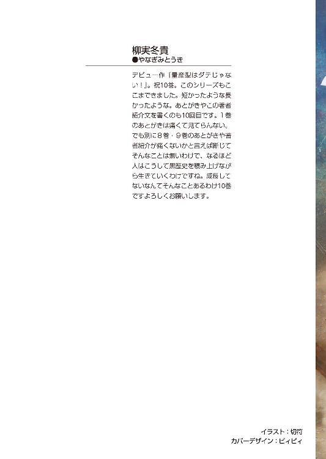
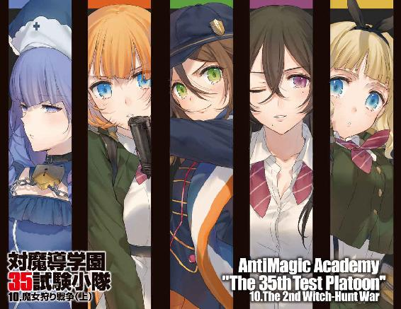
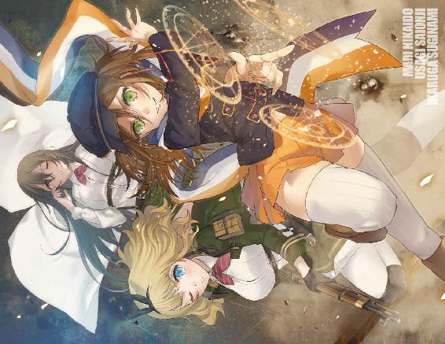
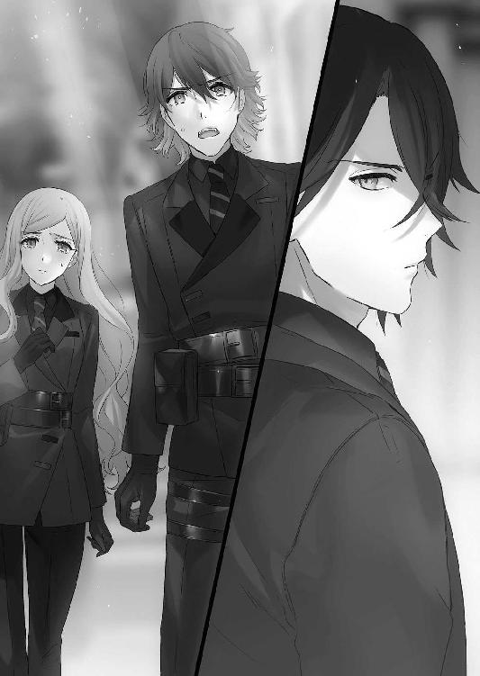
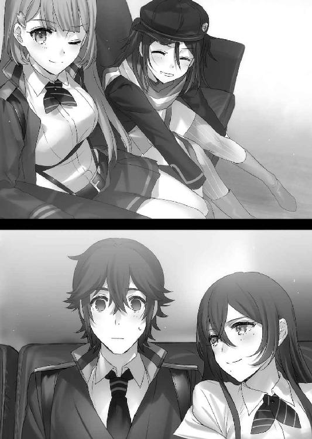
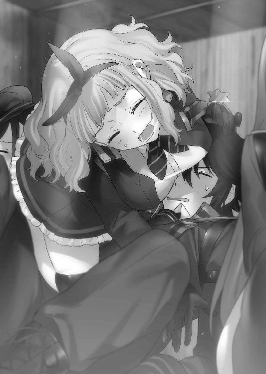
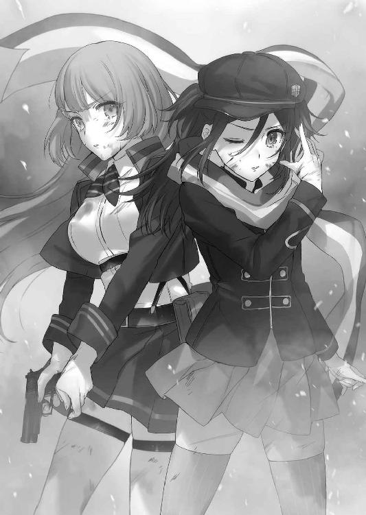
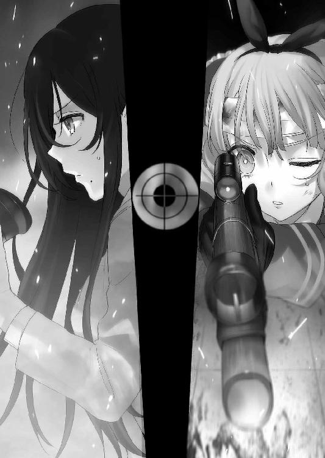
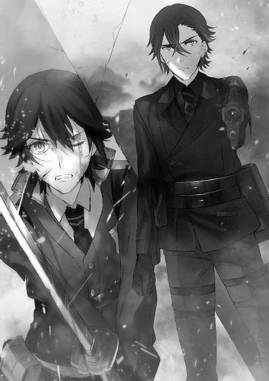
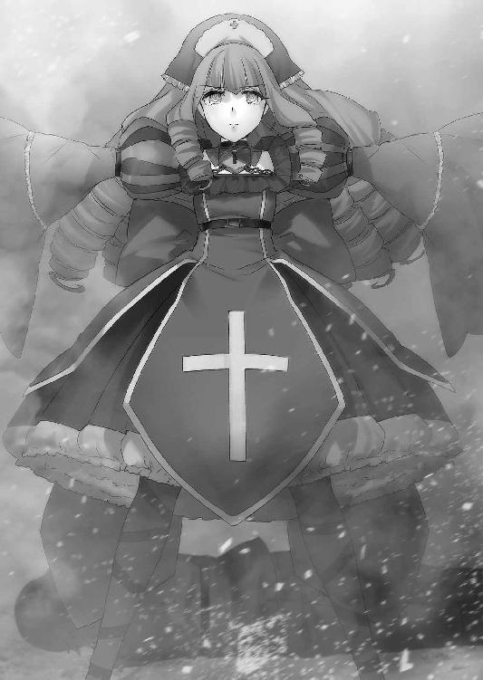

| 対魔導学園35試験小隊 10.魔女狩り戦争(上)<対魔導学園35試験小隊> (富士見ファンタジア文庫) | |
| 柳実 冬貴 | |
| (2015) | |



対魔導学園35試験小隊
10. 魔女狩り戦争（上）
柳実冬貴

富士見ファンタジア文庫
本作品の全部または一部を無断で複製、転載、配信、送信したり、ホームページ上に転載することを禁止します。また、本作品の内容を無断で改変、改ざん等を行うことも禁止します。
本作品購入時にご承諾いただいた規約により、有償・無償にかかわらず本作品を第三者に譲渡することはできません。
本作品を示すサムネイルなどのイメージ画像は、再ダウンロード時に予告なく変更される場合があります。
本作品は縦書きでレイアウトされています。
また、ご覧になるリーディングシステムにより、表示の差が認められることがあります。
口絵・本文イラスト 切符
プロローグ
思えば、タケルは落ち込むという経験をあまりしたことがなかった。
正確には落ち込んだとしても、今まではすぐに立ち直ってこれたのだ。
無理をするのが当たり前だった。そういう風に育てられたし、当たり前に自分自身に鞭を打ってきた。
草薙諸刃流の教えは、かいつまんで言えば「無茶をしろ」であったわけだし。
無理、無茶をすることなど日常だったのだ。
だからこそ、タケルは知らなかった。
心が折れる音色が、どういうものなのかを。
「............」
ここは異端同盟の本拠地、対魔導学園を模造した建物の屋上だ。神話世界の一部であるこの世界の空の下で、タケルは遠くを見つめていた。
ひび割れた空の向こう側は、ただの暗闇しかない。
あの先の暗闇の正体なんて知らないし、興味もない。
なのに、今にも吸い込まれてしまいそうになるのは何故なのだろう。こっちへくれば楽になるとでも言うように、引き寄せられそうになるのは何故なのだろう。
「............」
タケルは目を閉じて、建物の屋上で片膝を抱えた。
こうして一人でいるのは、頭の中を整理したかったからだ。
キセキを救う。その目的は変わらないし、貫くつもりでいた。
でも、
『それはキセキの望みじゃなくて、お兄ちゃんの望み......だよね？』
『どう？ 傷ついたよね？ キセキの気持ち、少しはわかった？』
キセキが救われることを望んでいない。
自分の考えている救いと、キセキが望む救いは真逆だった。
対魔導学園を離れて異端同盟に入り、ただ妹を救うためだけに今まで戦ってきた。アルケミスト第一研究施設に新たな仲間と共に攻め入り、ようやく願いが叶うと思った。
それなのに──タケルが伸ばした手はキセキ自身に払いのけられた。
『嫌』
あの一言が、頭から離れなかった。
何をどうすればいいのかが、現状何一つわからなかった。
仲間に相談する前に、ひとまず自分で考えるべきだ。タケルはそう思って二日ほど一人でいる時間を作ったのである。もちろんそれで解決の糸口が見つかるはずもなかった。
頭の中は整理できたが、根本的な問題を解決する方法は依然として見つからない。
キセキに自分の願いを受け入れてもらう方法が、見つからないのだ。
背中に重みを感じて、タケルは薄目を開ける。
「あの空の先に何があるのかは、誰も知らないんだ」
いつもより抑揚を抑えたその声は、異端同盟のリーダー、星白流だった。
いつの間に屋上へやってきたのか、すぐ背後にいたらしい。
「空の罅を見ればわかると思うけど、距離感が摑めないでしょ。どれだけあの罅や暗闇に向かって近づいても、たどり着けないんだ。世界はこんなに狭いのに、不思議だよね」
流はタケルに背を合わせて座りながら、彼の横にそっとコーヒーを置いた。
「最近ほとんど飲まず食わずじゃないか～。ダメだよ～そんなんじゃ身体がもたない」
タケルがうつむいたままで、流は頭をポリポリと搔いた。
「ごめん。うちのせいだ。もっと作戦を練って、時期を見極めるべきだった」
「それは違います。作戦が失敗したのは、俺がキセキの心を理解してなかったからだ。作戦は上手くいってた......生徒会長のせいじゃない」
掠れた声で、タケルは言った。
「全部全部上手くいっていたんだ。いろんな人の力を借りて、あそこまでたどり着けた。俺以外はベストを尽くしてくれた。ただ俺がキセキの兄貴として失格だった......それだけです」
流は小さく息を吐いて、少しだけ背中でタケルの背中を押した。
「やめるかい？ それも一つの手だよね。君達はもう戦わなくてもいい。君達は......いや、君は十分に傷ついた。十分過ぎるくらいに戦った。ここでやめても、誰も責めたりはしないよ？」
流の優しげな声に、タケルは即座に首を横に振った。
下を向いたまま、弱々しく。
「諦めません。何が何でも幸せにしてみせるって、あいつに言ったんです」
「そっか」
「でも......見つからないんですよ、あいつを救う手段が......あいつが救われてくれる方法が」
流は空を見上げて、目を閉じた。
「それはキセキちゃんを百鬼夜行の呪いから救う方法のこと？ それとも、キセキちゃんとの絆を取り戻す方法のことかな？ 前者なら、まだ可能性は残ってる。《憑依》の呪符はもう残っていないけれど、審問会がメフィストフェレスの本物の肉体を保管しているはずなんだ。その肉体を奪って、『悪魔』属性の魔力を抽出できれば、《憑依》の呪符を作ることができる」
方法が残っている。可能性が残っている。
その事実を耳にしても、タケルの心は沈んだままだった。
理由なんかわかっていた。
もはや問題は、そこではないということがわかっていた。
「......異端同盟の隠密部隊があっち側で、メフィストの身体の在処を探ってる。貴重な魔力属性が宿った肉体だから、処分されているとは考えにくい。問題は呪符を生成できたとして、キセキちゃんに無理矢理使用させることが難しいってところだね。キセキちゃんが望まない限りは実行できないんだ......君が悩んでいるのはそこだよね」
タケルは拳をぎゅっと握った。
そうなのだ。救う手段があっても、救わせる手段が無い。
キセキの拒絶はタケルの想像以上だった。
タケルが与える救いが、キセキにとっての救いではないことを認めた上で、キセキはタケルを拒絶した。結局のところタケルは自分が救われることしか考えておらず、そんな兄のエゴを見抜いた上で、キセキもまた自分のエゴを貫くことに決めたのだ。
もはや修復の余地は無かった。
だからもう、戦うしかない。
殺さない。殺すわけがない。キセキを殺すということは、自分の命を絶つことと同義だ。
力尽くで認めさせるしかない。
妹に──刃を向けて。
だがはたしてそれが最善なのか？ 力尽くでキセキを取り戻したとして、キセキは自分の願いを受け入れてくれるのか？
それでは何も解決しないんじゃないのか？
「正直なところ、悩む時間をあげるだけの猶予は残されてない。キセキちゃんは今、審問会本部にいる。そして、自分から望んで審問会に手を貸している。戦争が始まってしまった今となっては、キセキちゃんは鳳颯月によって兵器として運用されてしまうはずだ。あの男がいる限り、それはもう、絶対に避けられない」
異端同盟の敵は個人で世界に影響を与える人物だ。
もしかすると、キセキを第一研究施設から救いだそうとした時が、最後のチャンスだったのかもしれない。
それを最悪の結果にしてしまったのが自分だと思うと、タケルの胸は締めつけられた。
「あの白髪頭をどうにかしないと、キセキちゃんは救えないし、戦争は止められない。彼がいる限り、うちらが何をやっても裏を搔かれてしまう......そんな気がするんだ」
優先して対処に当たるべきは鳳颯月。
思えばいつも何かある度に、裏にあの男がいた。何を考えているかわからないあの笑みが頭に浮かんで、タケルは言いようのない怒りを感じる。
流はため息を吐いて、タケルの背中に自分の背中を預けた。
「キセキちゃんを救うのは君にしかできないことだよ。彼女は君の言葉を否定したけど、そうなった今でも、君の言葉しか聞き入れないと思うから」
タケルにとっては重い言葉だった。
「彼女をどうするかは君次第だ。もちろん、うちがどうするかを決めることもできるよ」
「............」
「これでもトップだからね～。その責務は果たすつもりでいるんだ」
流は命令しようと思えばできるのだ。
キセキを無理矢理捕縛するにしろ、タケルに説得させるにしろ、流には命令することができる。
そうしないのはきっと彼女なりの配慮なのだろう。
タケルは顔を伏せたままだが、立ち上がる。
「──キセキのことは、俺が決めます。決めさせてください」
「............」
「わがまま言ってすみません。必ず決めます。あいつの前に立った時は、今度こそ必ず」
何一つ方針が固まらないままだったが、決意だけは一丁前だなと、タケルは自分自身を心の奥で詰った。
だが、ここで膝を抱えていても意味はない。
行動しなければ、何も進まない。
「これ以上考えていても変わりません。今俺に、俺達にできることを全力でやります」
タケルは伏せた顔を上げて、流に向き直る。
流も立ち上がって、すでにこちらを向いていた。
「命令を、生徒会長」
タケルがそう言うと、流は赤い髪を風に遊ばせながら、目を細めた。
「実は、魔導サイドの情勢がだいぶきな臭くなってきてね。旧日本はまだ大規模な戦闘は始まってないけど、時間の問題だろう......ヨーロッパシェルターはイーストウェスト問わず戦争に参入することが決定したらしいんだ」
「!? 師匠とマザーが、それを決定したんですか!?」
流は頷いた。
タケルは、異端同盟の敵にオロチとマザーグースが含まれていたことを思い出した。
「あの二人はうちらにとっては中立の立場を取っていてくれた。君が魔導学園から帰ってくる時も、わざわざ連絡してくれたぐらいだしね。でも決して味方じゃないんだ......何が目的なのかはまだわからないけど、世界を変えるでも、世界を救うでもなく、『世界を書き換える』って、あの二人は言っていたんだ」
「......書き換える......？」
「うん。うちはなんだかその言葉が、とっても危険な響きに聞こえてね。だから味方とは思えなかったし、参戦を決定したって聞いた時、彼らが敵になるってことが確信に変わったよ。あの人達はきっともうすぐ行動を起こす」
「............」
「できればうちらは──その前に鳳颯月を叩いてしまいたいんだ」
流は心なしか真剣にタケルを見つめた。
「そこで君達に、向こうで探してほしいものがある。場所は境界線の奥......灰色都市の、さらに奥......臨界点」
臨界点......聖域についてタケルはあまり詳しくはないが、審問官ですら近づくことを禁じられた場所があると聞いたことがあった。
「異端同盟も人員不足でね～......セージ君や柚子穂ちゃん達も今は他の任務に当たっているんだ。危険な場所だけど、君達試験小隊は単独でそこに行ってもらいたいの」
臨界点は本当の意味で聖域に一番近い場所であり、不可視災害......つまり『虚無』の魔力が蔓延し、一歩間違えば一瞬で命を奪われる場所だと言われている。
不可視災害はこれ以上広がることはないとされているが、臨界点では波の満ち引きのようにセーフゾーンとデンジャーゾーンが移り変わる。安全かと思われた場所が、数分後に魔力の波が押し寄せて一瞬で命を落とすこともあるとか。
「そこで何を探せばいいんです？」
タケルが問うと、流は胸の前で腕を組んだ。
「異端同盟の元リーダー......つまり、桜花ちゃんのお父さんである峰城和眞さんが残した文書が隠されている。峰城さんは審問官を辞めた直後に、彼が殺される原因となった情報を臨界点に隠したの」
桜花の父親が殺された原因となった情報と聞かされて、タケルは目を見開いた。
流は風に靡く髪を手で押さえた。
「そこに何が書かれているのかは見つけてみないとわからない。でも、うちはこう予想してる。峰城さんが残した文書の中には、たぶん──」
そして、ひび割れた空の向こうの暗闇を見つめながら、こう言った。
「──鳳颯月の秘密が記されているはずだ。それが見つかれば、もしかするとこの戦争を止めるための材料になるかもしれない」
タケルや、桜花達にとっての、全ての始まりとなる男。
対魔導学園理事長、異端審問会会長──鳳颯月。
彼が何者なのかを、タケル達は此度の戦いで知ることとなる。
第一章 鐵
屋上を離れたタケルは、校舎を模した建物の中へ戻り、廊下を歩いていた。
この空間にいると、外の情勢が全くわからない。情報は入ってくるのだが、それが実感として伝わってこないのだ。
外の世界では『第二次魔女狩り戦争』がすでに始まっている。
旧日本にはほとんど戦火は及んでいないようだが、海外では魔女達の転送魔法による一方的な侵略が始まっているらしい。もはや境界線で起こった純血の徒によるボーダーライン作戦程度の小競り合いでは済まない。本当の意味での戦争が勃発しているのだ。
キセキの実戦投入が開始されたという情報はまだタケルの耳に届いていない。
今のキセキは核以上の抑止力であり、審問会にとっての最終兵器でもある。
「............」
タケルは奥歯を嚙みしめながら、怒りに耐えた。
キセキを兵器として扱い、戦争の道具として利用するのは外道の所業だ。
たとえキセキがそう扱われることを望んでいたとしても、兄として認めるわけにはいかない。
（......利用なんてさせない......！ キセキは俺の妹だ......兵器なんかじゃない......！）
キセキを助けると言っておきながら拷問じみた実験に投じ、タケルや仲間達を裏切り続けてきた男、鳳颯月。
その実体は、何一つわかっていない。
『鳳颯月については謎に包まれてる。一つわかることは、歴史の陰であの男らしき人物が幾度となく登場しているってこと。それらの人物達は、全員没年が不明になってる。うちらは遺物として残されていたその中の一人の毛髪を入手して調べたんだ。そしたら、鳳颯月とＤＮＡが一致した』
その歴史に登場する颯月らしき人物達は、皆例外なく大きな戦争に関わっているらしい。
『人間なのか、魔法使いなのか、それともそれ以外の何かなのか......あの男を倒すためには、うちらはそれを知らなきゃいけない』
流曰く、異端同盟ですら颯月についてわかることはそれだけだと言っていた。
「............」
あの男が何者で、何を考えているかなど、タケルにはわからない。
キセキを利用して戦争に勝利しようとしているのはわかる。
だが、タケルにミスティルテインを与えた理由は？ タケルのこともキセキ同様に兵器として扱うつもりだったのか？
戦争に勝つために？
......違う。
『なあ草薙......教えてやるよ......会長が何を望んでいるのか......あの人は、この世界を滅ぼすつもりなんすよ......』
タケル達を追ってきたエグゼのマグノリアが言っていた。
あの男の目的は、世界を滅ぼすことだと。
『この世界は間違っているんだとさ......本来は魔力とか魔法とか、そんなもんは初めから存在していなかったらしい』
間違っているとは、どういう意味なのだろう。
考えれば考えるほど、あの男のことが見えてこない。
タケルは頭を振って、あえて考えることを放棄する。
文書を見つけさえすればわかることだ。今は考えても仕方がない。
戦争を止めることは、キセキを兵器として利用させないことにも繫がる。そのためにあの男のことを調べる必要があるのであれば、全力で挑むだけだ。
自分にそう言い聞かせても、どういうわけかタケルの胸はざわつくばかりだった。
「──お、おっかないよ？ 草薙君」
声をかけられて、タケルはハッとした。
いつの間にか険しくなっていた表情を和らげて前を向く。
するとそこには、車椅子に乗った少女がいた。さらにはその車椅子を押す緑色のドレスを着た少女の姿もある。二人は全く同じ顔をしていた。
「吉水......？」
タケルが名前を呼ぶと、車椅子に座ったまま、吉水明は薄く微笑んだ。
「久しぶり、なんだよね？ また会えて嬉しいよ」
はにかむように笑って、明は頰を指で搔いた。
「意識が戻ってたのか？ も、もう、大丈夫なのか!?」
タケルは駆け寄ろうとしたが、その瞬間、突然目の前にラピスが出現した。
思わず足を止めてしまう。
「宿主、下がってください。危険です」
「吉水が危険なわけないだろっ」
「違います。彼女の後ろに立っている輩が問題なのです」
輩って......と思いつつ、明の後ろを見やる。
緑色のドレスの少女が、ジト目でこちらを睨んでいた。
吉水明とうり二つのその姿。双子だったなんて聞いたことがないし、普通に考えればこの少女は──
「霧ヶ谷京夜のレリックイーター、『ネロ』です」
結論を出す前に、ラピスが答えた。
ネロとは、タケルも言葉を交わしたことが一度だけある。京夜にキセキを一時的に殺された時だ。ネロが契約者に欲するのは復讐心であるが故に、彼女は京夜の復讐心を煽り立てていた。
警戒するのは正しいだろう。何故明の車椅子を彼女が押しているのかはわからないが、どう考えても味方とは考えにくい相手だ。
ドレスの少女、ネロはふんと鼻を鳴らした。
「なにさ？ 私を警戒してんの？ 安心しなよ、こっちはお前達に微塵も興味ねーから」
ネロが嘲るように口元を歪めてそっぽを向く。
ラピスは彼女をじっと見つめたまま、微かに首を傾げた。
「あなたが人型になって出歩くとは、意外です。契約者を煽ることだけがあなたの存在意義だと思っていたのですが、どういう心境の変化ですか？」
「あーそ、喧嘩売ってんだぁ？ 言っとくけど私はなーんも変わってねーから。残念でした。つーか長い間契約者も選べずにうろうろしていたお前が何調子くれたこと言っちゃってんの？」
「解せないといえばあなたのその姿もです。吉水明様の意識が戻ったのであれば、霧ヶ谷京夜に対してその姿は復讐心を煽るのには適しません。いつまでも他人の姿を真似るのはやめたらどうですか？ 人格に性別が存在しないあなたがいつまでもその姿に固執するのは滑稽と言わざるを得ません」
「あははははは！ お前のその姿だって草薙ミコトが基盤でしょーが！ 神器のくせにいつまでも引きずってんじゃねーよなっさけない！」
薄目を開けて爆笑しながらラピスを睨むネロ。
ラピスも負けず劣らず、無表情でネロを睨んでいた。
（......ラピスって、なんで他の魔導遺産に対してこうも挑発的なんだろうか。相手も大概だが......）
口を挟む余地が無かったためタケルは傍観していたが、次第に険悪の度が過ぎ始めてきた。目を糸のように細くしながら、タケルはラピスを止めようとした。
「こ～ら、ネロちゃんそのへんにしときなさい」
タケルと同じように目を細めた明が、ため息交じりにネロを宥めた。
白熱した口論に口を挟まれて、ネロは舌打ちをしながら顔を背け、空気に溶けるように姿を消した。ネロが明の言うことを聞いていることがまず驚きだったが、ネロの存在を認知している明にも驚きだった。
明がこちらに向き直って車椅子のハンドリムを自分で回してタケルのそばまでやってきた。ラピスもタケルの心情を察したのか、再び姿を消す。
こうして目の前にしてみても、いまだに信じられない。
本当に吉水明だった。
「もう大丈夫なのか......？ 動いて平気なのか？」
「うん。ちょっとだるいけどもう大丈夫だよ。って言っても、実は目が覚めてから結構日が経ってるんだけどね。身体の調整が必要だったから、すぐに挨拶できなかったんだ」
「............そうか」
どう返していいかわからず、タケルは押し黙った。
彼女が、自分がどういう状況にあるのか把握できているかわからなかったからだ。
明は膝の上で指と指を組み合わせて、下を向く。
「キョーちゃ......タイチョーから全部聞いてるから、心配しなくても平気だよ。もう全部、知ってるから」
明は顔を上げて苦笑した。
明るく笑ってはいるが、眠っていた間に起こったことや自分自身のことを聞かされて普通にしていられるはずがない。彼女が真実を知った時の動揺は、計り知れないものだっただろう。
それでも笑顔を絶やさない明のことを、強い子だと思った。
どういう顔をしていいかわからないタケルは目を泳がせる。
明は笑顔だった表情を少しだけ曇らせた。
そして突然、頭を下げた。
「草薙君が私を助けてくれたってタイチョーから聞いたの......タイチョーが私のために暴走しちゃった時も、一生懸命止めようとしてくれたって」
明の顔は見えない。けれど彼女が自責の念を感じているのはひしひしと伝わってきた。
タケルの胸が締めつけられる。
「......頭なんか下げないでくれ。俺は──」
「──ありがとう」
タケルは息を吞んだ。
膝の上に置かれた明の手は、震えていた。
「草薙君は自分にとって大切なものを犠牲にして、私のことを救ってくれたんだよね。なんてお礼を言ったらいいかわからないけど、本当にありがとう」
「やめてくれ......！ 俺は吉水のことを救おうとしていたわけじゃない。自分のことを優先して、見捨てようとしたんだ......！ 礼を言われるようなことはしてない......！」
礼を言われることに耐えられなくなって、タケルは少し声を荒らげた。
それでも明はタケルに頭を下げ続ける。
ぽたりと、彼女の手の甲に涙の雫が落ちた。
「それでも......ありがとう。記憶が全く同じでも、自分の身体も魂も、オリジナルじゃないってわかってる。本当の自分はとっくに死んでて、今ここにいる自分が吉水明のコピーだっていうことも、よくわかってる。でも......それでも私は目が覚めた時も、真実を知った時も......」
「......っ」
「生きていられたことが、キョーちゃんにまた会えたことが嬉しいって......思ったんだ」
だから、ありがとう。
明は顔を上げて、涙を流しながらそう言った。
タケルは自分のしたことが正しいことなどとは思えなかった。
自分勝手に行動し、失敗したから、今救える者を優先したまでに過ぎない。
そんな人間がお礼を言われる立場にいるだなんて納得できるわけがなかった。
わりきってやってきた。だから礼を言われるのは、正直辛かった。
タケルは踵を返し、逃げるようにその場を離れる。
「草薙君！」
呼び止められて、思わず足が止まった。
「草薙君が自分を責めてるのは、なんとなくわかるよ」
「............」
「でも、君が私を救ってくれたのは事実なんだ。胸を張ってほしいなんて言えないけど」
「............」
「......自分が何も成し遂げられなかったなんて思わないでほしい。少なくとも君は、私を救ってくれたから......！」
タケルは自分の心臓を摑むように、胸元を握りしめた。
背を向けてしまった自分を恥じる。
自分のしたことに責任を負わずに逃げるのは卑怯者がすることだ。
キセキを救えなかったのも、理由はどうあれ明を救う結果になったことも、全て自分が判断したことだ。なのに勝手に自責の念に潰されそうになりながら、救ったという事実から目を背けるなんて、愚か者の極みだ。
救ってもらったことに感謝しているのに、救った人間が礼を拒絶すれば、傷つくに決まっているじゃないか。お前を助けたかったわけじゃないなんて非情な言葉は、まるで明が生きていてはいけないみたいではないか。
タケルは奥歯を嚙みしめながらも、背筋を伸ばした。
「......吉水が元気になってくれて俺も嬉しいんだ。胸は張れないけど、そこは本当だ」
「......ありがとう」
「俺は妹を救出するための手段を、吉水に使ったことを後悔してない。俺の中に優先順位があったとしても、吉水を救うことを迷ったりはしなかった。それだけは、覚えておいてほしい」
タケルは本当のことだけを告げて、その場を去った。
未熟な自分に腹が立つ。最初に明を見た時に、心から祝福してやれなかった自分が許せない。人の心がどういうものなのかを学んだはずなのに、どこまでも自分勝手な自分が、情けなくて仕方がなかった。
＊＊＊
対魔導学園理事長室の扉を閉めた後、鐵隼人はしばし動きを止めていた。
洗練された刃によって造られた彫刻のようなその相貌に、感情の揺れは無い。
だが彼の瞳の奥には、人の何倍もの怒りが渦巻いていた。
隼人はその怒りを静めるように目を閉じて、握った拳を解いた。
「先輩！」
廊下の奥からやってくるのは、二人の男女だった。
彼らの着ている審問官の制服の色は黒色。つまり二人は隼人の部下、第零殲滅機動隊『エグゼ』の隊員だった。
男の方は茶色い髪の細身ながらも引き締まった身体を持つ青年だった。見るからに軽薄そうな外見だが、彼の表情にはプロの異端審問官としての毅然さが宿っている。もう一人はウェーブのかかった長髪の女性だ。穏やかな相貌の中にも、一本芯の通った凜々しさがある。
男の方は城ヶ崎衛、女の方は姫宮居織という。二人とも、隼人が信頼を置く部下だ。
二人は隼人の前までくると、敬礼をして姿勢を正した。
「会長は何と？ エグゼはどうなるんです？」
「衛。ぶしつけすぎるでしょう。少し落ち着きなさい。それと先輩ではなく隊長と呼びなさい」
くってかかるような勢いの衛を、居織がなだめる。
衛は納得がいかないような顔で両手を広げた。
「これが落ち着いていられるかよ！ エグゼの存続の危機なんだぜ!?」
「わかっているわ。だからこそ落ち着くべきよ。私達がわめいたところで、結果が変わるわけではないわ」
対照的な二人の口論を他所に、隼人は踵を返して歩き始めた。
二人も慌ててそれに続く。
「答えてくださいよ先輩......！ 上の命令は何です？ 俺達はどうなるんです!?」
「追って通達があるはずだ。それまで待て」
冷たい一言に、衛は眉根を寄せた。
「......それはないでしょう？ 俺達にだって知る権利くらいあるはずですよ。俺達だけじゃない、契約者以外の他の隊員だって報告を待ってるんですッ」

「............」
「エグゼは戦争が本格化してから一度も出撃していません......！ マグノリア達は動いていたのに、俺達が待機なんておかしいじゃないですか」
居織が衛の肩を摑み、首を横に振る。
衛も無礼は承知の上だったのだろう。信頼を置く上司である隼人にくってかかるのをためらわないほどに、上層部によるエグゼの待機命令は異常事態だったのだ。
魔女達によるボーダーライン侵攻作戦以降、本格的な戦争へと発展したにもかかわらず、エグゼに出撃命令が出たことは一度も無かった。
敵は転送魔法により旧日本のどんな場所にでも出現する可能性がある。異端審問会は主要な審問会本部及び支部、街に全騎士団を派遣。いつ敵が攻めてきても対応できるように配置されていた。
だがそんな中で、審問会にとって最も強力な部隊であるエグゼには待機命令が出されていた。本部の防衛でもなければ要人の警護でもなく待機だ。
このとんでもない非常時にエグゼに何もするなという命令が下されているのだ。
「それもこれも、量産型レリックイーターが完成したせいだ。俺達はお払い箱ってことですか？」
悔しげに腕を振るい、衛は隼人に答えを求めた。
隼人が足を止める。
衛と居織は、彼の言葉を待った。
「会長より直々に通達があった。既存のエグゼは一時的に解体だ」
「......やっぱりか......！」
衛は忌々しげに左手の平に右手拳を打ちつけた。居織も想像はしていたのだろうが、瞳の揺れが動揺を隠し切れていない。
「誤解するな。解体と言っても消えるわけではない」
「......どういう意味です？」
「解体されるのはエグゼだけではなく、第一殲機、第二、第三殲機も同様だ」
「!? だ、第一って、量産型を採用してる部隊じゃないですか......」
衛が怪訝そうにしていると、隼人が振り返る。
「殲滅機動隊は一つに統合され、新生エグゼとして再編成される予定だ。戦時下故、組織が統一されるのは予想できることだろう。騎士団と薬師もエグゼの指揮下に入る」
「............」
「今回呼び出されたのはそれだけだ。もう一度言うが、エグゼが消滅するわけではない。事が落ち着けば再々編成もされるだろう。以上だ」
隼人の淡々とした報告を聞いて、衛は気が抜けたのかふにゃふにゃとその場に尻餅をついた。
「なんだよ～......おい姫宮っ、お前の予想外れてんじゃん」
「可能性として考えられるって言っただけでしょ。落ち着けって再三言ったでしょうに」
呆れ顔の居織と、安堵したのか少年のように笑う衛。
隼人は二人の前でじっと動かない。
「先輩も水くさいですよ。今俺達に伝えても何も問題ないじゃないですか」
「先輩じゃなくて隊長。まったく......あなた学園卒業してもう何年経っていると思ってるのよ。いつまで学生気分でいるつもりなの？」
「先輩はいつまで経っても先輩だろ？ 仕事においても人生においても男としても、先輩は俺の先輩だ。ねっ、そうでしょ先輩！」
ビシッと笑顔で親指を立てる衛。居織は肩を落としてため息を吐いた。
「今こうして先輩と同じ部隊にいられることが俺の誇りなんだ。だからエグゼが消えるってことは俺の居場所がなくなるってことなわけよ」
「なわけよって......本当、試験小隊の隊長やってた頃から変わってないんだから」
「人はそうそう変わるもんじゃねーの。って、そうだ、殲機が統合されるってことは、指揮はもちろん先輩が執るんですよね？」
笑顔で尋ねてくる衛を隼人は無表情に見下ろしていたが、胸の隊長章に視線を落とすと、それに指で触れた。
隼人は隊長章を剝ぎ取り、衛へ向けて指で弾いた。
飛んできた隊長章を慌てて衛がキャッチする。
「......え？」
呆けた顔で衛が隼人を見上げる。
隼人は背を向けると、再び歩き出した。
「エグゼは貴様に預ける。戻るまで支えておけ」
「......どういう意味です？」
「俺はしばらく本部を離れる。後のことは任せたぞ」
隼人はそれだけ言って、スタスタと歩いて行ってしまう。
「わけがわかりませんよ！ そんな説明も無しに──」
衛が立ち上がって隼人を追いかけようとした時、隼人が足を止めて肩越しから彼を睨んだ。背中から刃を突きつけられたような寒気が衛の背筋を襲う。
「──何があろうと、絶対に俺を追うな。貴様らは自分の職務を全うしろ」
表情からは伝わらずとも、瞳の奥に秘められた隼人の感情が衛の身体を硬直させる。
この目をしている時の隼人に逆らうのは自殺行為であるということを、衛は知っている。
隼人はそれ以降、一度も振り返らずにその場を去った。
残された衛と居織は、彼の後を追いかけることができなかった。
隼人が部下達と別れてから一時間後。
彼は車で街中を走っていた。
外は雨が降っており、視界が悪い。まだ夕刻だというのに日の光はほとんど地上に届いていなかった。
街の明かりは以前と変わらず和やかだ。純血の徒による襲撃で市民の疎開が始まったが、それでもまだ街には人が多く残っている。
スーツを着て携帯を手に電話をする会社員、ショッピングに興じる主婦、会話に花を咲かせる女子高生。半年前に幻想教団によるテロが起き、それに引き続いて百鬼夜行の暴走、さらに純血の徒によるボーダーライン侵攻作戦......それだけの惨事が起こっていながら、いまだに旧日本の人々は危機感を抱いていなかった。
敵が転送魔法によりどこにでも出現する可能性があるということは発表されていない。この事実が公表されれば混乱は加速し、どこにいようと危険であるということが知れ渡る。
審問会本部があるこの街が一番安全。
テレビ放送などのメディアで伝えられているのはこの程度だ。
一般市民は旧日本がどれだけ危機的状況にあるのかまだ知らない。無論、この地域一帯が審問会本部に近い場所であり、安全が守られているというのは事実だった。無駄な混乱を招くよりは、少なくともこの平和ボケの極みとも言える状況は審問会にとっては好都合ではある。
しかし、隼人は予想する。
いずれこの場所は、戦場と化すだろう、と。
「............」
赤信号で停車し、隼人はバックミラーに視線を移す。
雨というのもあり、どこかで事故が発生したのか、道路は渋滞に陥っていた。
隼人はミラーを見つめたまま、指でハンドルを叩く。普段の彼にこのような癖は無い。
トン、トンと、リズムを刻むように指で叩く。
視線はバックミラーに映った、三車両後ろの黒いバンの運転席にとまっている。
運転席に座るのは、携帯を耳に当てて腕時計を確認する男性だ。
見る限り一般人。冴えない会社員といった様相と仕草だった。
そんな彼を、隼人はじっと見つめていた。
五秒、八秒......一〇秒。
決して視線を逸らさずに見つめ続けていると──こちらを見ていなかったはずの男性と、目が合った。
隼人は指のリズムを止めて、ハンドルを強く握った。
──ギャゴッ......！
隼人は信号が青に変わった瞬間、ギアをチェンジしてアクセルを全力で踏み、ハンドルを切った。
タイヤが水を一瞬ではじき飛ばし、煙を上げて回転する。
急発進した車は、左へ。左に車道は無い。歩道を突っ切り、ビルとビルの間の路地裏へ突っ込んだ。
本来車が通れるだけのスペースが無い場所へ無理矢理車体を押し込み、隼人は車を走らせた。車体と壁が擦れ合い、火花が散る。ドアが吹き飛び、運転席がひしゃげても隼人はアクセルを踏み続けた。
タイヤがパンクし、ボンネットが煙を上げる。
隼人は車が止まるとほぼ同時にフロントガラスを蹴り破り、車内から外へと脱出した。
「くそっ！ いつから気づかれていた!?」
隼人の車から三車両後ろにいた黒いバンから、ぞろぞろと男達が降りてくる。
併せて十人。全員異端審問官だ。
色は黒。つまり統合された新生エグゼの隊員達だった。
それぞれ小火器を手に持ち、いつでも戦える状態だった。
「最初から気づかれていたさ。鐵隼人を甘く見るな。奴はレリックイーターが無くとも化け物じみている。気を抜けば全員殺されるぞ」
「どうします？」
「六人は先回りして路地を塞げ。俺と残り三人は直接追う」
「俺達の目的は尾行です。捕獲は命令にありませんよ？」
「バレてしまった以上は、捕らえて口を割らせるしかない」
隊長らしき男はそう言うと、トランクから黒い棺のような箱を取り出して開封した。
中には小型のレールガン......銃身には『The Malleus Maleficarum Production Model 〝Guillotine〟』と彫られている。
量産型のレリックイーターだった。
「隊長、それはさすがに......」
「許可は出ている。最悪殺してしまっても問題ない」
男はレールガンを手に持つと、くるりと一回転させてから肩に担いだ。
命令された六人は二手に分かれ、路地裏の出口を塞ぎに向かう。
隊長は三人を伴って路地裏へと進入し、隼人の乗っていた車を乗り越えて彼を追った。
追いかけ始めて間もなく、のんびりと路地裏を歩いている隼人を発見する。
隼人は靴音を響かせながら、Ｔ字路になっている角を左に曲がった。
部下を先行させて、隊長は隼人を追う。
警戒しつつ先頭を行く部下が角を曲がり、銃口を向けようとした瞬間、
──手に持っていたハンドガンの遊底が後方にスライドしたかと思えば、そのまま銃自体が分解した。
「──え？」
持っていた武器が一瞬でバラバラにされたのに気づいた直後、何者かの掌が眼前に押し寄せた。
掌底だ。避けられるはずもなく、鼻と顎が砕け、部下が吹き飛ばされて壁に激突する。
壁に後頭部を強打した隊員は、頭部と鼻から多量に出血しながら白目を剝いた。
部下二人があまりに一瞬の出来事に固まっていると、彼らの目の前に黒い影が躍り出る。
反応などできるはずもない。人間の動体視力で捕捉できる速さではなかった。
一人目は顔面を蹴られて首がひしゃげ、もう一人は顔を鷲づかみにされるとそのまま頭ごと地面に叩きつけられた。
ふわりとコートの裾が舞い、重力に従って落ちる。隊長の目の前に、部下の頭を地面に叩きつけた姿勢のままこちらを見つめる隼人の姿があった。それぞれが銃を持っていたにもかかわらず、一発も射撃することなく全員が行動不能に陥ってしまった。
これまでの一連の惨劇が完了するまで、一秒にも満たなかった。
喉が渇いて張りつくのを感じながらも、隊長はギロチンの銃口を隼人へ向ける。
「作戦変更。各員、現場へ急行しろ」
無線で仲間に連絡し、隊長は意識を集中させる。
こちらにはレリックイーターがある。たとえ鐵隼人が相手であろうと、レリックイーターにより人外の力を用いれば制圧できる。
相手はどんなに強くとも人間だ。決して負けることはない。
隊長は自分を奮い立たせながら、手を前へ掲げた。
「限りなき願いをも──」
そして、魔女狩り化を実行すべく足元に魔法陣を──
──フォン！
風を切る音色が耳に届いた時には、すでに遅かった。隼人の姿が消えたかと思えば、真上から右肩へ衝撃が走る。跳躍した隼人が、自重を加えた踵落としを放ったのだ。
「ぐがっ......！」
魔女狩り化が中断され、隊長が地面に膝をつく。
迂闊。騒ぎを起こさないよう、魔女狩り化をせずに路地裏に足を踏み入れたのが間違いだ。万全を期してその前に魔女狩り化を済ませておくべきだった。
反省する間もなく、今度は闇の中で刃がきらめいた。
そのきらめきはギロチンを持つ右手へ。一度まばたきをし、目を開いた隊長が見たのは、地面に転がる自分の右手とレリックイーターだ。
完封された。レリックイーターは手元を離れればいかなる魔法も実行できない。
顔を上げると、隼人が左手に持った抗魔ナイフを右手に持ち替えるのが見えた。
──殺される。
隊長が覚悟を決めた直後、隼人は右手にナイフを持ったまま上半身をひねり、後方へ向けてナイフを投擲した。
丁度その時、路地裏の角から部下が姿を現した。
ナイフは右足に突き刺さり、部下が悲鳴を上げてよろめく。隼人はすかさず懐から大型拳銃を引き抜き、Ｔ字路に背を向けたまま脇の下から射撃した。弾は麻酔弾だ。隼人は部下の頭部に麻酔弾を直撃させると同時に、身体の向きを反転させてＴ字路の右角へ向けて残りの弾を全弾射撃した。
最初の一人がやられたことで警戒したのか、残りの五名はＴ字路から姿を現さない。
隼人はＴ字路の方へ落ち着いた動作で身体を向ける。
そして、腰のベルトにつけられた手榴弾を二つ、投擲した。
路地に隠れていた隊員達の短い悲鳴が響く。
閃光と煙が爆発する。
激しく咳き込む声が聞こえてくると同時に、隼人はＴ字路へと猛スピードで突入する。腕を切り落とされた隊長は切り口を逆の手で押さえながら、煙に包まれるＴ字路の方を見ていた。打撃音と射撃音、さらなる悲鳴が聞こえてくるが、煙のせいで何も見えない。
その悲鳴も、たったの三秒で何事も無かったかのように静まり返った。
「......っ......」
隊長は震えながら、煙に包まれた視界に息を吞む。
見えずともわかる。全滅だ。あの一瞬で、九人もいた仲間が全滅である。
隼人を甘く見ていたのは自分の方だと、隊長は自分を戒めた。彼も長年魔女狩りとして仕事をしてきた一端の異端審問官である。どれだけ途方もない恐怖が目の前にあろうと、今何をすべきかは把握していた。
左手でギロチンを拾い、魔女狩り化を完了させるのが最優先。中断した魔女狩り化を再開させ、静かに魔法陣を出現させる。レリックイーターは術式を組む必要も、魔力を練る必要も無い。特にギロチンは審問会に捕らえられた魔女達の魔力と脳に直結しているため、魔法の発動は既存のレリックイーターよりも素早く行える。
鋼色の装甲が、隊長を包む。
魔女狩り化は完了した。腕を接合している暇はないが、止血もすぐにやってくれた。
いける──そう思った瞬間、煙の中からぬぅっと腕が伸びてきた。目の前に迫る掌が、隊長の顔面を鷲摑む。さらには、銃口が隊長の左目にぴったりと押しつけられた。
隊長が引きつったような声を上げる。
煙の中から、青く冷たい光を宿す瞳がこちらを睨んでいた。
隼人は煙が晴れるのを待ち、静かに口を開く。
「貴様ら、第一殲機だな。何故俺を追う？」
「こ、答える必要は──」
震えながら隊長が隼人の命令に逆らった瞬間、銃の引き金が絞られた。実弾を再装塡していたのだろう。火薬が破裂する射撃音が響き、隊長の眼球が弾丸により破裂した。痛みによる悲痛な叫びが路地裏に木霊する。
隼人の使用している拳銃は五〇口径のオートマチック。普通の人間ならば頭が破裂して死んでいる。眼球のみで済んだのは、レリックイーターの強化のおかげだ。
「抗魔弾ではない。何発撃とうとも貴様の頭蓋は砕けないだろう」
「あぐっ......！ ぐぁぁっ......！」
「だがレリックイーターでも眼球の強化、再生は難しい。攻撃力と防御力に特化したギロチンは再生能力がほぼ皆無だ。五〇口径の通常弾でも戦闘不能には追い込めるぞ」
今度は隊長の口内に銃口を突っ込み、再び冷ややかに問いかける。
「誰の命令だ。何故俺を追う」
「ぐ、ぎ......だ、だれ、が」
「そうか」
隼人は容赦なく、トリガーを何度も引き絞った。銃声と共に隊長の悲鳴が轟く。食道の中を弾丸が跳弾し、柔らかい肉を破った。それでも死なない。吐血し、息が詰まっても、レリックイーターで強化されている人間は抗魔弾でない限りこの程度では死なないのだ。
片腕を失った隊長には、隼人を攻撃する手段が無かった。そもそも隼人に攻撃を加えられるだけの隙が無い。できることは強化を与えてくれているレリックイーターを手放さないように必死で握り締めることだけ。
隼人は弾倉に三発だけ残し、今度は隊長の右目に銃口を当てた。隊長は苦痛に喘ぎながらもヒューヒューと苦しげな息を吐いた。
「できれば同僚をこれ以上撃ちたくはない。声帯を再生させて迅速に答えろ。両目とも義眼になるのが望みか？」
「......がっ......ぁっ」
「何故俺を追う」
全く感情を込めない声で、隼人が三度問う。
隊長は右目から涙を流した。恐怖からくる涙ではない。痛みと諦めからくる涙だった。
隊長は地面に両膝をつき、答える。
「......っ、会長の、命令、だ......あなたに、は......メフィスト......フェレスの......肉体を盗んだ......容疑がかけられて、いる......」
「続けろ」
隼人は隊長から手を離し、銃のマガジンを入れ替えながら話を聞いた。
戦意を喪失した隊長は、苦しげに息をしながら話を続ける。
「捕縛し......尋問しろとの......命令......だ」
「命令はそれだけか？」
「......そうです......」
「......そうか。任務ご苦労」
──パシュン。
装弾し終えた後、矢継ぎ早に隼人はトリガーを引いた。
強化されていない右眼球と眼窩の隙間に針が刺さり、隊長は声も無くその場に倒れ伏した。
隼人は隊長のインカムを取り上げ、スピーカーに耳を傾ける。聞こえてくるのは第一殲滅機動隊の通信だ。他の隊員が隊長の返信を待っている。だが、路地裏に突入したのは隼人が倒した人数で全員のようだ。
状況から察するに、狙撃班が建物の屋上から狙っているはずだった。
「............」
第一殲機隊長の話通りであれば、隼人はメフィストフェレスの肉体を盗んだ容疑で追われている。数日前、確かにメフィストの護送が行われ、肉体が行方不明になっている。
だがそれだけの容疑で尾行されるとは考えにくい。その程度であれば尾行などせず、直接逮捕状を突きつけてやればいいのだ。
では、何故わざわざ尾行などというまどろっこしいことをしているのか。レリックイーターの反応を探れば居場所など一発でわかるのだから、尾行などする必要はない。
となれば、
「......俺の目的は読まれている、ということか」
隼人はインカムを捨てて、五〇口径拳銃の弾倉を再び実弾に装塡し、スライドを引いた。
そして、靴音を響かせながら、ゆっくりと路地裏の闇へ消えていった。
第二章 前へ進むために
夜も更け、夕食を終えた後、タケルは自室へ戻る前にある場所へ向かっていた。
『作戦前はそこにいた方がリラックスできるはずだよ～』
そんな流の言葉通りにやってきたはいいが、いったい何があると言うのだろう。
作戦についての説明は明日行われるらしく、今日はひとまずよく休めということだった。
一番端の部屋の前にきて、不意に懐かしさを覚えた。
「ここって......」
見覚えのある扉を見て、思わずノブに手が伸びる。
少しの緊張の後、ノブを引いてタケルは扉を開いた。
優しい蛍光灯の光が漏れだし、その部屋へ足を踏み入れる。
そこにはいつものソファといつもの紅茶、いつもの仲間達がいた。
「......俺達の小隊室？」
そこはかつてのタケルの居場所だった。紅茶の匂い、ガンオイルの匂い、檜でできた家具の香り。見慣れたテーブルに、ソファ。本棚に飾られたドラグーンのプラモや、斑鳩のくだらない雑誌、うさぎのお料理本、桜花の参考書。
そして当たり前にソファに座ってくつろいでいる、仲間達。
思わず、涙が零れそうになった。
涙ぐんでいるタケルに、ソファに座った仲間達が顔を向けた。
タケルが慌てて目を逸らすと、皆が一斉に立ち上がった。
「ちょっ、えっ？ 何泣いてんのタケル!?」
「どうした!? 誰に泣かされた!?」
「怪我でもしたんですの!?」
マリと桜花とうさぎがタケルに駆け寄って、心配そうに顔を覗き込んでくる。
タケルは赤い顔を必死に逸らした。
「いや......別に何でもねぇっ、何でもねぇよ......」
「何でもないってことはないでしょ!? どっか痛いの!? 見せてみて！」
「草薙が泣いているところなんて初めて見ましたわ......いろいろ抱えすぎてしまっていたんですのね」
「私は見たことあるが、このタイミングで何故泣くのか......」
桜花の一言にうさぎとマリが「聞き捨てならねぇな」みたいな目で睨む。
それを見て、ソファに座ったままの斑鳩がクスクスと笑った。
タケルには自分が泣いている理由が痛いほどよくわかっていた。この空間に足を踏み入れた時、まるで家に帰ってきたかのような安心感が胸を突いたのだ。
自分がこの場所にいられるということ。
そして仲間が変わらずにいてくれたということ。
それがあまりにも懐かしくて、愛おしくて、たまらず涙が出てきた。
これほどまでに自分がこの居場所に焦がれていたのか、いまいちど理解する。
（ああ......俺ってほんと、仲間がいねぇとダメなんだな......）
わかりきっていたことだが、改めて痛感した。キセキにとってタケルのしたことは裏切りなのかも知れないけれど、仲間といることを諦めないという選択をしたことに、後悔はない。心の底からそう思えた。
第一研究施設に乗り込み、キセキの救出に失敗した後、桜花に一人で抱え込むなと言われたことで、タケルは仲間達に相談すると決めた。この部屋は星白流が気が休まるようにと、対魔導学園の小隊室を模して急造で完成させたらしい。効果は覿面だった。似せて作っただけだとしても、慣れ親しんだこの風景はタケルの心を驚くほど癒してくれる。
「──え、なんでそれがキセキちゃんを裏切ったことになるの？」
一通り事情を話し終えた直後、マリが開口一番にそう言った。
真横に座っていたうさぎは紅茶を口に運びながらマリにジト目を送り、桜花はやれやれと首を振った。斑鳩は面白センサーが反応したのか、興味深そうにマリを見ている。
タケルはもう一度説明した。
「だ、だから、あいつの望みは俺と心中することなわけで......生きて幸せになってほしいっていう俺の望みとは真逆だったんだ。だからあいつは」
「心中するのが望みとかわけわかんないんだけど？ 死んだら終わりじゃん。幸せになれないじゃん」
「............」
すごい当たり前かつ的を射たことを言われて、タケルは言葉が出なかった。
いや、マリの言っていることはわかる。
というか本気で同感なのだが、そう単純に結論を出していいものではない。キセキの味わった苦痛や絶望を鑑みれば、死を望み、世界を憎んでしまうのも仕方がないのだ。まあ、仕方ないと思えないからこそ、タケルはキセキの望み通りにしないことを誓ったのだが。
うさぎもマリに呆れつつ、紅茶を口に運ぶ。
「言う通りではあるんですけれど......なんであなたってそうストレートなんですの？ 確かに心中は絶対に認められませんが、キセキさんの気持ちになって考えてくださいまし。そうしなくちゃ解決の糸口が見つかりませんわよ」
「え？ なんで？ キセキちゃんの気持ちになってみたってわかるわけないじゃん。同じ経験してみろって言われても無理だし、嫌だし。結局他人なんだからわかるわけないじゃん」
スパッと言い放ち、マリは胸の前で腕を組んだ。
対面に座る桜花もうさぎ同様に呆れているのか、目を細くしている。
「お前は......妙なところでドライなのだな。まるで自分を見ているかのようだ」
「空気読めないだけのあんたと一緒にしないで。あたしは今空気を読んでないだけ。あんたは読めない、あたしは読まない。ＯＫ？」
「うぅ？ ああ、まあ、うん......？ いや待て──何が違うというのだ!?」
「ドライじゃないもん。あたしはちゃんとキセキちゃんに幸せになってほしいって思ってるもん。つーか生きて幸せになってほしいなら、死にたがってるキセキちゃんと同じ気持ちになったってしょーがないじゃん」
おぉ......？
と、うさぎと桜花がマリに気圧される。
それから三人はあーでもないこーでもないと議論を交わし始めた。
タケルはうさぎが淹れた紅茶を飲みつつ、なんともいえない気分でその光景を眺めた。
不思議なもので、今まで一人であれだけ深刻に考えていたことが、仲間に頼るとどうにかなってしまうような気がする。
（すげーなぁ......こいつら）
タケルが感心しながら笑っていると、
「二階堂、まるで草薙みたいね」
タケルの横に座っていた斑鳩が、そんなことを言った。
「......さすがに俺はあそこまで割り切れねぇよ？」
「そうかしら？ あんたはいつもああやって、自分のやりたいようにやってきたでしょう？」
そこは否定するつもりはないのだが、キセキに関してはその自分勝手さが原因で破綻した。だから冷静になって、一歩引いた視点でキセキのことを考えようとしているのだ。
「草薙がいくら自分を否定しようとしたって、妹の気持ちになって考えてみたって無駄よ、馬鹿だから。その馬鹿が二階堂にもうつったんでしょう」
「ひでぇよ」
「ここにいる連中はね、みんなあんたに少なからず影響を受けているのよ。気づいてないのかしら？ みんなが変わったわけじゃなくて、あんたがみんなを変えたのよ」
そう言われて、タケルは眉根を寄せた。
「......仮にそうだったとして、それはいいことなんかな......」
タケルはソファに背を預けて、天井を見上げた。
正直、この性格のせいで痛い目を見たことは数え切れない。子供の頃や中等部時代に比べれば多少マシになったが、それでも根っこの部分が変わっていないのだ。
（今回の件だって......俺のこの性格が原因なんだ）
タケルには一応、自分が押しつけがましいという自覚がある。
斑鳩はハーブティーをテーブルにおいてから、「は？」とでも言いそうな顔をタケルの眼前に近づけた。そしてジト目でタケルを見つめながら、こう言った。
「いいことに決まっているでしょう」
いつも中立というか、思わせぶりな言い方をする斑鳩が、そう断言した。タケルはぎょっとしながら「何故そう言い切れる？」と視線で問うたが、斑鳩はそれ以上は言わずにため息と共に元の体勢に戻った。まるで、「バーカ」とでも言っているような態度だ。
呆れられてしまったので、気になる話題を振る。
「そういえば......カナリアの調子はどうなんだ？ 今日も診察に同席したんだろう？」
「意識も戻って、順調に回復しているわ。脳へのダメージというより、脳が感じた痛みの記憶が残っているだけだから、あと数日もすれば元通り動けるでしょう」
斑鳩もホッとしたのだろう。昨日まで若干気落ちしているというか、そわそわした感じがあったのだが、もうすっかりいつも通りに戻っていた。
カナリアが向こうで意識を失ってからというもの、斑鳩はカナリアにべったりだった。眠っている間もそばにいて、元薬師や回復魔法を担当する魔女につき添って診察に同席したりと、信じられないような過保護っぷりを発揮している。
二人のわだかまりが解けて本当によかったとタケルは思った。
「でもしばらくは絶対安静よ。任務があれば参加すると言って聞かないから、ベッドに縛りつけておいたわ」
「......縛りつけるって......物理的に？」
「そうよ。馬鹿力だから、アダマンチウムのワイヤーで縛っておいたの」
「............」
本当に解けたのだろうか、わだかまり。脳裏にベッドの上で縛られたまま暴れ回るカナリアの姿が思い浮かんで、タケルは引きつった笑みを浮かべた。
「言っておくけど、カナリアの件も草薙のおかげなのよ」
「俺は何もしてねぇだろ」
「あんたが私を変えたって意味よ」
また、バーカ、と言っているような顔をされる。
何故だろう。今日はみんな、どこか棘があるように感じた。
タケルがぽりぽりと頰を搔いていると、
「──ねえ聞いてんのタケル!? 今あんたの話をしてんのよ！」
「はぃ!?」
突然マリがテーブルに身を乗り出して顔を突き出してきた。
マリはふくれっ面でタケルの眼前に顔を寄せる。
「タケルが今へこんでんの、あたしは重々承知してる。みんなだってそうだよ。わかってる。へこんでるからこそ、一人で考え込んでたのも知ってる」
「い、いや、俺は......」
元々みんなに相談するつもりだったのだが......こうも接近されて、顔面を両手で固定されては気迫に押されて何も言い返せなかった。
「でもそれ──絶対無駄だから！」
「お前までそんなこと」
「だってタケルバカだもん！」
お前までそれを言うか、とタケルは顔を引きつらせる。
マリはいたって真面目だ。彼女の瞳から見受けられるのは侮蔑でもなければ嘲笑でもない。
信頼だった。
「タケルはいつだってバカだったよ。三五試験小隊のみんなならそれがよくわかってる」
「......マ、マリ？」
「ここにいるみんなはあんたのバカみたいにまっすぐなところに救われてきたんだよ。だから考えたって無駄なの」
「............」
「タケル、あたしはね......あんたにもう少し自分を信じてほしいのよ」
他のみんなも同じ気持ちなようで、マリを止めようとはしていなかった。
誉めているのか貶しているのか微妙だったが、少なくともマリは真剣だった。
桜花がマリに同意するように頷く。
「私が言うのもなんだが、最初に半分背負うなどと言ってきた時は、いきなり何を言い出すんだこいつは、と思ったものだ。出会ってからたいして会話を交わしたわけでもないのにそんなことを言ってくる者は......正直私の目から見てもおかしな奴だった」
桜花まで腕を組みながらしみじみとそんなことを言ってくる。
「だが、そんな言葉に胸を打たれてしまったのが私だ。お前のまっすぐさが、私を救ってくれたと言っていい」
以前の桜花ならば絶対にこんなことは言わなかっただろう。
こうなれたのはタケルのおかげだと、桜花は言う。
「......わたくしも、いつも草薙の言葉に背中を押されていましたわ。草薙の言葉は、なんというか、よくも悪くも迷いを振り切らせてくれるんです。わたくしは自分のコンプレックスを克服したとは言えませんが......あなたは、わたくしを一歩前へ進ませてくれたんですのよ」
うさぎも、ソファの上で指を組んだり解いたりを繰り返しながら、二人に続く。
「そんなあなただからこそ、わ、わたくしは......そのぅ......い、一生──じゃないじゃないっ、一緒に！ つ、ついていこうって、思ったんです」
顔を真っ赤にしてモジモジしながら言い終えたうさぎは、恥ずかしかったのか顔を両手で覆ってしまう。なんだかタケルまで恥ずかしくなってくる。
「そういうことね。草薙はここにいる連中を全員救ったのよ。誇っていいことだわ。剣術以外のことにも少しは自尊心を持ちなさい」
斑鳩も肩をすくめて他のメンバーに賛同する。
さらには、
「その通りです」
突然タケルの膝の上に、ラピスがふっと姿を現した。
驚いてその場にいた全員が仰け反った。
いつも神出鬼没だが、膝の上だったこともありタケルですら短い悲鳴を上げた。ラピスはちょこんと膝の上に座りながら、まるでここが自分の席であると主張せんばかりに胸を張っている。表情は無表情なままだった。
「宿主はいつもこちらの事情などお構いなしです。問答無用で他人を救ってくる救済野郎です」
「......救済野郎？」
どんな野郎だ......。
「宿主はエゴだけで人を救ってしまうのです。人どころか、私のような魔導遺産にまで救いの手を伸ばそうとする馬鹿な人です。その上、自分が馬鹿で愚直だということに対して自覚があるのがさらにタチが悪いです」
ラピスに言われるとすごく傷ついてしまう。
でもラピスは、ほんの少しだけ表情を柔らかくして、こう続けた。
「でも私は、宿主のそんなところを愛しています」
「「「愛!?」」」
すっとんきょうな声を上げておなじみの三人が驚いた後、三人はタケルをギロリと睨んだ。斑鳩だけヒューと口笛を吹いた。
ラピスは自分の伝えたいことを言い終えると、ぎゅっとタケルのズボンを摑んだ。
「だから......宿主は......私に愛されている自分をちゃんと誇ってください」
「......っっ」
「でないと、そんな宿主を愛してしまっている私が不憫です」
少し俯くような仕草が、タケルの胸を締めつけた。
不覚にもタケルがドキンとしてしまった時、
「だぁー！ それあたしが言おうと思ってたのにー！」
バンバンとテーブルを叩きながら、再びマリが身を乗り出してきた。
目と鼻の先にマリのジト目面が迫る。
そして、パチンと両手でタケルの頰を引っぱたいた。
目が醒めるような感覚だけで、痛みはなかった。
「つまり、そーゆーことよっ、タケルっ」
ふくれていた頰をしぼませて、マリは真剣にタケルを見つめた。
「あたしらはあんたの馬鹿でまっすぐで必死なところに救われてきたの。あんたのそういうところが好きなの。タケルが自分を否定したら、あんたを慕ってるあたしらはどうなるの？ って話よ」
両頰を叩いた手が、そっとタケルの頰を包み込む。
「キセキちゃんには自分の気持ちをちゃんと伝えるだけでいい。わかってもらえなかったら、いつものあんたみたいにひたすら手を伸ばせばいい。やり方なんてどうでもいいわ。外の世界を知らないあの子に、幸せなこといっぱい教えてあげればいいじゃない」
「............」
「タケルが変わる必要なんかない。変わるのはキセキちゃんの方。あの子を変わらせるのがタケルの役目でしょ」
マリはそう言って、タケルから手を離した。
ふと、マリの横にいた桜花が、タケルに微笑みかける。
「少しは自分を信じろ。お前は宣戦布告したのだ。兄妹喧嘩を全力でやればいい」
目が醒めたタケルは、仲間達を一人一人見つめていく。
みんなマリと同じ気持ちなようで、こちらに頷いていた。
タケルは自分の掌を見つめた。
自分を信じろ。
こんなに単純で、こんなに難しいことを言われたのは初めてだった。
タケルが今までやってこれたのは自分を信じていたからではない。必死だっただけだ。他に方法がわからなかっただけだ。頑固さだけは一丁前で、自分の願望を他人に押しつけてきただけだ。
信じていたわけではなかった。
（自分を信じる......か）
手放しで信じられるほど素直な人間ではない。何度も失敗だってしてきたし、キレやすさのせいで他人を傷つけたこともある。隊長としてのスキルや指揮能力も無いに等しい。自分自身を信じられないのは仕方がないのかもしれない。
でも仲間達は自分を信じてくれている。慕ってくれている。
なのに自分は、自分を信じられないのか？
（......そんなんでどうする......！）
今までこの自分でやってきたんだ。
自問自答を繰り返しながら、エゴを貫いてきたんだ。
貫くのなら──自分を信じなければ。
「......その通りだ。お前らが俺を信じてくれているのに、俺が自分を信じられなくちゃ話にならねぇ」
戦う。どんなに拒絶されても手を伸ばし続ける。
そう決めたのだ。言ったことは守らなければならない。
自分を信じて、進まなければ。
タケルは掌を握って、皆に礼を言う。
「背中蹴っ飛ばしてくれてありがとな、みんな」
「蹴っ飛ばしたって......押したくらいにしときなさいよ」
「いや、蹴っ飛ばされた。おかげで迷いも晴れたよ」
言いながら、タケルは立ち上がる。

そして少しだけ照れくさそうにしながら、こう言った。
「もう考えるのはやめだ。今は俺達にできることをする。みんな、もう少しだけついてきてくれるか？」
タケルが言うと、桜花が苦笑した。
「タケル......そこは俺についてこい、だろう」
「い、いや、だって......巻き込んじゃってるようなもんだし」
頭をポリポリと搔き始めたタケルに、マリが三度身を乗り出してくる。
「そーゆーとこがいけないんだっつーのー！ 巻き込まれてるつもりないっつーの！ ここであたしらに関わるなとか言い出したら引っぱたくからね!?」
「す、すまん」
タケルがいつもの感じで謝ってしまうと、マリもやれやれと嘆息した。
「まあ、そういうところも草薙ですわね。少し頼りないぐらいが丁度いいのかもしれませんわ」
「俺についてこい、とかはやっぱり似合わないかもね」
うさぎと斑鳩もクスクスと笑っている。
タケルは支えてくれているみんなに感謝しつつ、前を向いて再び走り出すのだった。
小隊室のドアの前で、ドアノブを摑んだまま霧ヶ谷京夜は動けずにいた。
入ろうとした矢先に中から会話が聞こえてきて、図らずも全て聞き終えてしまったのだ。
「......チッ」
京夜は舌打ちをしながら猫背に身体を丸めて、ポケットに手を突っ込みながらその場を離れようとする。
「こぉら、逃げちゃダメだよ、キョーちゃん」
引き留められて声の方を見ると、車椅子に乗った吉水明が苦笑しながら廊下の真ん中で京夜を見ていた。
京夜はバツの悪そうな顔をしながらまた舌打ちをした。
「うるせぇ。キョーちゃんって呼ぶんじゃねぇよ。タイチョーって呼べ」
明はキコキコと車椅子を走らせて、歩いて行ってしまおうとする京夜の横に並んだ。
「助けてくれてありがとうって。ひどいことをしてごめんなさいって、ちゃんと言わなきゃダメだよ」
「俺はただケジメをつけにきただけだ」
「草薙君のこと手伝うんでしょ？」
ニコニコしながら明が問うと、京夜は首を横に振ってスタスタと歩いて行ってしまう。
明はふくれたような顔をして、京夜の背中に「意地っ張り」と呟く。
「一度は三五小隊に入ったんだから、きっとちゃんと謝ればみんな受け入れてくれるよ」
「俺は雑魚小隊になんざ入るつもりはねぇ」
「どうして？ 手伝うなら一緒の方がいいよ？」
京夜は足を止めて、明を見下ろしながら自分の左肩を摑んだ。
彼の左肩には、仲間達の星形の部隊章が全員分つけられている。復讐に身を捧げると誓った時、彼らの無念を忘れぬためにつけたものだった。
無念を晴らす。ただその復讐のために生きながらえてきた。
でも今は違う。違うと言い切れる。
守るべき者がそばにいるからだ。
今この肩にあるのは、死んでいった仲間達の無念ではなく想いが宿っていると信じている。京夜は明を守るために、仲間達から力を分けてもらっているのだ。
「俺は雑魚小隊には入らねぇ。死ぬまで一五小隊の隊長で、死ぬまで......お前の幼馴染みだ」
京夜は再び歩き出した。
明が車椅子の車輪を止めた。
京夜が立ち止まり、首だけを動かして明の方を見る。
「......どうした」
明は下を向いて俯いていた。
月が存在しない世界なのに月明かりが二人を照らす。
明は震えた声で、京夜に問う。
「私、ちゃんと吉水明をやれてるかな......？」
「............」
「ちゃんと......キョーちゃんの幼馴染み、できてるかな？」
にじみ出る不安が、京夜にも感じられた。
彼女の心中を察せられない京夜ではない。複製である明は、自分のことが自分であると確信できないのだ。複製技術によって生まれた人間によく起こる精神的混乱だと、異端同盟の薬師が言っていた。
だが京夜は、だから何だ、と明の困惑を鼻で笑う。
京夜は再び前を向いた。明に気を遣う気なんてさらさら無かった。彼はありのまま答えるだけだ。
「明はもう死んだ。あいつは二度と戻ってこない」
「............」
「でも、俺にとってはお前も同じ明だ。俺はオリジナルだとか複製だとか、そんなことはどうでもいい。明が二人いるなら、俺はどっちも命がけで守る」
明は少しだけ潤んだ瞳で、京夜を見た。
京夜は背を向けたまま歩き出す。
「もう二度とそんなくだらねぇこと聞くんじゃねぇ。お前は黙って俺のそばにいればいいんだ。ありのままのお前でいろ」
明の瞳から涙がひとしずくこぼれ落ちる。
いつも通りのぶっきらぼうな京夜だということが明にもわかる。たとえ複製であろうとも、彼が記憶の中にあるいつもの京夜だということがわかるのだ。
その喜びが明の胸にいっぱいに広がる。
魂は別なのかもしれないが、記憶は同じ。歩んできた道のりは同じなのだ。
であれば、自分は吉水明だ。
吉水明でいてもいいのだ。
そうあるべきなのだ。
「............うん。わかったよ、キョーちゃん」
「タイチョーって呼べ、バカたれ」
「でもやっぱり、草薙君達にはちゃんと謝った方がいいと思うな～」
「............」
二人は闇夜の廊下を進む。
だけどその行く先は、月明かりが照らしてくれていた。
＊＊＊
いつ見ても変わらない風景は、とてもつまらないと鳳颯月は常々思う。
平穏、平和、安定、停滞、そのどれもが大嫌いだった。
眼下に広がる学園と街を見下ろしながら、颯月は高笑いするでも黄昏れるでもなく、戦争が起こっても何も変わらない、何も変わろうとしない世界を眺めている。
──鳳颯月は、この世界が心の底から憎くて仕方がなかった。
神話、魔導、科学、魔女、人間。それらの全てがごちゃ混ぜになっているこの世界に吐き気を催す。
魔導という臭気が蔓延るこのイカれた世界が、とてつもなく嫌いだった。
「............」
嗚呼、さっさと滅びてほしい。
世界を在るべき姿に戻したい。
彼が焦がれるのは破滅だけだった。その先に待っている「無」こそが、自分の存在を満たしてくれるのだと、信じてやまなかった。
「つまらない風景」
言ったのは颯月ではない。背後に控えていた、異質の塊だった。
颯月の座る椅子の横までソレはやってきて、一緒に隣で眼下の街並みを眺めた。
「君にとっての面白い風景とは、何だい？」
颯月がソレを見ずに問う。
「......何も無い世界。お兄ちゃん以外、誰もいない世界」
「ははは、君は本当にお兄ちゃんが好きなんだね。でも君は、外の世界をよく知らないだろう？ お兄ちゃんよりもっと素敵な人がいるかもしれないし、お兄ちゃんと愛し合うより楽しいことが他にあるかもしれないよ？」
颯月は白髪を揺らして、ソレを見た。
赤い肉のドレスを纏う少女。百鬼夜行、草薙キセキが冷めた瞳でガラス張りの向こうを眺めている。キセキは感情の伴わない表情で、ただただ冷たく目を細めていた。
「興味ない。外の世界なんか知って自分を汚すくらいなら、キセキはお兄ちゃんだけでいい。それ以外はいらない」
「......お兄ちゃんの愛があれば、他には何も？」
颯月がニヤけながら尋ねると、キセキはゆっくりと、目を見開いて颯月に視線を移した。暗闇にぽっかりと開いた底なし沼のような瞳が、颯月を見つめる。
「──お兄ちゃんの愛？ そんなの、いらないよ？」
小首を傾げながら、キセキは迷いなくそう言い放った。
その姿はとても人間とは思えない。彼女の中の異質な存在が、彼女自身に同化しているように思えた。
存在の格が、もはや人ではないと颯月は断言できる。今まで乖離していた草薙キセキの魂と百鬼夜行の身体が、驚くほどにマッチしている。草薙家の人間は鬼の呪いが血に混じっているため、男は鬼の魂を持ち、女は鬼の肉体を持って生まれてくる。そのため男は気性が荒く、魂の器たる人間の肉体が狭いと感じ、女は魂が人間なため器たる鬼の身体が広すぎると感じる。男性の場合は修行という名の精神調教が功を奏すれば人並みの状態を維持できるが、女性の場合はそうはいかない。願望を直向きに叶え続ける百鬼夜行の肉体は、人間の魂に制御できるものではないのだ。
だが、この少女はそれをやってのけた。
颯月の想像を遥かに上回る結果だった。暴走さえしてくれれば御の字だったが、まさか百鬼夜行を人の魂で御するとは......草薙の女性の精神力は計り知れない。
草薙家の女性というよりは、草薙キセキという人間が常軌を逸しているのかもしれない。
颯月は嬉しそうににっこりと微笑み、再びガラスの向こうの風景を眺めた。
「やはり君には、この世界を滅ぼすだけの素質がある。君の身体も、君の魂も、救いようがないくらいに終わっている」
「............」
「でもね」
颯月は立ち上がった。そして、キセキの顎先を細い指で持ち上げて、猫のように裂けた口で歪んだ笑みを作る。
「君に世界は滅ぼせない。君じゃダメなんだ。世界を滅ぼすのは君じゃない」
「............」
「滅ぼすのは──君のお兄ちゃんだ。それをよぉく覚えておきなさい。そうすればきっと君の望むものは手に入る。極上の死と、甘い終焉へ君は誘われるだろう」
キセキはこくんと頷いた。
「わかってる。キセキにも、殺せないものがあるもんね」
「その通りだ」
颯月はキセキの頰を撫で、表情を和らげてからほんの少しだけ悲しそうに微笑んだ。
キセキは何の感情も示さず、深淵のような瞳で颯月を見つめる。
「あなたの目的は、どうしてキセキと一緒なの？」
颯月はキセキから手を離し、椅子に座り直した。
「......違うさ。一緒ではない」
そして目を細めながら、背もたれに体重を預けた。
「私には、滅びしかない」
遠くを見つめる颯月の瞳は、まるで何かに恋い焦がれているかのようだった。
「もうすぐ間違いなく敵が攻めてくる。わかるんだ。戦争の匂いがする。この街は、戦場になるよ」
「............」
「そうなった時が君の出番だ」
戦いが近い。
その言葉に、キセキは纏った赤いドレスを蠢かせた。
ドレスのそこら中に刻み込まれた眼球が見開かれ、歓喜に震える。
颯月は鬼の集合体に背を向けながら、深く息を吸う。
「......さて、戦いが始まる前に、片付けなくてはならないことが残っているな」
街の遥か遠くを見据え、レリックイーターの反応を探る。
レリックイーターは全て鳳颯月の管理下にある。どこに隠れようと、契約者の居場所が彼にはすぐにわかるのだ。
「さすがに踏み込みすぎだよ、鐵君」
いつもの余裕の笑みではなく、颯月の表情には真剣味が帯びていた。
＊＊＊
二日後、小隊室で準備を整えた三五小隊は、灰色都市の臨界点へ向かうために転送魔法装置のあるグラウンドに集合していた。
鍛冶師と魔法使いが装置の準備をしていると、タケルは背後に気配を感じた。
「草薙」
振り返ると、装備一式を整えた京夜が立っていた。
マリとうさぎにはあまり印象がよくないらしく、二人は京夜を見るなり警戒していた。
タケルとしても気を許せない相手ではあるが、京夜の性根がどういうものか知っているだけに、別段気を張ったりはしなかった。
「どうした？」
タケルの普通の反応が気にくわないのか、京夜は心底不機嫌そうな顔をした。
「......ちょっと面貸せ」
いかめしい顔をしながら、そんなガラの悪いことを言ってくる。
うさぎがタケルを守るように前へ出た。
「草薙に何の用があるっていうんですの？ 用があるならここで言えばいいではないですかっ」
草薙に手出しはさせませんよ、と言わんばかりにふんぞり返るうさぎ。
うさぎの意外な行動に京夜は少し面食らっているようだった。
無理もない、以前のうさぎならばおどおどして前に出て来たりはしなかっただろう。
タケルはうさぎの肩に手を置いた。
「うさぎ、大丈夫だ」
「で、でもっ」
「少し話をするだけだ」
うさぎの肩を引いて、タケルが前へ出る。
何も言わずに踵を返す京夜の後をタケルは追った。
仲間達から離れて、校舎の裏へと回ると、京夜が足を止めて振り返る。
タケルも、京夜と向かい合う形で立ち止まった。
「そういえば......京夜、境界線の防衛戦で俺の仲間を助けてくれたらしいな」
「......助けたわけじゃねぇ。三五小隊の監視を命じられていただけだ」
「ふぅん。まあ、どっちでもいいけどな。その事に関しては礼を言うぜ。ありがとな」
タケルが感謝の言葉を伝えると、京夜は忌々しげに舌打ちをした。
「ふざけんなよてめぇ......なんだそりゃあ？ 礼？ 俺がそんなもん言われる筋合いねぇだろ。だいたい俺はてめぇの──」
「で、話って何だ？ 時間無いから早くしろ」
「～～～～っ！」
京夜がイラッとしたのが、タケルにもわかった。
わざとだった。桜花達を助けてくれたのはお互いのいざこざとは無関係なのだから、礼の言葉くらい素直に受け取ってほしかったのである。
京夜は怒りを収め、本題に入った。
「理事長の正体探るんだろ。俺も連れて行け」
ぶっきらぼうに言いながら、京夜はタケルを睨んだ。
タケルは言葉ではなく、瞳で「何故だ」と問いかける。
「俺はお前に謝るつもりはない。お前の妹への仕打ちも、自分が望んでやったんだ。今でも間違ってたとは思わねぇ」
本心だろう。それは散々、戦いの中でぶつけあったことだ。
いまさら語るまでもない。
この男は何を言っても謝ることはない。
絶対に譲らない。そういう奴だ。
「だが、お前は明を救った。頼んじゃいねぇが、俺にできなかったことをやった。その借りは返させてもらう」
「............」
「足手まといにはならねぇ。小隊に入隊するつもりはないが、お前の命令は聞くつもりでいる。連れて行け」
京夜のまっすぐな瞳を見て、タケルは小さく息を吐いた。
これが京夜なりのケジメなのだろう。
「構わないっつーか、むしろ助かるよ。でも、一つ条件がある」
条件と聞いて京夜は訝しげにしたが、眉間に皺の寄ったタケルの表情を見て察したようだった。
タケルは拳を握り、こう言った。
「一回、殴らせろ」
殺意があるわけでもなく、意味があるわけでもなく、タケルは純粋な怒りを京夜に向けた。京夜もそう言われる覚悟があったのか、ふんと鼻を鳴らして胸の前で腕を組んだ。
謝るより百倍マシだとでも言わんばかりだった。
「好きにし──」
ろ、と言い終える前に、彼の左頰にタケルの拳が食い込んだ。
超大ぶりな上に、思いっきり助走をつけての右ストレートだった。
鈍い音を響かせて京夜が吹っ飛び、地面を滑って後頭部から校舎の壁に激突した。
タケルは深く息を吐き、吹っ飛んだ京夜のところまで歩いた。
そして仰向けに倒れながら空を見つめる京夜を見下ろす。
「生きてるか？」
「......この程度で死ぬか、ボケが」
頰が腫れ上がってしゃべりづらそうな京夜に小さく笑いながら、タケルは手を差し出した。
京夜は据わった目でその手を見ている。
「これで手打ちになんかするつもりはないから安心しろよ。それがお望みだろ？」
京夜とは因縁も深ければ、今までにも何かと衝突することが多かった。中等部時代はそこそこに仲がよかったこともある。友情と呼ぶにはあまりにも時間が足りないし、殺伐とした関係だったが、どういう奴かは出会った当初からわかり切っていた。
それは京夜も同じだろう。
京夜は鼻を鳴らしてから、小さく口元に笑みを作った。
「上等だ──このクソッタレ」
差し出されたタケルの手を、京夜は乱暴に摑んだ。
こうして霧ヶ谷京夜は異端同盟の一員として、タケル達に協力することになる。
ネロに関することは深くは聞かなかった。
京夜が「心配するな」と言うのであれば、それを信じる他ない。
皆の所へ戻った時、腫れ上がった京夜の顔を見て、「青春ね」と言ってニヤつく斑鳩のせいで京夜がすねてしまったことを除けば、戦力的に三五小隊は良い方向へ向かったと言ってよかった。
だがこの先に、タケル達の想像を遥かに上回る激戦が待ち受けていることを、この時はまだ知る由もなかった。
第三章 レッドグレア
＊＊＊
審問官の追手を撒いた隼人は、徒歩で目的地にたどり着いていた。
場所は境界線付近の地下道。境界線の地下道は戦時中に突貫で掘り広げられたため迷宮と化しており、審問会ですらその全容を把握しきれていないほどだった。
犯罪者が身を隠したり逃げ道に使ったりするのに最適な場所だった。
隼人は地図を頭に叩き込んでいた。場所は戦時中に使用されていた物資運搬用のトロッコが通る場所だ。この閉鎖感と湿り気を帯びた空気は、普通ならば神経をすり減らされることだろう。誰もここへ足を踏み入れようとは思わない。
隼人は気にもせずに蜘蛛の巣を払いながら進む。
年季の入ったレールの上を一時間ほどかけて歩いた頃、ようやくそれは見つかった。
小さな駅と呼べばいいのか、微妙なスペースがレールの横にあった。ここは魔女側の軍勢が侵入するために勝手に造った地下道だ。このスペースはきっと待機所として使われていたものだろう。一五〇年前、魔女の軍は土属性の魔法を用い、当時の採掘技術では考えられないような速度で地下から奇襲を仕掛けてきた。
一五〇年以上前に使用されていたものなので老朽化は激しかったが、長い年月崩れずにいるのを鑑みるに造りはしっかりしていた。
隼人は小さなホームに上がり、その奥にある鉄の扉を開けた。
ライトを片手に持ちながら、室内を見回す。駅員室というよりは物資保管庫だ。当時使用されていた書類や呪符生成のための手書きの魔法陣がそのまま残っている。
多少荒らされた形跡は見られたが、買い手がつかなそうな魔術指南書などはそのまま残されていた。
隼人は一通り部屋を見回し、本棚の床にライトの光を当てた。
埃の積もった床に、微かにだが引きずった跡があった。
隼人は本棚に手をかけ、腕の力に任せて無造作に引き倒した。
本棚のあった壁には、古典的な隠し扉があった。
「............」
隼人はキーピックを用い、三秒ほどで鍵を開けて中へ侵入。
埃と湿気に塗れた空気に顔をしかめることもせず、隼人は隠し部屋の中を確認する。
テーブルと、小さな本棚に数多くのファイリングされた書類が立てかけられている。
テーブルの上には一枚の手紙とランタン、そして酒瓶のようなものが置かれていた。
瓶の中には薄い水色の液体が入っている。
隼人は手紙を手に取り、ライトの光を当てて目を通す。
そこには、かつての上司の遺言とも言うべき文章が書かれていた。
──鐵、臨界点へ向かへ。そこに鳳颯月の真実を隠した。だが、知りたければ覚悟を決めろ。
結局のところ、家族を持ってしまった私には、あの男に挑む覚悟が無かった。
小瓶に詰められた液体は、レリックイーターを鳳颯月の監視から解き放つためのものだ。この世の物質ではない。心して使ってくれ。
この世界の全てを敵に回してでも己の法を貫く覚悟があるのなら、進め。
峰城和眞より。
短い文章でそう書かれた手紙を読んで、隼人は、
「......ふん」
嘲りと呆れを含ませて、鼻を鳴らした。
「信念を貫けなかった者が、何を偉そうに......」
そう呟きながら、手紙の二枚目をめくった。
二枚目には、短い追伸でこう記されていた。
私はお前のことが大嫌いだったよ。
だから同僚で巻き込むのは、お前だけにしておく。
隼人は口元を歪めて笑みを作った。
歪ではあったものの、目を細めた隼人の表情はどこか郷愁を宿していた。
──鐵隼人という人間は、生まれながらに壊れていた。また同時に、彼にはある種の才能があった。だが壊れた彼の精神にその才能はあまりに強力すぎたのである。
過去の自分には力を持つ資格が無かったと、今では隼人自身がそう思っている。
彼に資格を与えたのは、桜花の義父である峰城和眞だった。
＊＊＊
鐵隼人が審問官になったのは一〇年以上前の話だ。
対魔導学園を首席で卒業した、当時最年少の『魔女狩り』......それが隼人だった。
隼人は第零殲滅機動隊『エグゼ』に入隊し、そこで隊長である峰城和眞と出会う。
『何故だろうな......お前からは度し難い糞野郎の臭いがする』
峰城和眞は、隼人と出会うなり開口一番そう言った。
和眞は最初から隼人のことを毛嫌いしていた。彼は誰に対してもわりとこういう態度なのだが、隼人に限っては度が過ぎていたと言っていい。
糞野郎。
そう言われて、隼人は肯定も否定もせずに敬礼をしてみせ、平静を保っていた。
罵倒は今までの人生の中で、ある種察しのいい人間からはよく言われていたというのもあるが、彼は怒りや苛立ちといった感情を抱かないようになっている。
感情が希薄だとか、生まれながらに持ち合わせていないだとか、そういうわけではない。ただ単純に、それらの感情が自分が生きていくための『邪魔』にしかならないことを、彼はよく理解していたのだ。
子供の頃からそうだった。
あらゆることを効率で考え、必要なことを導きだし、実行してきた。
昔から状況判断能力は常軌を逸していたし、天性の危機回避能力もずば抜けていた。
一番特筆すべきは、その人間とは思えないほどの身体能力だった。本人は軽くやったつもりでも、人間の運動能力の数値を遥かに上回ってしまう。身体を鍛えたわけでも、知識があったわけでもなかった。それなのに、身体を動かすことを主体としたあらゆることに対して、ずば抜けたスキルを発揮できた。
ようは彼は努力することなく何でもできたのだ。
そのせいでサイコパスだとかロボットみたいだと蔑まれてきた。挙げ句の果てには親まで気味悪がり、幼い頃から一人暮らしを強要された。
だからといって隼人が悲しみに暮れたかというと、そんなことはない。
彼にとっては親といるよりも、自分一人で生きていく方が効率がよかったからだ。
才能があるのだから、それを最大限に生かすべきだ。どこまでやれるか試すべきだ。果てがあるのならたどり着いてみたい。
隼人はそう考え、図書館に入り浸り、知識を蓄えた。
その過程で、自分のような人間をどう呼ぶのかを知ることになる。
伝説や歴史に残る『英雄』と呼ばれる存在は、例外なく生まれながらにして常軌を逸した身体スペック、知能スペックを持っていたらしい。魔力を持つと持たざるとにかかわらず、あらゆる分野で何者をも凌駕する存在。それが英雄だ。
そういった常軌を逸した個人のことを、『英雄の器』と呼ぶらしい。
なるほど、自分は恐らくコレなのだ、と、隼人は何の感慨も無く納得する。
そして最良の環境で生きていくには自分は何になるべきなのか、と考えるようになった。
興味があるものを絞った結果、選択肢は二つだった。
悪に手を染め、この世界を支配する。
法の番人となり、この世界を守護する。
隼人としてはどちらでもよかった。どちらにも興味があった。
ただ、やると決めるのであれば貫徹する。
愚直なまでに遂行する。
そう決めていた。
そしてこの選択を隼人は──あろうことかコインの裏表で決めたのである。
『カリギュラの契約者にはろくな奴がいない。だいたいが精神に問題がある。お前も例に漏れずか？』
魔女狩りになり、レリックイーター『カリギュラ』と契約した初日に和眞からそう言われて、隼人はこう返す。
『生まれてから今まで、法は守り続けています』
和眞は暗い瞳で隼人を見下ろしながら、心底殴りたそうにこめかみに血管を浮かべていた。
それからというもの、和眞と隼人はよく衝突した。
要点だけを短くズバッと言う隼人の性格は、どうやら和眞の神経を逆なでするらしかった。効率を優先して命令通りに動かなかったり、隊長である和眞の決定に異議を唱えたりと、ようは非常に生意気な新人だったのだから仕方がないと言えば仕方がない。
隼人もなまじ優秀なため、入隊してからすぐに功績を挙げていったが、命令無視を頻繁に行った。隼人からしてみれば自分よりも劣る和眞のことを邪魔だとしか思えず、障害の一つとして捉えていた。
優秀と言ってもそれは逮捕数に限ったことで、隼人が請け負った案件は一般人の犠牲者が非常に多かった。敵に対して容赦がなく、『忌まわしい紅い光』という異名を持つ和眞だが、彼は一般人への被害を極力抑えるように努めていた。
似ているようで相反する優秀な二人が衝突するのは必至だった。
エグゼの隊員は単独で動くことが多いが、和眞は隼人を自分のサポートに抜擢するようになった。真意は隼人からすればまるで理解できなかったが、和眞は隊長として異端審問官のなんたるかを彼に叩き込もうとしていたのだろう。
結局、隼人は変わらなかった。ただただ愚直なまでに法を守るだけで、被害者への同情や一般人への配慮など少しも考えることはなかった。
二人で仕事をするようになってから二年が経過した頃のことだ。
捕縛対象は、体内幻器が出現してしまい、後天的に魔女になってしまった少女。彼女の体内幻器には亀裂が生じており、意図せずして魔力が溢れ出てしまう決壊症候群だった。
先に現場にたどり着いたのは隼人だった。
ホテルのフロントロビーに、無数の一般人の死体が転がっていた。その中心に、自分の魔力を抑えられずに泣いている高校生くらいの少女がいた。
隼人は冷淡な声で彼女へ法について述べ、今から捕縛することをわざわざ口頭で伝えた。
どうすることもできずに怯える少女から、恐怖に触発されて魔力が溢れ出す。
隼人は迷わず少女を撃った。
殺しはしなかった。この程度ならば殺す必要は無いと判断したからだ。
四肢を銃で撃ち抜き、痛みに涙する少女を打撃で気絶させたのである。
そして、隼人が少女に手錠をかけた時、遅れてやってきた和眞が彼の顔面を殴り飛ばした。何故殴られたのかわからず、その理由にも隼人は興味が無かった。
和眞は怒りの形相で隼人の胸ぐらを摑み上げた。
『お前にとっての対魔導とは何だ』
『どういう意味です？』
『私達異端審問官の目的は何だ』
『魔導を悪用する犯罪者。魔導遺産の押収。体内に魔力を有し、一般市民の脅威となる魔女、魔法使いを捕縛することです』
『では聞くが、あの子は犯罪者か？』
『いえ。たった今魔女になったばかりの元一般市民ですが』
『ならば何故撃った!? お前は一般市民を銃で撃ったんだぞ！』
怒声が響き、隼人は小首を傾げる。
『正当防衛です。あのままでは彼女は魔力災害を引き起こし、さらに多くの犠牲者を出していた。俺も自分の命を優先し、強硬手段をとったまでのこと』
『お前の力ならば彼女を穏便に捕縛することなど容易かったはずだ！ 手足を撃つ必要がどこにある！ 被害者なんだぞあの子は！』
『被害者......？ それは違う。彼女は捕縛対象だ。被害者ではない。手足を撃ったのも時間を省略したまでのことです』
『......っ！』
『職務執行法にもあります。第七条、対象が魔女、もしくは魔法使いであり、危険と見なされた場合、対象からの殺意の有無にかかわらず発砲を許可する』
『............』
『法は守っています』
淡々と、それだけ述べて隼人は和眞の手を振り払おうとした。
いい加減煩わしいと思ったのだ。
だが、和眞は隼人の胸ぐらを摑み上げたまま、彼の眼前に顔を寄せた。
『心に法を持たない者に、異端審問官をやる資格はない......ッ！』
和眞はそのまま隼人を突き放し、薬師の救援を呼んだ。
隼人は解放されると同時に乱れた服の襟を直し、平静を保ったまま職務に戻った。
だが和眞の言葉は、不思議と隼人の頭に残った。
踵を返した和眞の背中が、脳裏に焼きついていた。
それからさらに一年後、事件は起こった。
長年追い続けてきた魔女専門の人身売買組織、『赤い蝶の虫籠』の調査中の出来事だった。
和眞と隼人は隠密に潜入捜査を依頼し、事件解決に向けて奔走していた。
その捜査の過程で、ある疑惑が浮上した。
審問会と虫籠の癒着の可能性である。
隼人は虫籠の壊滅を目指すより、審問会との癒着について追うべきだと主張したが、和眞は通常の捜査を続行することに決めた。
『何故です？』
『今優先すべきは捕らえられた罪の無い魔女達だ。私達が審問会の癒着について調べていることが上に知られれば、情報が虫籠に伝わり、隠蔽のために魔女達が殺されかねない』
『どちらの優先度が高いかは明白なように思えます』
『お前の意見は聞いてない』
和眞の頑固さを、三年も部下をやっていた隼人はよく知っている。彼に逆らうよりも、従った上で最良策を見つけ出す方が容易いと考えていた隼人は、それ以上何も言わなかった。
その一週間後。
どこからか情報が漏れたのか、エグゼを引き入れて突入する前に、捕らえられていた魔女達は全員処分されてしまっていた。残っていた虫籠の仕入れ人達を始末した隼人は、一つの死体の前で膝をついて蹲る和眞の姿を発見した。
『............隊長？』
背中を丸めて震えている和眞に、隼人は微かに驚いた。
彼のそばには、少女の遺体が転がっている。魔力を持つ人間を産むための道具として、商品にされていた魔女の一人だろう。
潜入捜査の際に、エグゼに協力してくれた人物だ。
夕焼け色の髪が印象的な、儚げな少女だった。
『............』
和眞は何も言わず、少女の前で蹲っていた。
その背中が酷く小さく見えて、隼人は彼を鼻で笑った。
『俺は言ったはずです。こうなるくらいなら、捜査方針を変えるべきだと』
『............』
『おかげで全て無駄に終わりました。想定よりも最悪の状況だ。幹部は取り逃がし、魔女は全員殺された。どうせ商品は処分されたのだから、癒着の情報を少しでも多く入手すべきだった』
あなたのせいだ。
あなたの青臭く、非合理的な決断のせいで──
『無駄ではなかったさ』
和眞は立ち上がり、そう言った。
和眞が振り向き、ゆっくりと出口へ向かって歩き出す。
彼の胸には、生まれて間もない赤ん坊が抱かれていた。微かに生えた頭髪の色から察するに、死んだ少女が産み落とした赤ん坊だろう。
和眞は悲しげに微笑みながら、その小さな赤ん坊を連れて隼人の横を通り過ぎた。
『これが私の信じている法であり、私の信じている審問官の在り方だよ、鐵』
すれ違う時に、和眞はそう言った。
隼人は振り返り、和眞の背中を見た。
その背中は、とても大きく見えた。いろいろなものを背負い、傷つき、悩み、その上で信念を持って気高く生きる男の背中だった。
『法を守るために法があるわけじゃない』
『............』
『法とは人を守るためにある。私はそう信じている。お前にもいずれわかる時がくればいいと、私は思っている』
扉を開き、和眞が虫籠のアジトを出て行く。逆光を浴びてもなお大きくたくましいその背中を見て、隼人は初めて、峰城和眞という人間に興味を持った。
というより、彼の信念に興味が湧いた。
見届けてやろうと思った。
彼が信じる法とやらが、どこまで通用するのかを。
＊＊＊
それから隼人は今まで以上にがむしゃらに職務をこなすようになった。変わったのは、和眞の命令に逆らわなくなり、単独行動を控え、仲間との連携をきちんと取るようになったことだ。本質こそ変わらなかったが、命令通りに動くことで、峰城和眞の行く末が見えてくるのではないかと思ったからだ。
和眞の背中が語る言葉の意味を知りたかったのである。
問題児ではあったが、次第に隼人はエグゼの仲間に受け入れられるようになっていった。
救える者、救えない者の線引きを曖昧にし、効率を捨ててただ全力で当たれば思わぬ結果が導き出せることを学んだ。
それを学んだことで、必然的に救える者の数が増えていった。
少しずつ、和眞の目指しているものが見えてきたような気がしていた。虫籠の事件から数年の月日が流れた頃、隼人はエグゼの副隊長の地位にまで上り詰めていた。
だが逆に和眞はエグゼの指揮を隼人に任せることが多くなった。他の隊員達は別件の捜査で忙しいのだろうと推測していたが、そうではないことを隼人は知っていた。
鳳颯月から和眞の調査を依頼されていたからだ。
『彼、どうやら妙な連中とつるんでいるらしいんだ。反体制派っていうのかな。異端審問会の現状に不満を抱き、裏で工作活動なんかをするテロリスト......そういう連中と行動を共にしているっぽいんだよね』
『......まだ不確定、ということですか』
『うん。ぽいだけだ。だから君に、彼に怪しいところがないか調べてほしい。これは会長直々の命令だよ。拒否権は──』
『謹んでお受け致します』
隼人は即決した。
内心、依頼されたのが自分でよかったと思った。自分以外の人間にはそもそも和眞の裏など探れるはずもないのだが、それでも横から茶々を入れられて彼の法の行く末を見届けることを邪魔されるのはいただけない。自ら進んで調査したほうがマシだった。
それからは、隼人は和眞を尾行することに時間を割いた。彼がもし本当にテロリストに与しているのであれば、「お前の法はその程度か」と目の前で言ってやるつもりだった。
反体制派などという集団に入った切っ掛けはおおよそ見当がつく。虫籠の一件で審問会の癒着が確信に変わったことで、現体制を覆すために敵に回ったのだろう。
そのような裏切りをしているにもかかわらず、もし和眞が言い訳しようものならば、法を逸脱した罪でその場で処刑することも辞さないつもりだった。
が、突然和眞はかつて虫籠の拠点があった廃屋へ隼人を呼び出し、あの頃の思い出話なんぞを語り終えた後、突然こんなことを言った。
『私は引退する。エグゼのことはお前に任せようと思う』
すでに審問会に辞表を提出し、隼人を次期隊長に指名していたらしい。
こればかりは、さすがの隼人も目を見開いて驚いた。
予想の斜め上を行きすぎたのだ。
『何故です？』
『ん。妻と子供もいるし、そろそろ限界だと思ってな。私ももう若くはない。残りの人生で家族サービスくらいはしてやりたいんだ』
いつも強い口調で話す和眞なのに、この時ばかりは穏やかな声だった。
普段は感情を表に出さず、邪魔として切り捨ててきた隼人だったが、何故かこの時ばかりは視界が真っ赤に染まり、怒りが溢れた。
『──ふざけるな。審問会を裏切り、反体制派に鞍替えするつもりだろう。すでに裏は取れている』
感情的な言葉になってしまったことに、隼人は気づかなかった。
裏切られたような気分だった。人に法や審問官の在り方を不明瞭に説いておいて、その在り方を貫徹することなく裏切るような男だったとは思いもしなかった。
あの時、まるで誇るかのように見せつけていた背中はいったい何だったのだ。
和眞は少しきょとんとしながら、苦笑した。
『お前、そんな顔ができるようになったのか。本当に変わったな、鐵』
隼人は懐から銃を取り出して、和眞の額に突きつけた。
『話を逸らすな。答えろ。あなたは我々を裏切るつもりなのか？』
威圧感を放ちながら銃を突きつけてくる隼人に、和眞は動揺することなく静かに答えた。
『反体制派のメンバーだったのは本当のことだ。しかし、審問官を辞める理由は反体制派につくためじゃない。私は反体制派からも退いた。家族のためなのは本当だ』
『............』
『審問会が私の動向に気づいているのはわかっていた。これ以上活動を続ければ、私は犯罪者だ。家族に迷惑をかけるわけにはいかない』
『............』
『そういうわけだ。撃ちたいなら撃て』
和眞のその言葉は、隼人が撃たないことを確信しているようだった。
だからこそ、隼人はますます苛立ちを覚えた。
『何を隠している......あなたはその程度で自分の信念を捨てるような男ではないはずだ。もっと決定的な何かがあるはずだ。第一、俺に反体制派だと打ち明けても上に報告しないとでも思っているのか？』
『しないさ。いけ好かないところは変わらないが、お前はもう昔のお前じゃないからな』
和眞はまっすぐに隼人を見つめていた。
はらわたが煮えくりかえりそうだった。髪が逆立つような怒りが湧いた。頰の筋肉が痙攣し、表情が歪んでいくのがわかる。
裏切り者を射殺したところで問題にはならない。むしろ審問会からすれば癒着の証拠を握る男を排除できて一石二鳥と言ったところだろう。
なのに撃てない。
彼を殺すということが、今自分の中にある法に反しているからだ。
撃てずにいる隼人に、和眞は薄く笑った。
『エグゼを頼む』
そして、彼の胸を拳で軽く叩いて、踵を返して歩き出した。
隼人は銃を下げ、煮え切らぬ想いを吐き出す。
『峰城和眞！ 貴様の信念はその程度だったのか！ 貴様の中の法はどうした!?』
和眞は止まらない。
『人を守るのが法だというのなら証明してみせろ！ 俺はまだ貴様を認めていないぞ！』
隼人はそれでも、彼の背中に声をかけ続けた。
『──ッ、エグゼはどうなる!? 俺達を、置いていくのか......！』
拳を震わせて、血を吐くように隼人は叫んだ。
和眞は一度だけ、背を向けたまま足を止めた。
『......今のお前なら、皆ついてくるさ』
和眞はそのまま二度と戻ってはこなかった。
隼人が生きている和眞の姿を見たのは、これが最後だった。
『──彼は白です。反体制派とは何の関係もありませんでした』
峰城和眞の調査の結果は、そう伝えておいた。
別に彼をかばったわけではなかった。
審問会を離れた者を追うことに意義を見いだせなかったからだ。
隊長の任についた隼人は着実に功績を挙げていった。学園の生徒会長を務めていただけあって、指揮を執るのには慣れていた。
和眞の真似事はしなかった。自分のやり方でエグゼを率いたつもりだった。
それなのに部下の信頼は厚かった。
自分の中の何が変わってしまったのか、隼人にはわからなかった。
隊長を務めるようになって五年以上が過ぎた頃、突然和眞から連絡を受けた。
携帯に一通のメールが届いたのだ。
『もし万が一私に何かあったら、娘と妻のことを頼む』
メールの内容はそれだけだった。
そんなお願いをされるほど、自分は和眞と接点は無い。
和眞やその家族がどうなろうと知ったことではなかった。この時期は幻想教団を相手にした小競り合いで忙しく、仲間の一人を失ったこともあり、エグゼが危機的状況にあったというのが理由だった。
だがその判断が、悲劇を生むとは露ほども思わなかった。
後日の早朝、隼人は和眞の自宅を訪れた。
胸騒ぎ。虫の知らせ。言い方はどうでもいい。幻想教団のホーンテッドとの戦いの裏で、何かが起こっているという予感があったのだ。
家に到着した直後に、隼人は異変に気づいた。
静かすぎる。生きている人間の気配がしない。
隼人は拳銃を引き抜き、警戒しながら玄関の前に立った。
ドアは開いていた。
屋内に突入した瞬間、鼻孔を血の臭いがくすぐった。
廊下に血痕。血痕を辿り、リビングへ。
扉を開け放ち、隼人は拳銃を構えてリビングへ突入した。
『───』
目を見開いたまま、隼人は言葉を失った。
惨劇と呼ぶに相応しい光景が、目の前にあった。
テレビの前に抱き合うように横たわる二つの遺体。
リビングの中央に倒れ伏す幼い子供の亡骸。
そして、朝日を浴びながら膝をつき、呆然とその光景を眺めている少女がいた。
隼人はゆっくりと銃を下げて、片膝をついて遺体の脈を確認する。
和眞とその妻は事切れていた。
立ち上がり、リビングの中央へ。
夕焼け色の髪の少女が、子供の遺体を見下ろしている。
見覚えのある髪だった。虫籠の商品を産むための道具にされていた少女と同じ髪色だ。この子は、その少女が産み落とした赤ん坊だったのだろう。
和眞が養子をとったことは同僚から聞いていた。
まさかあの時の赤ん坊を引き取っていたとは思わなかった。
和眞らしいといえば、呆れるほど彼らしい行いと言えるだろう。
中央に倒れている子供の方は、すでに息がないことが一目でわかった。
夕焼け色の髪の少女は、生きている。
生きている。
それだけだった。
『............』
隼人は銃を仕舞い、少女に歩み寄る。
どうすればいいのかわからなかったのは生まれて初めての経験だった。
一日中涙を流していたのだろう。頰に涙の痕がついていた。唇はひからびたように乾き、瞳は濁った色をしていた。
心が壊れていた。
現場の状況を見れば何があったのか、だいたい想像がつく。
部屋の中央に焼きついた魔法陣と、血のついたナイフ。血痕の飛散の仕方。
峰城和眞も、その妻も、娘も......手にかけたのはこの少女だ。
魔法陣はかなりのアレンジがされているが、精神汚染魔法を使用するためのものだ。
この少女は、魔女に操られて家族を殺してしまったのだ。魔法陣から意識を乗っ取る術式は組まれていないのがわかる。肉体の主導権のみを奪い、意識が鮮明なまま家族を殺させたのだ。
幼い少女が背負うには、あまりに重い経験だった。
『............』
頭が冷えていく。自動的に情報が整理されていく。邪魔な感情が切り捨てられていく。
起こってしまったことはもうどうしようもない。引退した異端審問官が殺されることはよくあることだ。まして和眞は反体制派にも協力していた。覚悟の上で家族を持ったはずだ。
彼を家族諸共殺したのが異端審問会なのか、反体制派なのか、それとも彼に恨みを持つ誰かなのか。それは必ず調査する。
（まずは本部に連絡して応援を呼び、鑑識に現場を調べさせ、その後──）
──心に法を持たない者に、異端審問官をやる資格はない。
『............』
不意に、和眞の背中が脳裏を過ぎった。
携帯を取り出そうとした手を止めて、隼人は目を細めた。
『............』
隼人は少女のそばまでいくと、彼女を抱き上げた。
子供の抱き方なんてわからなかった。ただ真似ただけだ。和眞が赤ん坊の頃の彼女にそうしていたように。
こうしてやることが最善だと、自分で自然に判断できた。
少女は暗い瞳で宙を見つめるだけだった。
隼人は言う。
正しいと思う、自分の言葉で。
『......もう、大丈夫だ』
『............』
『大丈夫だ』
気の利いた言葉など紡げる舌は持っていない。
だが、慰めになるかどうかもわからなかったその言葉は、確かに少女へ届いたようだった。少女は暗い瞳で隼人の顔を見上げた後、糸が切れたようにそのまま気を失った。
腕にかかる重みが増える。
峰城和眞も、あの時この重みを腕に感じていたのだろうか。
いや......和眞が感じた重さは、救えた命の重さだ。
今自分が抱えているのは、救えなかった命の重さだった。
自分がもう少しだけ早くこの場所へ駆けつけていれば、結果は変わっていた。以前の自分だったら、和眞の命やこの少女の精神など、幻想教団を追うことに比べれば些細な問題でしかないと切り捨てていただろう。
今の自分はこの状況を後悔していた。
もっと早く来ていれば、救えていたかもしれないという事実に。
『............』
このような感情は邪魔だとかつては思っていた。
今では、後悔は必要な感情だと思える。
そのことに納得できてしまっている自分が、納得いかなかった。
正確に言えば和眞に影響されてしまっていた自分が、少し癪なのだ。
今でも和眞のことを全面的に肯定などできない。欠点だらけの人間だった。反体制派に与したことも、安易にこの子を引き取ったことも、そもそも審問官が家族を持ったことも、何もかも見習えたものじゃない。あらゆることに悩み、傷つき、自分は正しいと譲らなかった頑固さも、何もかもいけ好かない。
だが、それでも。
『......勉強になりましたよ、隊長』
和眞には感謝していた。
感情は決して邪魔なものではないということに気づけたこと。
自分の中に法を築けたことに、感謝していた。
全てを救うなどと、自惚れたことは考えない。
和眞のように個人に執着はしない。
だが──救える命は効率を捨ててでも、全力をもって救ってみせる。
この後悔を味わわぬために......それが、鐵隼人の法なのだから。
──某県某所、とある山間の村にて。
第一種汚染警報が発令され、エグゼの隊員全員が招集される事態となったのは、峰城和眞の死からしばらく経ってからのことだった。
正体不明の魔女、あるいは幻想生物が出現し、村を一つ丸々飲み込んだとしか詳細は聞かされていなかった。
現場を上空のヘリから見下ろして、隼人は飛び降りた。
悲鳴を上げる赤い肉の海。その中心に佇む、白い人影。
あれが何なのかはわからないが、計り知れない脅威であることは間違いなかった。
隼人は降下しながらカリギュラを連射し、赤い肉を吹き飛ばして着地点を確保。パラシュートも無しにそこへ着地した。
隼人はハンドサインでヘリを退避させ、人影と向かい合う。
赤い肉の波が村を侵食するその中心に、彼女はいた。
隼人を見ながら、血色の涙を流していた。
『......殺して......』
彼女は隼人に懇願していた。
殺してくれ、と。
隼人は目を細めながら、懐から二挺のリボルバーを引き抜いた。
そして、銃口をソレへ向ける。
彼女は安らいだように、涙を流しながら笑顔を浮かべた。
『キセキを、殺して......もう何もかも......どうでもいいの......誰でもいい......楽にして』
まるで救いを求めているようだった。
彼女にとっては死こそが救いなのだろう。これ以上人を殺さないためにも、これ以上世界を憎まないためにも、殺してほしいと願っている。
そんな言葉が一目見ただけで伝わってくるほどに、彼女は悲劇に満ちていた。
だが、隼人には彼女の望みを聞いてやる耳など持っていない。
自分の中で何が正しいかを絞り出す。
自分の中の法へ問いかける。
彼女は被害者か？ 加害者か？
殺すべきか否か。
救うべきか否か。
考えるまでもなかった。
隼人はソレへ銃を向けて、引き金に指をかけた。
『お断りだ。それは俺の法に反する』
殺すべきは彼女ではなく、ソレだ。
彼女を蝕む赤い肉だ。
魔導と呼ぶに相応しい、異端の結晶だ。
隼人は眉間に皺を寄せて、足元に魔法陣を出現させる。
そして銀の銃と漆黒の銃をソレへ向けながら告げる。
限りなき願いをもって──と。
＊＊＊
「............」
機材は揃っていた。
銃を分解し、部品を全てコーティングした後、隼人は愛銃『カリギュラ』と『マクシミリアン』を腰のホルスターへ収納した。
そしてランタンの油を床に撒き、火をつけたライターを放ると同時に部屋を出た。
背後で炎が上る中、隼人は靴音を響かせて歩み行く。
「面倒な場所に隠したものだ......」
目指す場所は灰色都市の臨界点。
そこにある峰城和眞の残した文書を回収する。
その文書に、鳳颯月についての全てが記されている。
あの男を処断するにしても、権力と地位が邪魔をしている。鳳颯月を審問会会長の地位から引きずり下ろすには、奴の真実が必要だった。
救うべき対象である草薙キセキを兵器として運用することを決定した鳳颯月を処断するために、隼人は一人、混沌の渦中へ身を投じていく。
たとえ審問会に刃向かったとしても、心の中の異端審問官としての法を守るために、隼人は戦うと決めた。
まるで青い炎のように、彼の中で怒りが静かに燃えたぎっていた。
＊＊＊
《追跡部隊、鐵隼人を相手に全滅です......申し訳ありません》
新生エグゼの報を受けて、颯月は椅子の手すりを指で叩きながら、呆れ顔で笑った。
「ま～、鐵君が相手ではしょうがないとは思うがね。レリックイーターの使用許可を出しておいたにもかかわらず生身の相手にボロ負けとは、エグゼの名が廃るよ？」
《全員重傷ですが......死傷者は無し。待機していた第三殲機に引き続き尾行を──》
「殲滅機動隊はエグゼに統合されたのだから第二第三というこだわりは捨てたまえ。何より死者がいようがいまいがどうでもいい。鐵君を相手に生き残ったからと言ってそれが免罪符になるとは思わない方がいいよ」
《す、すみません......》
すぐに謝罪してきた部下に、颯月はうんざりする。
「やはり古参の審問官が大勢抜けてしまったのは痛手だな......引き続き尾行を続けるように現場の者に伝えておきたまえ」
《尾行？ あちらはすでに我々の動きに──》
「そんなもの最初から気づかれているに決まっているだろう。旧エグゼの二人もそちらに向かわせたから、鐵君の目的地が判明したらぶつけてやるといい。少なくとも君達よりは善戦するだろう」
《旧エグゼの二人......城ヶ崎と姫宮を、ですか......？》
「そうだよ、彼の部下の二人をだ」
颯月は深くため息を吐いて、受話器を置いた。
殲滅機動隊がエグゼに統合されたと言っても、指揮系統が整うまでは時間がかかるのは当然のことだった。
その上、人員の入れ替わりや役職の変更も執行された。新生エグゼとして統合されるとなったときに大勢の古参審問官、特に隊長クラスが転属願や退職届を突きつけてきたのである。審問官に限らず言えることだが、こういった組織の中の派閥同士はどこも仲が悪いものなのだ。
（百鬼夜行を手中に収めた今となっては些細なことだが......面倒くささは増し増しだ）
昔は扱いやすくてよかったのにな～とか思いながら、颯月はレリックイーターの反応を探る。
カリギュラ、マクシミリアンの居場所は──
（......？ 反応が無い？ リンクが切れているのか）
少しだけ眉根を寄せて、颯月は顎に手を当てながら思案する。
（ミスティルテインは私の管理下から離れたからいいとして、ヴラドとネロも前から同様の状況にある。その上カリギュラとマクシミリアンもか......）
椅子から立ち上がり、口笛でも吹くかのように陽気に理事長室内を歩き回る。
（私の一部であるレリックイーターのリンクを切るというのはほぼ絶対に無理だ。たとえ聖域の中にいようと、私の感知から逃れることはできない。もしも万が一私とのリンクを切ることができるとすれば......それはこの世界ではない別のどこかにいるか、もしくは......）
足を止め、赤い絨毯の敷き詰められた床に視線を落とす。
（この世界には存在しない物質でレリックイーターを覆う、くらいのことをしなければ不可能だ）
颯月の頭の中で目まぐるしくワードが浮かんでは消えていく。
レリックイーター、鐵隼人、三五試験小隊、異端同盟──そして、峰城和眞。
颯月はパチンと指を弾いて、再び自分の椅子に戻った。
深く腰掛けて、目を三日月のように細める。
「ふむ......確証は無いけど、ちょっと、見えてきたかな？」
その横顔は、どこか楽しそうだった。
第四章 臨界点
純血の徒による襲撃のせいで境界線の関所には厳戒態勢が敷かれているが、戦争が始まった今となってはあまり重要な場所ではなくなっていた。
転送魔法で敵がどこからでも現れる可能性がある以上、浮浪者や犯罪者の巣窟となっている境界線や灰色都市よりも、街や施設の守りを固めるべきだからだ。
重要ではないといっても、それなりの数の騎士団達が防衛線に配備されている。
関所に一台のトラックがやってきたのは、比較的人の少ない早朝のことだった。
騎士団の一人が車に駆け寄り、クリップボードを手に運転席の窓を叩く。
窓が開き、中から顔を出したのはコックの格好をした人物だった。
変装をした霧ヶ谷京夜である。
「──うぃっす！ 前線の皆さんに食料の配給にきたんだが、ここ通っていいかい？」
超絶似合わないさわやかな挨拶をする男に、騎士団は訝しげにクリップボードと彼を交互に見た。
「配給は予定に無いが......見たところ審問官ではないな？」
「いやぁ、さすが街を守る騎士団さんだぜ！ 鋭いな～あこがれちゃうな～」
明らかに引きつった笑顔だったが、京夜はコック帽を脱いで快活に笑ってみせた。
だらだらと汗を流しながら、片目を開けて相手の表情を確認する。
騎士団はジト目で京夜を見ていたが、再びボードに視線を落とした。
「意味のわからんおべっかはいい。何しにきたんだ、おっさん」
おっさん。
そう聞いて、京夜は目を見開いた後ほっと胸をなで下ろした。
（糞が......なんで俺がこんな役目を......！）
今京夜はマリの偽装魔法をかけてもらい、別人になりすましている。魔法で光を屈折させて相手から別人に見えるようにしており、声も魔法で別人に聞こえるように偽装していた。攻撃魔法を得意とするマリにとっては、偽装魔法は上から数えて三番目くらいに苦手な系統の魔法らしいので、上手くできているかとてつもなく不安だった。
どうやら今のところ騙せているらしい。
「や、や～、だからボランティアだよ。この間魔女共が攻めてきただろう？ その時うちの店もヤバかったんだけどよぉ......し、審問官の皆さんががんばってくれたおかげで店が壊れずに済んで～」
「ほほぉ、なるほど」
「そぉなんだよ～。でなぁ？ そのお礼に防衛線の皆さんにパンを無料で提供しようっつー、うちの店の粋な計らい？ みたいなね？」
「なるほどなるほど。あいわかった。ところで聞きたいんだが......」
「な、なんだい兄ちゃん？」
「お前んとこのパン屋は灰色都市にでもあんのか？」
京夜の表情が笑顔のまま凍りついた。
「............あ～っと??」
「旧日本が襲撃を受けたのは境界線だけだ。大規模な戦闘はまだ起こっていない。それともなにか、このご時世に海外からきたのか？ 今は渡航禁止のはずだし、パン屋が海外に旅行できるだけの資金を持っているとは思えんが？」
明らかにこちらを疑ってる目で騎士団が見てくる。ちなみにこの時代では、海外に行くためには大規模聖域を越えなければならず、飛行機はかなりの高度を維持しなければならないため、行くだけでも大量の資金が必要なのである。
こちらの言い訳を一つ潰した上で、審問官が睨んでくる。
（ク、クソがっ、クソがクソがクソがクソが......！ 俺ぁこういうの向いてねぇっつったのに、雑魚小隊の連中担ぎやがって......！）
こう見えて馬鹿正直な男なのである。この場は話に尾ひれなどつけずにそのまま「騎士団の皆さんを労ってボランティアで」とでも言っておけばよかったのだ。
「あ、あはは～おれっち学がねぇもんだからさ～、言い間違えちまったぜ。店が壊れるじゃなくて店が潰れるの間違いだったぜよ。ほ、ほら、あのまま敵が攻めてきたら疎開が今よりずっと進んで客がこなくなっちまうからよ～」
口調が安定しなかったが、なんとか誤魔化そうとする。
「とりあえず積み荷を見せてもらうぞ」
「え......た、ただのパンだがよ？」
「これ以上ごたごたぬかすと問答無用でしょっ引くぞ」
騎士団が荷台に上がろうとしたことで、京夜は顔面蒼白になりながら運転席から降りた。
「......勘弁してくれ」
タケルは息苦しさと、顔面を圧迫する膨らみの感触に長時間耐え続けていた。
今タケルがいる場所は、車両後部の荷台に載せられた木箱の中だ。
異端同盟の本拠地は異世界にあるため、元の世界に戻るためには転送魔法を使用する必要があった。だが灰色都市や境界線には異端同盟が設置した着地点となる装置は審問会側に撤去されてしまっていたらしく、こうして配給車に偽装して潜り込むしかなかったのだ。
流は偽装魔法を得意とする部下にやらせると言っていたのだが、「その必要はないわ」とマリが自信満々にその役を立候補したのである。魔法のスペシャリスト（自称）なマリの腕前を見込んで流は快挙したのだが、タケル達からすれば不安でしかない。
（京夜のやつ、上手くやってんのかな......それにしても......せ、狭すぎる）
紙系緩衝材とパンの詰まった木箱の中にいるのは、タケルだけではなかった。
三五小隊全員が入れられていた。
詳しい配置は中央にタケル、彼の目の前にうさぎとマリ、背後に斑鳩と桜花だった。
「す、杉波っ、動かないでくださいましっ、ただでさえ狭いのに──ひゃんっ」
斑鳩が動いたことで、うさぎの胸に埋まっていたタケルの顔面がさらに押しつけられる。うさぎが艶めかしく身体を捩らせる。
「草薙っ、ぃ、息がくすぐったっ......ひゃうっ！ も、もう息しないでくださいぃぃ」
「ぷはっ、死ねとっ？」
さすがにこのままでは窒息してしまうと思い、体勢を変えて左前にいるマリの方へ顔を寄せた。だがその拍子に、後ろの斑鳩が身を捩らせたために背中を押され、前につんのめってしまう。
──ゴンッ！
「いっ......て......！ 杉波動くなっ、壁に顔ぶつけ......た？」
前を見ると、壁ではなく、壁に限りなく近いマリの胸があった。
タケルは恐る恐る視線を上げると、そこには涙目になったマリが恥辱を味わったみたいに口をへの字にしていた。謝ろうとした瞬間、何を思ったのか、マリはタケルの頭を両手で摑んで自分の胸に押しつけた。
そしてぐるんぐるんとグラインドし始める。
「!?!? ななな、なにしてんだおまっ、やめっ」
「壁じゃないもんっ、あるもんっ、ちゃんとあるもんっ、ほらっ、ちゃんと触って確かめてみなさいよ......！ あるでしょタケルっ」
顔面にマリの胸をもにゃもにゃと押しつけられ、擦りつけられる。
ある。なんとも表現し難い心地よい感触が確かにある。
これはこれで大いにアリだ。息もできるし問題無しだ。
だが今はそんなこと言っている場合ではない。

タケルはマリの拘束からなんとか抜け出して、頭を仰け反らせた。
今度は仰け反った拍子に後頭部が斑鳩と桜花の胸に挟まれた。
「もっと他にやり方なかったのかしら......だいたいなんで一個の木箱に四人入れようなんて発想になったの？」
ため息を吐きながら、斑鳩がぬいぐるみのようにタケルの頭を胸に抱く。
「おいっ、抱きしめんなっ、俺の頭をもちゃもちゃにすんなっ」
「なんか草薙......こういうのに慣れちゃった感があってつまらないわね」
正直、慣れもする。
「？ 鳳が静かね。いつも静かにしろとか言っときながら一番うるさいのに」
桜花は緩衝材を頭に被った状態で顔が見えない。
斑鳩がひょいっと緩衝材をどけると、
「おみゃえたち、しじゅかにしろというに」
口の中でミマミマと何かを咀嚼していた。キリッとした顔で誤魔化そうとしているが、ほっぺにあんこがくっついちゃっているので誤魔化し切れていなかった。
「............なんであんパン食ってんだ？」
「た、たべてにゃい」
「無理があるだろう」
「......んぐ、べ、別によいではないか。潜入のためだけに使うのはもったいないではないか。それに腹が減っては戦はできぬというし......」
桜花はちょっと口を尖らせながらそっぽを向いて、「はむっ」と手に持ったあんパンをかじった。
「............」
こいつも、もう完全に雑魚小隊のメンバーだな......とタケルはしみじみ思った。
かなり危険な場所へ向かっているのに、この小隊は何故こうもいつも通りなのか。
みんな修羅場慣れして余裕が出てきたというか、少し緊張感が足りないように思えた。
（ここは隊長として、久しぶりにビシッと......）
ビシッとしていたためしがあまり無いのだが、タケルは気を引き締めてみんなを叱ることにした。
その時、荷台のカーテンが開いた。
タケルが口元に指を当ててみんなに息を潜めるように促す。
「......今何か声が聞こえたような......中には何が入っている？」
「だ、だだだ、だからパンだって言ってんだろ～」
木箱の隙間から覗くと、おっさんの姿をした京夜とアーマーを着た審問官が見えた。
京夜の青ざめた表情を見る限り、明らかに狼狽している。
（ダメだったか......）
審問官が問答無用で荷台に乗ってくる。
そして問答無用で木箱を開けた。
幸い、開けたのは隣の木箱だった。
「......パンだ」
「だ、だから言ったろ～？」
タケルも胸をなで下ろす思いで、深く息を吐いた。
「悪いが全部開けさせてもらうぞ」
（なにぃ!?）
タケルが青ざめた顔を上げると、後ろにいた桜花が拳銃を引き抜いた。
そして箱の蓋が開くと同時に、銃口を審問官へ向ける。
「............」
「「「「「............」」」」」
声を出さずに、審問官とタケル達は硬直したまま見つめ合った。
見つめ合いながら五秒ほどが経った頃、
「............パンだ」
審問官は何も見なかったかのように、そのまま蓋を閉じた。
真横で桜花が音を出さないように、深く息を吐いた。
「......まったく、ひやひやさせてくれるな......」
小声で言って、桜花は銃を下げた。
「どうにか魔法が間に合ってよかった......それにしても、あいつ使えないわね」
どうやら箱を開ける直前に、マリが箱自体に偽装魔法をしかけてくれたらしい。審問官には光の屈折で箱の中身がパン以外に何も入っていないように見えたのだろう。
木箱を全て確認し終えた審問官は、若干腑に落ちなそうな顔をしていたが、荷台から降りてクリップボードに記入した。
「今度はちゃんと司令部に報告してから来い。いいな？」
「あ、あいあい、すいやせん～」
「それと、もう一つ」
ごまをするような仕草をしていた京夜の肩が、びくっと震える。
審問官はボールペンの先をクリップボードで二回パンパンと叩き、荷台を指さした。
「お前の店のパンは美味いか？」
「へ？ あ、はいっはいはいっ！ ぜ、絶品に決まってるじゃねぇですか！」
「なら、うちの見張り所にも少し分けてくれないか。菓子パンがいいな。糖分が不足気味でな」
薄く笑いながらそう頼んできた審問官に、京夜はまたもや胸をなで下ろした。
かなりの強行突破ではあったが、無事境界線の中への侵入に成功したらしい。
京夜が運転席に戻り、車を発進させる。
灰色都市はそこまで広くはないが、それでも一つの街ぐらいの大きさはある。
目指すのは、灰色都市よりもさらに戦前の色を濃く残す場所、臨界点だ。
（ここから先は危険地帯か......審問官の巡回は少ないだろうけど、その分別の危険がつきまとう）
タケルは木箱の中で今後のことについて考える。
臨界点がどれほど危険な場所なのかは、学園の授業で学んだことがあった。時間と気候の変化や、月の満ち欠けなどによって不可視災害の範囲が変動する場所を臨界点と呼ぶ。
つまり、臨界点では何もせずとも命を落とす可能性があるのだ。幸いラピスやヴラドの探知で不可視災害の有無を確認できるのと、マリの極光魔法であれば数秒間は不可視災害に耐えられる。
不可視災害はその名の通り目に見えない。
その代わり、災害が起こっている場所ではデタラメな現象が発生する。重力が突然変動したり、樹木が急成長と枯死を一日に何度も繰り返したり、様々な特異現象が起こるのだ。
審問官達も近づくことさえ危険な臨界点を警備したりはしないが、いつも以上に気を引き締めるべきだった。
＊＊＊
対魔導学園理事長室。アフタヌーンティーに興じている颯月のもとへ、隼人を尾行していた新生エグゼから通信が入った。
《現在鐵隼人を捜索中です。境界線に入った後再び見失いましたが......一つ気になる報告が》
「聞こう」
《不審な車両が境界線から灰色都市へ、関所を抜けていったそうです。パンの配給にきたパン屋だとかなんとか......》
颯月は「ふむ」と呟いて、紅茶のカップをテーブルに置いた。
《見張りはろくに取り調べもせずに通したそうです。いかがいたしますか？》
「鐵君は、境界線の中へ入ったんだね？」
通信相手の審問官が肯定を返す。
「ならば、鐵君の捜索を続行しつつ、その車両を追跡してみたまえ。思わぬものが釣れるかもしれない」
《了解しました。捕まえて尋問すればよろしいのでしょうか？》
「いや、尾行、追うだけでいい。しばらく泳がせておきなさい」
颯月は通信を終え、ふぅと息を吐いた。
「......パン屋、ねぇ......このタイミングで、かい？」
あからさまに怪しいだろ。
そう思いながら、颯月はクスクスと笑った。
＊＊＊
灰色都市に入って一時間ほど経った頃、突然車が止まった。いい加減木箱の中にいるのも限界に近かったため、タケルは蓋を押し上げて顔を覗かせる。
すると、荷台のカーテンを開けて京夜がやってきた。
「着いたぞ。こっから先は臨界点だ。審問官の巡回もいねぇ......いつ死んでもおかしくねぇ場所だから注意しろ」
京夜は荷台に上がると、横の木箱の底からネロを取り出して肩に担いだ。
タケルは仲間達を木箱から出してやり、ストレッチをしながら京夜を見た。警戒心バリバリで外に目を光らせる京夜を、タケルを含め、他のメンバー全員が見つめている。
「......あ？ 何見てんだ」
「「「「「............」」」」」
「なんだてめぇら揃いも揃って......言いたいことがあるなら言いやがれ......！」
凄んでくる京夜を前に、タケルは思わず顔を背けてしまった。
どういう顔をしたらいいのかわからなかったのだ。
今の京夜が凄んでも、タケルにはただのパン屋のおっさんにしか見えなかったからだ。
キレ気味の京夜を他所に、三五小隊のメンバーは全員一斉に後ろを向いてひそひそ話を始めた。
「......本当に京夜でいいんだよな？」
「ぶっふふ......あいつ気づいてないわよ。もう臨界点に入ったんだから偽装魔法解除すればいいのに」
「わ、笑っては可哀想だ......というか、二階堂がかけた魔法なのだから解除してやれ」
「でも確か二階堂は彼に呪符を持たせただけですわ。呪符そのものを破り捨てないと効果は解除されないんじゃ......」
「面白いからあのままにしておきましょう。パン屋のおっさんがレリックイーターを構えてる絵面ってすごいシュールだわ。カメラを持ってくればよかった......撮っておけばきっと吉水が喜んだわ」
笑うに笑えない三人と、盛大に吹きだしているマリと斑鳩。
そんな連中を見てさすがにおかしいと思ったのか、京夜はトラックのガラス窓に映る自分の姿を見た。
「──！」
ハッとした、というよりは絶句していた。
京夜は無言で車の荷台から降りると、懐から呪符を取り出して、それをビリビリと破いた。京夜は元の姿に戻り、こちらに振り向きもせず肩を震わせて怒りを堪えている。
「っ、さ、さ、さっさと車から降りやがれ......！」
平静を装って歩き出した京夜だったが、いろいろもう手遅れだった。本人もあだ名がパン屋さんになることを覚悟していたことだろう。
ほどよく気分が和んだところで、タケル達は車の荷台から降りた。
目の前に、荒廃した世界が広がっていた。
黄色いテープで仕切られた道の先に、臨界点が広がっている。
灰色都市も不気味だが、臨界点はそれをさらに凌駕していた。昼間だというのに、空も晴れ渡っているというのに、何故か少しだけ薄暗いと感じる。
一歩間違えば一瞬で命を落とす場所が、そこにあった。
「............行こう」
タケル達は黄色いテープを越えて、臨界点に足を踏み入れた。
臨界点に入る場合、アナリシスフィルターと呼ばれる特殊なゴーグル、もしくはコンタクトレンズを眼球に貼りつける必要がある。このフィルターは魔力を探知し、不可視の魔力であろうと可視化することができる。
聖域は言うなれば消えることのない凶悪な魔力が滞留している場所。触れただけで生物の命を奪う不可視災害も、フィルターを通せば視認することができた。
そしてもう一つ必要となるのが、聖域の満ち引きを知らせる特殊な時計だ。臨界点内部での不可視災害の動きは基本的には一定なので、退避時を間違わなければ巻き込まれることは少ない。
「ここが聖域に飲まれるまであと一時間あるわ。猶予はあるけど、急いだ方がいいわね」
マリはそう言って、先頭を早足で進んでいた。
彼女は過去に二回だけ臨界点に足を踏み入れたことがあるらしく、ある程度この場所に慣れがある。地下道で迷った件もあるのでいまいち信用できなかったが、今回ばかりは自信があるらしかった。過去に二回来た時も命がけだったのだから、当然と言えば当然だ。
臨界点には本当に人っ子一人いなかった。戦前の状態から完全に放置されているため、建物は古い。戦時中のプロパガンダのポスターや、旧日本の国旗、古めかしい車の残骸がそのまま残されている。
建物も灰色都市以上に老朽化が激しく、倒壊しているものも多かった。
聖域では植物は影響を受けないため、そこら中が樹木に侵食されていた。
木の根で盛り上がって歩きづらいアスファルトの上を、三五小隊は進む。
臨界点はさほど広くはない。一〇分ほど歩くと、目的地にたどり着いた。
「......ここね。新聞社かな......？」
すすけた看板に書かれている文字を見る限り、何かの出版社だ。国旗を掲げていることから、恐らく旧日本に審問会が介入してくる前の、新聞統制が行われていた時期の新聞社といったところか。戦況が悪化する前は、日本での審問会の立場はまだ弱かったと歴史の授業で教わった。
「急ごう。京夜は入り口を見張っていてくれ。何かあれば無線で連絡してほしい」
「......おう。せいぜいくたばらねぇように用心するこった」
ぶっきらぼうなりの気遣いを見せて、京夜がネロを構えて入り口を警戒する。
タケル達は足元に気をつけながら、新聞社に足を踏み入れる。
中も埃まみれで、人が入った形跡はまったく見られなかった。
黄ばんだ印刷紙が高く積み上げられており、印刷機も当時のままだ。荒らされた形跡も無くそのままの状態で残っている。
ここにたどり着くまで、人骨などの人の一部は見かけていない。不可視災害に巻き込まれた人間は、跡形もなく消え去ってしまうからだった。
こうして長年に亘って人の気配が存在しない場所にいると、時間が止まっているような錯覚に陥る。
長くいると、精神が不安定になりそうだった。
自然と皆無言になり、新聞社の中で峰城和眞の残した文書を黙々と探すようになっていた。新聞紙はたくさんあるが、文書らしきものは見当たらなかった。
タケル達は一階から五階まで調べ尽くした。
「......何も無いな。残るは六階か」
五階の捜索を終え、六階へ。
「そ、それにしても、何事も無くたどり着けてよかったですわね......」
六階へ上がる時に、沈黙を破ってうさぎが言った。
空気を察したうさぎに同調し、桜花も表情を和らげる。
「確かに、私達はいつも行く先々で面倒なことが起こるからな」
「危険な場所だけど、今までに比べればずっと安全よね。敵もいないし、追手もいない。気楽にいきましょうよ気楽に～」
マリのお気楽な言葉に、タケルは苦笑した。
二人とも仲間に気を遣ってくれているのだろう。
「みんな気を抜きすぎるなよ。さっさと文書を見つけてこんなところからおさらば──」
タケルは階段の踊り場にたどり着き、言葉の途中で六階の部屋へのドアを開けて、数歩前へ出た。
──オフィスの真ん中に、鐵隼人が立っていた。
「............」
「............」
隼人はいつもの威圧感を らせるような視線で、タケルを見ていた。
らせるような視線で、タケルを見ていた。
左手には黒いノートのようなものを持っており、右手には銃が握られ、銃口はすでにこちらへ向いていた。
迂闊なことに、タケルは完全な無防備状態である。刀にすら手をかけていない。
六階にぞろぞろとやってきた仲間達も、タケルの後ろから啞然とした顔で隼人の姿を目視していた。
どう動けばいいかわからなかった。
何故エグゼの隊長である鐵隼人がここにいる？
こんな場所で、いったい何をしている？
そう考えた時──今現在、自分と彼は立場上敵同士であることを思い出した。
「──っ！」
タケルが腰を低く落とし、刀へ手を伸ばそうとした瞬間、
──目にもとまらぬ速さで、隼人が目の前に急接近した。
たった一歩の踏み込みで、目の前にきた。
（は、速っ──）
掃魔刀を使う前に接近された。
動く前に封じると言わんばかりの動きに驚愕していると、隼人はタケルの頭部を片手でわし摑みにし、自分の方へ引き寄せてからそのまま床に叩きつけた。
仲間達が臨戦態勢をとろうとした、その時。
タケルの立っていた場所の床が──爆ぜた。
《草薙敵だ！ 身を隠せ！》
ワンテンポ遅く、耳に京夜の通信が入る。
木製の床の破片が飛び散る中、隼人は皆に怒鳴りつける。
「──全員伏せろ！」
あまりの威圧感に、その場にいた全員が反射的に身体を伏せた。
直後、何かが皆の頭上をかすめていった。
壁が、床が、柱が、弾けるような音を立てて破裂していく。自分達が隼人以外の何者かに狙われていると気づいたのは、うさぎと桜花だけだった。
最初の一撃は狙撃。その後は機銃による一斉射撃が開始されている。
隼人はタケルの首根っこをひっつかみ、思い切り床を滑らせて窓際に移動させ、隼人自身もスライディングの要領で窓際に避難する。
桜花はマリの胸ぐらを摑んで引きずり、うさぎは斑鳩の腰を押して転がるように隼人の動きに倣った。
《っ、こいつらエグゼの量産型どもか......！ こっちは交戦中だ！ 入り口は守るからてめぇらは狙撃をなんとかしろ！》
銃撃に混じって、外から京夜の戦闘音が聞こえてくる。
敵はエグゼ？ では、ここにいるこの男は何をしてる......？
「お前達、何をしにここへきた」
尋ねる前に、隼人が冷たい声で問うてきた。
タケルはゆっくりと冷静さを取り戻しながら、気を引き締めた。
「鐵さんこそ何故ここに？」
「質問しているのは俺だ。答えろ」
「お断りします。そっちが答えないなら、こっちだって答えませんよ」
助けてもらっておいて何だが、一歩も引かずにタケルは言った。
隼人が、上からジロリと見下ろしてくる。
正直なところ、あまりの威圧感にちびりそうだった。
隼人がタケルから視線を外し、六階のオフィスの床を見た。
タケルもつられてそちらの方を見る。
そこには、一冊の黒いノートが落ちていた。
六階にやってきた時に隼人が持っていたものだ。
タケルを助ける時に手放してしまったのだろう。
「......あのノート、もしかして......」
「............」
「鐵さんも俺達と同じ──っ！」
そこまで言って、タケルの息が詰まった。
隼人が、明確な殺意を持ってタケルを見下ろしていたからだ。
──あれをお前には渡さない。
彼の瞳がそう語っている。
タケルは拳を握り、ノートと隼人を交互に見た。あのノートは、颯月の情報が記されている峰城和眞の残した文書で間違いないだろう。
「......くっ......」
「............」
タケルが足を窓際の壁につき、いつでも跳躍できるように構えると、隼人も同じような体勢を取った。
この男は敵ではないのかもしれないが、味方でもない。
目を見ればわかる。この男は決してタケル達に文書を渡さない。
頭上はいまだに銃弾の嵐だ。恐らく道を挟んだ反対側のビルから機銃でも撃ち込んでいるのだろう。
掃魔刀を発動させれば、銃弾を避けながら文書を回収できるはずだ。今の自分の身体は昔とは違うし、いざとなったら魔女狩り化をすれば弾丸を受けても死にはしない。
問題は銃弾よりも、横にいる男だ。
彼がどれほど強いのかがわからない。一目で強いとわかるが、どこまで強いかがわからない。
銃弾を躱しつつ、この男よりも速く文書を回収できるのか？
（できんのかじゃねぇ──やるんだ！）
考えても仕方がないので自分を信じるしかない。
タイミングを見計らい、足に力を込める。
リロードのためのわずかな隙に飛び出すのだ。
（────今！）
タケルが壁を蹴って跳躍すべく、足の力を解放した瞬間。
──頭上、窓の外から、何者かが飛び入ってきた。
掃魔刀が発動し、タケルは跳躍の勢いを必死に押さえ込もうとしたが、勢いを殺し切れずに身体が回転しながら前へ出てしまう。
スローになった世界で、タケルは目視する。エグゼの制服を着た見知らぬ男が、オフィスに飛び込んできていた。
腰にワイヤーフックがついている。反対側のビルの屋上からワイヤーを伝って飛び込んできたのだ。
男は手に銃を持ち、飛び込んできたと同時にタケルへ銃口を向けている。
──まずい。この体勢では避けられない。
そう思った瞬間、真横にいた隼人の手が、タケルの肩を摑んだ。
そして元いた場所へ引き戻される。
隼人と見知らぬ男は互いに睨み合いながら、銃口を向け合う。
だが撃たない。
お互いに銃口を向け合うだけで撃ちはしなかった。
タケルが動体視力を元に戻すと、周囲のスローモーションが解けて男が床を滑るように着地した。足元の文書を拾い上げ、男が再び隼人へ銃口を向ける。
「......城ヶ崎」
隼人が男の名前を呼ぶ。
城ヶ崎と呼ばれた男は、腰のワイヤーを切り離すと文書を懐へ仕舞った。
銃撃はすでに止んでいる。
城ヶ崎は隼人を睨んだ。
「見損ないましたよ先輩。あなたが俺達を裏切るとは思わなかった」
「追うなと言ったはずだ」
「追いますよ。会長の命令ですからね。俺は審問官で、今のあなたは犯罪者だ。もうあなたの命令を聞くわけにはいきません」
銃を両手に持ち、城ヶ崎はしっかりと照準を隼人の眉間に合わせた。
隼人も五〇口径拳銃のトリガーの指に力を込める。
張り詰めた空気に、小隊メンバーは全員息が詰まりそうになった。
「先輩、投降してください。あなたを殺したくないし、そこの後輩達もこれ以上危険な目に遭わせたくない」
「............」
「新参の連中は俺の命令は聞きません。この交渉が最後のチャンスなんです。投降するなら今しかないんです......！」
「............」
「先輩......！」
城ヶ崎の懇願に、隼人は微かに目を細めた。
タケルには二人の関係が上司と部下ということしかわからない。会話から察するに、隼人はもうエグゼの隊長ではなく、犯罪者として審問会から追われる立場にあるのだろう。峰城和眞の文書を追っていたことからも、罪状は鳳颯月の手回しによるものと考えるのが妥当だろうが、しかし......。
（どうする、ここで捕まれば俺達はもう異端同盟に戻れない......！ キセキも救えなくなっちまう......！ 鐵さんがなんでこんなことしてるのか知らねぇけど、俺達は今引くわけにはいかねぇんだ......！）
タケルは頭の中でラピスに声をかけた。
《ラピス、一瞬で魔女狩り化できるか......？》
《可能ですが、魔法陣と詠唱無しで行う場合、装甲の構築に数秒ラグが生じます。その間、宿主は無防備になってしまいます》
《ＯＫだ......なんとかする......！》
タケルは意を決して、刀の柄に指をかけようとした。
が、
「よぉ後輩、あんま気張るな。大人しくしとけ」
隼人に銃を向けたまま、城ヶ崎は殺気をタケルへ向けてきた。
タケルの手が、刀の柄に触れる直前で止まる。
隼人にも負けず劣らずの殺気が、タケルの背筋を震わせた。
「お前ら三五試験小隊だろ。悪いことは言わないからここで投降しとけって」
「......そういうわけにもいかないんです......！」
タケルは城ヶ崎を睨みながら、隙を窺う。
城ヶ崎は隼人の方へ視線を向けたまま、口元に笑みを作った。
「なんでこう、雑魚小隊の隊長っていうのは代々頑固者が多いんだろ......ねえ、先輩」
「......？」
タケルが疑問符を浮かべながら隼人を見る。
隼人はさきほどと変わらず、城ヶ崎を見つめたままだ。
城ヶ崎は少しだけ肩をすくめて、こう言った。
「俺と先輩は、数代前の三五試験小隊だったんだよ。て言っても、先輩は三年に上がって生徒会に引き抜かれちまったみたいだから、一年間だけらしいけどな。先輩と同じ時期に在学してたわけじゃないけど、俺もそうだ」
「──え!? そ、そうだったんですか!?」
タケルは思わず隼人に問いかけてしまった。
隼人に反応は無い。
城ヶ崎はニシシと笑いながらも、銃口はしっかりと隼人に向いたままだ。
「城ヶ崎衛だ、よろしくな草薙。こんな形になっちまったけど、会えて嬉しいぜ。雑魚小隊って実はちょっと特殊でさ、会長の趣味で変な奴を選んで組まれるのが恒例らしいんだよ。知ってた？」
「......し、知りませんでした......そうだったのか......」
「なーんかピーキーな連中しか集められないらしいぜ？ 俺もその例に漏れずだったわけだけどなっ。実技以外成績最っ悪でさ～、あの頃はドラグーンの操縦くらいしか取り柄なかったわけよ」
快活に笑いながら、「懐かしいなぁ」と城ヶ崎衛は昔話に興じる。
興味深い話だったため、タケルも表情が緩んでしまった。
試験小隊は三年生の代が卒業すると同時に、卒業した試験小隊の番号が新入生に与えられる。なので一年、二年、三年と番号がバラバラなのだ。
奇妙な巡り合わせだなと思った。
昔の雑魚小隊の先輩ということは、さぞや苦労が絶えなかったのだろう。
なんてタケルが思っていると、
「草薙、丸め込まれてどうするっ、噓に決まっているだろうがっ」
「──はッ！」
桜花が口を挟み、タケルを正気に戻す。気づけば他の仲間達もみんなジト目でタケルを見ていた。
追う者追われる者の立場で何を和んでいるのだ......タケルは気を引き締め直した。
衛は苦笑を浮かべた。
「鳳、噓じゃねぇって。お前も久しぶりだな、元気だったか？」
「......城ヶ崎さん」
桜花は複雑そうな顔で衛を見ていた。
よくよく考えれば衛はエグゼ時代の桜花の先輩だ。こうして敵対している現状はさぞや複雑な心境だろう。
「さっきの話は全部本当だ。だからってわけでもないが、俺はお前達を傷つけたくない」
衛は笑みを消し、真剣な顔でそう言った。
「悪いようにしないよう、必ず俺が会長に取りはからう。だから投降しろ」
優しい声で、衛は仲間達へ投降するように呼びかける。
だが、誰一人として衛の要求に首を縦に振りはしなかった。
衛はため息をついた。
「先輩......あなたが投降すれば、後輩達も納得するはずだ」
「............」
「一緒にこいつらのこと説得してください......お願いです......！」
切実な願いを込めて、銃口を向けたまま、衛は隼人に懇願した。
「............」
微動だにしていなかった隼人が、細めていた目を静かに閉じる。
そしてそのまま銃口を下げて、銃を床に置いた。
タケルは困惑しつつも、隼人の動きを目で追った。
「......わかった」
その隼人の答えを聞いて、衛はほっとしたような顔をした。
隼人が床に置いた銃を、手で押して床を滑らせる。
銃が床を滑り、衛の方へ。
衛は足で銃を止めるために、ほんの一刹那だけ、視線を下げた。
──その瞬間、隼人がそのままの姿勢から、足のバネだけで跳躍した。
「！」
衛が戦慄するも、隼人はすでに彼に飛びかかっている。
衛の右頰に、隼人の膝が炸裂する。
隼人は着地すると同時に、衛の懐へ手を伸ばした。
「くっ！」
文書を狙うことを読んでいた衛は隼人の腕を摑み、ひねり上げようと抵抗する。
隼人は衛の腕をそのまま摑み返し、背負い投げの要領で彼を窓の外へ放り投げた。
衛が窓から落ちる瞬間に、隼人へ向けて銃弾を放つ。
隼人はわずかに身体を反らして、その銃撃を回避した。
衛が窓から落下する。
「撃てえッ！」
落下しながら衛が叫ぶと、斉射が再開した。
襲いかかる銃弾の雨を躱しながら、再び隼人がタケルの元へ滑り込む。
そして、片膝をついてタケルの肩へ手を置き、眼前へ顔を寄せた。
スマートかつ大胆な隼人の行動に啞然としていると、隼人が口を開いた。
「草薙、時間が無い。お前は仲間を連れて臨界点から脱出し、元いた場所に戻れ。峰城の記録は俺が回収する。お前達はこれ以上関わるな」
「っ、できるわけないじゃないですか！ あんたは俺の事情を知っているんだろう!? 俺は──」
ゴッ！
戯れ言を遮るかの如く、壁を隼人が殴りつけた。
隼人の瞳が、怒りを湛えていた。
「──隊長ならば聞き分けろ草薙。今お前がしていることはガキのわがままだ」
「な......に......!?」
「仲間を大切に想うのであれば戦うべきではないと言っている」
隼人の言葉はタケルの胸に突き刺さった。
胸が痛んだ理由は明白だった。
ずっと自分が抱えてきた苦悩を突かれたからだ。
隼人は窓枠に手をかけ、タケルから顔を離した。
「──逃げろ。戦うな。それがお前に残された唯一の道だ」
そう言って、隼人は窓枠を飛び越えて外へ躍り出た。
六階への銃撃が下方へ。同時に、対面のビルから斉射を行っていた敵達が隼人を追って窓から飛び降りる。激しい戦闘音が真下の通りから聞こえてくる。
《おい......！ 敵の大半が鐵を追撃して行ったぞ......！ どうなってやがる草薙！》
今のタケルには京夜の声も耳に届かない。
隼人の言葉が胸に刺さったままだった。
仲間を大切に想うなら戦うな。
ずっと苦悩してきたことだ。他の仲間が戦う理由は、今となってはタケルのため。
隼人は、自分の都合に仲間を巻き込むなと言っているのだ。
（そんなこと、言われなくたってわかってる......！）
そう。わかっている。
この胸の痛みも、重圧も、背負って前へ進むつもりだ。
タケルは顔を上げた。
「目標は奪われた、俺と桜花とマリで回収に向かう！ うさぎ、杉波はここに残れ。京夜は俺達が戻ってくるまで引き続きこの地点を守ってほしい！」
《敵の狙撃は？ こっちは狙撃地点から死角になってるみてぇだが、そっから脱出できんのか？ 抗魔特化弾だったら魔女狩り化しててもくらったらただじゃすまねぇぞ》
「......っ」
《俺はまだ量産型と戦闘中だ。こっちからじゃ狙撃手は見えねぇ。どうすんだ》
戦闘を行いながら、京夜が冷静に問うてくる。
最初にタケルを狙って撃ってきた狙撃手は、まだこの場所を狙っているだろう。
この新聞社は他の建物よりも背が高い。恐らく敵は遠方のさらに高い場所からこのオフィスを狙っている。床の着弾点を見る限り、オフィス全体が敵の照準に入っているはずだ。
オフィスに椅子や机などの障害物は一切無い。窓から飛び降りるにしろ、一階への階段に向かうにしろ、一度は敵の射線上に入らなければならなかった。それ以前に、狙撃手を放置して追跡に向かうのは無謀だ。いつどこから狙われるかわからない。
その時、真横にやって来たうさぎがタケルの服を引っ張った。
「わ、わたくしが......狙撃手をなんとかしますわ」
うさぎが口をへの字にしながら、自ら狙撃手の相手を名乗り出た。
「スモークで一時的に視界を塞ぎますので、三人はその間にここから脱出してくださいまし。敵はこちら側にも狙撃手がいるとわかれば、わたくしに釘づけになるはずですわ。草薙達が狙われることは、たぶんありません」
「......うさぎ、やれるか？」
「信じてくださいまし」
ふんと無理矢理胸を張ってみせて、うさぎはポケットから化粧に使うコンパクトミラーを取り出した。
敵の位置を探るために、窓枠からそっとコンパクトを覗かせる。
瞬間──コンパクトミラーが砕け散った。
わずか数センチしか出さなかったミラーを、敵が狙撃で破壊したのである。
「............な、ななな、なかなかやるみたいですわね～」
涙目になりながらタケルを見て、うさぎが無理矢理笑っている。
さすがエグゼと言ったところか。狙撃の腕はうさぎに匹敵するかもしれなかった。
「索敵なら任せなさい。私がなんとかするわ」
斑鳩がうさぎが持ってきたガンケースを開けて、脇のソケットに入っていたピンポン球のような六つの球体を取り出した。
偵察用のＵＡＶだ。それを空中に放り投げると、まるで妖精のような羽が生えて空中を飛び回り、窓の外へ飛んでいった。
斑鳩はゴーグルを装着してＵＡＶが送ってくる映像を見ながら不敵に笑う。
「改良を加えたＵＡＶよ。これだけ小型なら撃ち落とすのなんて無理に決まって──」
斑鳩の笑みが凍った。
「........................全部、撃ち落とされたわ」
「う、噓を言うな。ピンポン球程度の動く標的を？ 狙撃で？ 飛び立って七秒しか経っていないぞ？」
「マジよマジ。狙撃の腕が凄腕どころの話じゃないわ。でも位置と距離はわかった」
斑鳩はゴーグルに表示された敵との距離を確認する。
眉間に皺を寄せて、少しだけ言いづらそうにうさぎに伝える。
「......方角は北北西、古い時計塔だから見ればわかるわ......距離は、一四〇〇メートル」
一四〇〇メートル。
そんな距離から、わずか数センチの動く的を六回も当てたというのか。天気は晴れ渡っているが、風はすさまじい。弾道は大きく逸れ、状況を鑑みても着弾まで二秒から三秒はかかるはずだった。
そこまで計算し尽くした上で、あの動く的を狙撃？
狙撃に関して無知なタケルでさえも、息を吞んだ。
しかし、うさぎはスナイパーライフル『ラビットファング』のボルトを引き、弾丸を装塡した。
「──正確な位置と風速を、教えてください」
極めて冷静に、うさぎは斑鳩にそう要求した。
＊＊＊
タケル達のいる新聞社から北北西、戦前に建てられた高さ六〇メートルの時計塔に彼女はいた。
文字盤と針を調節するための作業用足場にバイポッドを展開し、座った姿勢のままスコープを覗いている。
風に髪を靡かせながら、姫宮居織は城ヶ崎衛と通信する。
「一応報告。鐵隊長以外は今のところ新聞社に全員閉じ込めているわ」
《ＯＫ。そのまま閉じ込めとけ。ビビらせて動けなくしてやるだけでいい》
「私は衛ほどお人好しではないから、必要ならあの子達を撃つわ。そちらはどう？」
《......交渉失敗。先輩に猛ダッシュで追いかけられてる最中》
「それはうらやましいわね」
《Ｂ級ＳＦ映画の戦闘ロボに追いかけられてる気分だ......冗談言うなよ》
「冗談で言ってないわ」
居織はボルトを引きながら、涼しい顔でそう言った。
衛は「うわぁ......」と若干引き気味に唸る。
「衛。あなた、隊長と戦うの？」
《......そうなりそうだな》
「よかったわね。一度本気で戦ってみたいって言っていたじゃない？」
クスリと笑ってから、居織は目の光を消した。
「でももし億が一にでもあの方を傷つけようものなら──私があなたを殺すから覚悟しておいて」
《......いろんな意味で、無茶言うな》
通信を終え、居織は再び新聞社の監視に戻った。
窓際の壁に隠れているようだが、居織には全て見えていた。
「......小細工は私には通用しないわよ、オチビさん達」
居織が目を細めると、彼女の眼球が一瞬きらめいた。
姫宮居織のレリックイーター『妲己』は、彼女が構えているスナイパーライフルではない。これはただの長距離狙撃用のライフルだ。
彼女のレリックイーターは、現在遥か上空にて旋回中である。
後期に極秘で作られた妲己は形状が銃ではなく、自立飛行を可能としたステルス戦闘機だ。妲己は形状も特殊ならば、その性能も一風変わっている。
このレリックイーターは、半径二キロメートル以内の魔力の動きを全て感知し、魔女が魔法を発動するのを予測する。それだけでなく、空気中に微細に含まれている自然界の魔力の動きすら観測するため、空気中の魔力がソナーの役割を果たし、誰がどこにいるのかも全てわかってしまうのだ。
加えてここは臨界点。定期的に聖域に飲まれる場所なので、空気中の魔力濃度は高い。
これだけ離れていても動きが把握できるだけでなく、妲己は空気中の魔力から情報を集め、目標が次にどう動くのかを計算し、居織の網膜に直接予測値をたたき出す。
故にどんなに風が吹こうと、どんなに視界が悪かろうと、どんな場所に隠れようと、どこを撃てば当たるか、敵がどこに隠れているかが居織には全てわかってしまうのだ。
居織の本分は本来スナイパーではないが、妲己の性能をフル活用できる臨界点に限って言えば、元同僚の狙撃手である大野木彼方にも劣らない実力を持っていた。
「......あら、スモーク？ 無駄よ」
目くらましなど、居織と妲己には無力である。
窓際に隠れている三五小隊がバックパックからスモークグレネードを取り出すのがはっきりと見えていた。
（目くらましで三人が一斉に飛び出す気ね。あの小さい子は......狙撃で援護？）
居織は唇を一度舌で舐めて、トリガーに指をかけた。
「この距離で、一瞬で私に照準を合わせられるとでも......？」
居織は誰を撃つか、即座に決めた。
一番最初に顔を出すのは、草薙タケルだろう。その次が桜花、マリ。
そして最後に、うさぎが援護のために顔を出す。
（最初に狙うのは坊やね。契約者ですもの、肩を撃ち抜かれたぐらいなら死なないでしょう......まあ、私の狙撃の腕はそこまでではないから、頭に当たっちゃっても恨まないでちょうだいね）
居織はクスリと笑って、両目を開ける。
居織の中では、うさぎは脅威ではないと判断していた。
この距離で、この風で自分に当てるのは絶対に不可能だ、と。
新聞社六階オフィスでスモークが焚かれる。
煙が部屋を充満したところで四人が立ち上がる。
全部見えていた。
（ごめんなさいね）
居織はタケルのシルエットに照準を合わせ、銃の引き金を絞ろうとした。
──ヒュォッ！
風を切る音がしたのは、まさにその時だった。
居織の背後で着弾音。文字盤の壁が砕けた。
居織の耳にかかっていた一房の髪が花びらのようにはらはらと落ちる。
頰に微かな痛み。血が滴る。
掠った。撃たれた。あの距離から、あの一瞬で──!?
「──っ！」
居織は銃を持って立ち上がり、足場から調整室のドアを蹴破った。
そして調整室の中に入って転がるように身を隠す。
同じタイミングで、もう一発の弾丸がほぼ同じ場所に着弾する。
居織は眉間に皺を寄せつつも、面白いと言わんばかりに口元に弧を描かせた。
「うさぎちゃんだっけ？ 戦力外通告、撤回させてもらうわ」
ボルトを引き、居織は壁から身体を出して新聞社にいるうさぎの眉間めがけて弾丸を放った。
「──うっ！」
隠れたターゲットがすぐにまた顔を出して銃を構えたのを確認したうさぎは、咄嗟に頭を下げた。
一秒の差で弾丸が頭上を掠め、オフィスの床に当たる。
速い。二回目の狙撃を躱されたのにも驚いたが、撃たれた直後に立て直して撃ち返してくるとは思わなかった。
うさぎは壁に背を預け、短く息を吐き、ボルトを引いて次弾を装塡した。
（杉波の情報が無かったら間違いなく先に撃たれていましたわ......まるで隠れているこっちの動きが見えているようです......）
今まで戦ってきた経験上、あそこまで正確かつ迅速に狙われたことは一度も無い。こちらもＵＡＶというスポッターを利用したからあれだけ速く狙いを定められたのだが、肝心のＵＡＶを破壊されたため次は上手くいかないだろう。
ラビットファングは煙などの視界悪化要素があっても、目標が熱を持っていればスコープが熱を探知してくれる。
だが、あのスナイパー相手に目くらましはほとんど効果が無いだろう。もう一度同じことをやってみても通用する相手ではない。
屋内にいる以上、こちらは風を確かめられない。風速は常に変化するため、さっきまでの情報は当てにならなかった。
うさぎは伏せた状態から窓の外を見れる範囲で何か無いか探した。
窓に旧日本の国旗がぶら下がって風に揺れていた。
（あれでだいたいの風速はわかりますわね）
念のため斑鳩に「声を出すな」とハンドサインで指示を送り、匍匐で窓の下を移動する。
（向こうも狙撃位置を変えているはずです......！ カウンタースナイプなんてもうごめんですわっ、急がなくちゃ！）
部屋の角まで移動し、柱に身体を隠しつつ、息を止めて銃口を再び時計塔へ向ける。
時計塔からこちらへ狙撃できるポイントは三つ。
さっきまでターゲットが居座っていた文字盤調整用の足場、時計塔の三〇メートル付近にある非常口と螺旋階段の踊り場、時計塔の屋根にある天窓だ。
それ以外にこちらへ狙撃できるポイントは無い。
（......どこから来るか......！）
眼球が乾いて悲鳴を上げるほど、うさぎは目を見開き続けた。
この状況ならば先手が打てる。
うさぎは三つの狙撃ポイントを重点的に警戒し続けた。
（......こない......焦らしますわね......！）
狙撃に焦りは禁物だ。感情を押し殺し、ただただ冷静に敵を捕捉し撃ち抜くのが鉄則。気合いや根性でどうにかなる分野ではない。技術よりも速度と冷静さ。自分に一番欠けている部分が必要になる。
うさぎも、伊達にここまで狙撃で生き残ってきたわけではない。
祖父と共に雪山で鹿を待ち続けた日々と、戦場での経験を思い出す。
冷静に、雪のように心を澄ませて......。
「────」
うさぎは表情を消し、獲物を待つ獣のように静かにスコープを覗く。
狙撃ポイントは三つ。
（違う。そうじゃない）
うさぎは別の可能性を考慮し、時計塔の表面を見た。
煉瓦を上からコンクリートで塗り固めている。だが老朽化のせいでコンクリートが剝げ、崩れかけた煉瓦に隙間ができていた。
予感は的中。煉瓦の隙間からぬっと銃口が突き出てきた。
そして、こちらを狙う豹のような瞳が──
「見つけた」
うさぎは迷わず引き金を引いた。
正確さよりも速度を優先した。先に撃たれるよりはマシだと考えてのことだったが、うさぎが撃つと同時に、相手も撃ってきていた。
敵のいた場所の煉瓦が砕け散るのが見えた瞬間、
「きゃあッ！」
相手の弾丸が頭部を掠めてうさぎは後ろへ倒れた。
「うさぎ！」
斑鳩が倒れたうさぎに駆け寄ろうとしたが、うさぎは「来ちゃダメ！」と叫び、すぐに窓の下に避難した。
こめかみを弾丸が掠り、血が滴ってくる。
軽傷だが、長く血を流し続ければ意識が朦朧としてくるだろう。そうなれば狙撃手としては致命的だ。
撃ったのは同時で、お互いに命中させていない。
確信がある、あのスナイパーは無事だ。こっちも煉瓦の壁を砕いただけなのだから。
すぐに狙撃位置を確保し、次こそ先手を打たなければならない。
敵は移動まで時間がかかるはず。その点だけはこちらの有利。
弾を装塡し、再び顔を出す。
（来いッ！）
スコープの倍率を下げ、時計塔全体を映す。
五秒後。螺旋階段の踊り場に全身を出した状態で目標が姿を現した。
「くっ！」
即座に倍率を上げ、距離と風速に合わせて射角を調整、トリガーを引き絞ろうとしたところで、
（──ダメっ！）
うさぎは身体を柱に隠した。
またもや同じタイミングで床に敵の弾が炸裂する。あのままトリガーを引くことに時間を費やしていたら、うさぎは死んでいた。
こちらはすでに待ち構えた状態だったというのに、敵の方がワンテンポ速い。
まるでこちらの位置がスコープを覗く前からわかっているようだ。
その後、うさぎは負けじと同じことを何度も繰り返した。
全て結果は同じだった。
こちらが撃つ前に敵が撃ってくる......相手が常に一枚上手だ。
柱に身を隠しながら銃を抱き、うさぎは縮こまって荒い息を吐いた。
頭の傷から血を流しすぎて、意識が朦朧としてきた。
（どうすれば......考えなくちゃ......単純な狙撃じゃ相手になりませんわ。場所を移そうにも、下では霧ヶ谷がエグゼと戦闘中。わたくしが外に出たら迷惑がかかってしまう）
下唇を嚙み、突破口を探る。
（ラビットファングは充塡されている魔力での射撃も可能ですが、風と重力の影響を受けない代わりに、キルゾーンは五〇〇メートルが限界。どういう方法かはわかりませんが、恐らく向こうはこちらの動きが完全にわかっています。スコープを覗いた直後に完全に照準を合わせている。人間業ではありません）
朦朧とする頭をフル回転させて、うさぎは考える。
（相手の銃は精度を重視しているのに対して、こちらは対物仕様。リコイルも大きいし弾道にも癖があります。人間のような小さな的を狙うのには適していません）
うさぎは爪を歯と歯の間に挟み、軽く嚙んだ。
詰みかと思われた、その時。
「............対物？」
うさぎは根本的なことに気づいた。
対物ライフル。アンチマテリアル。人を狙うものではなく、物を狙う銃。
口元を押さえて、うさぎは目を見開く。
頭の中に先ほどの射撃のビジョンが蘇る。この銃には、あの距離でも煉瓦とコンクリートを砕くだけの威力がある。
くわえて、このあたり一帯の建物は老朽化が激しい。
うさぎは顔を引き締め、小さく笑った。
「──活路が見えましたわ！」
うさぎは銃を抱き、再び立ち上がった。
柱に身を隠し、息を整える。
時間はかかるかもしれないが、弾は十分にある。
うさぎは意を決し、再び柱から時計塔へ狙いをつけた。
動く的を狙う必要などない。ある一点だけを正確に射撃すればそれでいい。
トリガーが引かれて、銃口が火を噴いた。
「......？」
狙撃ポイントを変えるための移動中、居織は着弾音を聞いた。
ゴン、ゴンという、鈍く重い音が時計塔の中に響いている。
「............何を撃っているの？」
不安に思いながら、居織は時計塔の非常口の扉に身を隠しつつ、妲己からの情報を受信する。
見える。西園寺うさぎは、身を隠しもせずに何かを撃っている。
何を？
鐘のように鳴り響く着弾音。その音と同時に、わずかに時計塔が揺れ動き、パラパラと天井から破片が降ってきた。
ゴン、ゴン......不気味な音が響く中で、天井を見上げながら居織は戦慄した。
建物の揺れのスパンが、次第に早く、大きくなっていく。
「──まさか！」
急いで銃を構え、うさぎへ照準を合わせる。
こちらに気づき、うさぎが歯を食いしばっているのが見える。
だが彼女は居織に気づいても射撃を止めない。
うさぎは──四角い時計塔の角、柱を狙って撃っていた。
「建物そのものを破壊する気!?」
うさぎにレティクルを合わせようとするが、揺れのせいで定まらない。
二発外して、青ざめた顔でスコープから顔を離した瞬間、
時計塔の柱が、バキバキと音を立てて折れた。
──ゴゥン......！
地鳴りのような音を立てて、時計塔が支えを失って崩壊を始める。老朽化の著しい時計塔は、柱を一本失っただけでも崩れてしまう。
「なんて子よ......！」
居織は崩れ落ちてくる時計塔を見上げながら、賞賛と屈辱を込めて叫ぶ。
非常口は丁度時計塔の中間。折れて崩れてくる瓦礫を前にして、居織は外へ飛び出した。
落下する。地表まで三〇メートル。
「──おいで、妲己！」
落下しながら居織が叫ぶ。
すると遥か上空から、猛スピードで何かが降下してきた。
ステルス戦闘機のレリックイーター、妲己である。
居織りの足元に浅黄色の魔法陣が展開。
地表まで一〇メートルを切ったところで、居織は言霊を紡いだ。
「限りなき願いをもって──魔女に与える鉄槌を！」
そして、地面に激突する寸前に、姫宮居織の身体は光に包まれた。
＊＊＊
新聞社を脱出し、鐵隼人と城ヶ崎衛を追ってタケルと桜花とマリは走っていた。
京夜から隼人達が走っていった方向は聞いていたが、道が入り組んでいてどこへ進んでいるのかはわからなかった。
「桜花、上空から位置を特定できないかやってみてくれ」
タケルが一度足を止めて命令すると、桜花は魔女狩り化を行い、翼を生やして空へと上がった。
臨界点の空で、桜花は地上を睨む。
「ヴラド、城ヶ崎先輩の血のにおいを探れ。わずかだが、鐵隊長に殴られた時に血を流していたはずだ」
《少量ではな。一分ほどかかる、しばし待て......ところで主よ》
ヴラドは嗅覚を研ぎ澄ませながら、桜花に声をかけた。
《鐵隼人と戦うのは得策ではない。あやつは強いぞ》
「......わかっている。できれば私も戦いたくはない。あの人が審問会に追われる身になっていることに、私も驚いているのだ」
《原因はお前の父、和眞であろうな。和眞と鐵の関係を一言で表すならば、険悪な上司と部下......和眞は鐵にとって鼻持ちならない男であっただろう》
血は繫がっておらんのに主に似て頑固故、と、ヴラドが余計な一言をつけ足す。
《異端同盟に与するようになってから和眞は余を使うことが無くなった......その後の和眞についてはよく知らぬ》
「............」
《ただし、あやつが何か重要な情報を審問官に託すのであれば、それは間違いなく鐵であろう。ある意味で、険悪ながらも鐵のことを信頼しておったからのう》
桜花には初めて聞く話ばかりだった。
父は桜花に審問官だったことすら話していない。
鐵という名前が出てきたことも一度も無かった。
異端同盟が峰城和眞の残した文書の在処を知ったのは、つい最近のことだ。
和眞は異端同盟の後継者の一人に、最重要機密が入った金庫を残したらしい。
彼は「再び魔女狩り戦争が起こってしまった場合以外の理由では決して開けるな」と約束させていたのだという。
開けてはならなかった理由は、世界に混乱を招く、というものだった。
その後、星白流が後を継ぎ、第二次魔女狩り戦争が勃発したことで、金庫は破られた。
中には文書の在処が記されたメモが入っていた。
《苦悩した上で二足の草鞋を履くような奴であったからな。信頼できる審問官と、信頼できる同盟の人間にのみ情報を残そうとしたのだろう。何もこのようなけったいな場所に隠さずともよかろうに......そういう微妙にロマンチストなところも主に似ておる》
うむうむ、と孫でも相手にするようにしみじみと言うものだから、さすがの桜花もいい加減うんざりしてくる。
「～～～っ、何故お前はいちいち父と私を引き合いに出さねば気が済まないのだ......！ いいからさっさと血のにおいを探れ！」
《何、少し主と父について話をしたか──》
その時、頭の中でヴラドの声が一瞬途切れた。
そして次の瞬間、
《みなさん！ スナイパーを逃がしました！ 敵は飛行しながらそっちへ！》
うさぎの通信が耳に飛び込んできた。
スナイパーが......飛行？
一瞬何を言っているのかよくわからなかったが、敵がこちらへ向かっていることだけを理解し、一度地上へ戻ろうと翼をはためかせた。
《──避けよ！ 後方より敵！》
ヴラドが叫び、桜花の背中に緊張が走る。
身体を反転させて敵を確認するより先に、桜花は翼から魔力を噴射させて横へ回避行動をとった。
直後──凄まじい風圧と共に、真横を何かが通り過ぎた。
「なっ！」
気流が乱れて桜花が空中で激しく揺さぶられる。桜花はなんとか体勢を立て直し、翼を広げて空中で停止した。
敵は桜花から三〇メートルほど離れた場所で滞空していた。
機械でできた両翼と、凄まじい魔力噴射を実現する背面の噴射口。両肩に備えつけられたガトリングを思わせる機銃。両足のサイドに装備されたミサイルポッド。
その巨大な外装を身につけて空中に佇むのは、長身の女性だった。
姫宮居織。桜花も魔女狩り時代に世話になった先輩の一人だ。
「久しぶりね。桜花さん」
居織は足の裏と背中のジェットパックから魔力を噴射させながら、桜花に微笑んだ。
「......姫宮先輩、あなたも鐵隊長を追ってここへ......？」
「質問なら受けつけないわ。それに、鐵隊長はもうあなたの隊長ではない」
微笑んだまま、居織は桜花の問いに答えることを拒絶した。
桜花としては、彼女とも戦いたくはなかった。エグゼに在籍していた頃は、城ヶ崎衛と姫宮居織はよく桜花の面倒を見てくれていたからだ。
居織は優しい先輩審問官だった。同僚に馴染めなかった桜花を、何かと気にかけて話しかけてくれていた。
今こうして敵として立ちはだかっていることに、胸の奥が締めつけられた。
「私は審問官です。どんな理由があろうと、あらゆる犯罪行為を許さない。あなたはレリックイーターを不正に利用し、反体制派となり審問会と一般市民の平穏を脅かしている。たとえ魔女でなくとも、私はあなたを処罰しなければならない」
淡々と居織は桜花を犯罪者と言ってのけた。
居織は確かに、優しい先輩だった。
でもこの人は、決して生優しい先輩ではなかったことを、桜花は思い出す。仕事と私事を分ける、誰よりも残酷な人だ。容赦の無さで言えば自分や鐵隼人以上だった。
「......鐵隊長も、あなたにとって処罰対象なのですか」
桜花が問う。
居織は隼人に対して絶対の信頼を置いていた。忠誠と言っていいほどに、彼女は隼人を慕っていたのだ。
「...........................そうよ。あの人も、今は私の敵。私達は離反者に容赦しないように、あの人自身に教育された」
間を置いたが、表情を動かさずに居織は肯定を返した。
「あなたもそう教わったでしょう、桜花さん」
桜花は一度目を閉じ、覚悟を決める。
居織が肩の機銃を桜花へ向けて、氷のように冷たい視線を向けてくる。
「投降の呼びかけを、あなた達は無視した」
「......私達は、今捕まるわけにはいきません」
「なら、勢い余って殺しちゃっても恨まないでよね」
機銃が熱を持ち、魔弾を放つ。
バルルル！ という機銃独特の射撃音が轟き、魔弾が桜花に襲いかかった。
桜花は魔力噴射で空へ舞い上がり、魔弾の嵐を回避する。こちらも飛行速度ならば負けていないはずだ。
「草薙、二階堂、お前達は先に行って文書を追え」
《一人でエグゼを相手にするつもりか!?》
切羽詰まったタケルの声を聞いて、空を高速で飛び回りながらクスリと笑う。
心配してくれるのが、素直に嬉しかった。
「お前は飛べないだろう。行け」
一方的に通信を終えて、桜花はさらに加速する。
魔弾の弾幕は桜花に追いつけない。着弾点の予測が微かにずれている。
弾幕が止んだ隙を見計らい、桜花は旋回する。
そして、こちらから攻撃を仕掛けるために身体を居織の方へ向けた瞬間、
「──遅いわよ」
居織が目の前にいた。
絶句したのは一瞬だけだ。目の前の居織へ両手に持ったヴラドを構え、即座に魔力で構築した杭を放つ。だが、居織は銃口を突きつけられていたにもかかわらず、発射と同時に桜花の銃撃を回避した。
「馬鹿なッ！」
速すぎる。
まさか妲己がこれほど飛行に特化したレリックイーターであったとは......！
「あなたが魔力を使って攻撃する限り、私には全て読める！」
居織の肩の機銃が唸りを上げて、桜花に魔弾が叩き込まれる。
咄嗟に翼を前面へ押し出し、盾として機能させて魔弾を防ぐ。
「ぐっ......！」
魔弾の一つ一つの威力は低いが、これだけ至近距離で連射されれば話は別だ。
硬化させた翼に、ピシリと罅が入る。
翼を盾にしている限り、こちらは回避ができない。
《吸血鬼化が可能であれば、この程度......！》
ヴラドの言う通り吸血鬼化ができれば話は別だが、ここには補給できるだけの血液が無い。桜花一人の血液で吸血鬼化は不可能。できても数秒で解除しなければ桜花の命が危うかった。
耐え続けることでようやく機銃が止み、桜花は一旦距離を取るために翼を広げて退避しようとした。
「だから遅いのよ」
翼を開こうとした矢先に、翼と翼の間を縫うようにして、居織の蹴りが桜花の腹部に炸裂した。
呻き声すら上げられないほどの威力だった。魔力噴射による急加速と、その状態から繰り出される蹴りは機銃などより威力が高い。
桜花は身体をくの字に折らせて吹き飛んだ。
痛みに耐えながら背面の装甲の隙間から魔力噴射でブレーキをかけ、なんとか吹き飛ぶのを止める。
「ヴラド、妲己についての情報が欲しい......っ！」
桜花は居織が本気で戦っているところを一度も見たことがなかった。彼女のレリックイーターについても、詳細を知らないのだ。
《妲己は魔力の流れを読む。体内、体外問わず、空気中の微量の魔力ですらあのレリックイーターは感知する》
つまり、魔力に頼っている限りこちらの動きは完全に読まれてしまうということだった。
「感知範囲は!?」
《凡そ半径二キロメートルである。圏外から攻撃しようにも、余の射程範囲外だ》
「......くっ！」
桜花は歯を食いしばり、銃で応戦を試みる。
当たらない。貫通力に優れていても、ヴラドの杭は魔女狩り化の状態では弾速が遅い。それ以前に、居織の飛行速度が速すぎる。相手の速度を考えて偏差射撃を行っても、居織はそのさらに上の速度で飛ぶ。
魔女狩り化の術式は頭の中に入っているため、魔法を貫通するヴラドの杭があれば、一発当てるだけで居織の魔女狩り化を解除させることが可能だ。
だが当たらなければ意味がない。全て読まれてしまっていてはどうすることもできない。
「魔力消費を抑えることでどうにかならないのか!?」
《空気中の微細な魔力をも感知すると言ったであろう。主が動けば空気中の魔力も動く。見逃すはずもない》
居織が杭を回避しながら桜花の周囲を大きく旋回し、突然急上昇した。桜花は慌てて空へ向けてヴラドを連射するが、一撃も当てることができない。
居織は桜花の頭上四〇〇メートル付近で上昇を停止し、身体の向きを反転。桜花を見下ろす形で機械の翼を大きく広げた。
そして、両足のミサイルポッドに魔力を溜める。
「連射に向かないヴラドで全弾撃ち落とせるかしら？」
居織が両手を広げた瞬間、足のポッドから魔力で構築されたミサイルが発射された。
ミサイルは発射されると同時に螺旋を描くような軌道で空中にばらまかれたかと思えば、弾頭を桜花の方へ向けると流星の如く一斉に襲いかかってきた。
桜花は上空から降り注ぐミサイルの数に絶句する。
「この数は......！」
《迎撃せよ！》
その数五〇〇あまり、まるで流星群のようだ。
ミサイルは初速が遅い。
落とすならば撃った直後だが、数が多すぎる！
「このォ......ッ！」
迎撃を試みるが、ヴラドでは処理が追いつかない。魔力で構築されたミサイルは攻撃を加えれば爆発したが、同質の魔力であるため周りのミサイルに誘爆はしない。《串刺し公の余興》で撃ち落とそうにも、この位置では自分の魔法に巻き込まれてしまう。
「く......！」
桜花が撃ち落とせたのは五〇発ほど。
迎撃を諦め、桜花はミサイルから逃げることに専念した。誘導である以上、避けるのはほぼ不可能。魔力が切れるのを待つしかない。
蛇のようにうねりながら、ミサイルは桜花を追う。
四方八方に飛び回り必死にミサイルから逃げようとするが、誘導性とスピードは桜花の想像を遥かに凌駕していた。
《いかん！ 追いつかれるぞ！ 備えよ！》
ヴラドが自主的に翼を丸め、桜花の身体を包み込む。
ミサイルが桜花目がけて覆い被さるように全方位から襲いかかる。
桜花は覚悟を決めて衝撃に備えた。
「──《極光の迎撃》！」
だがやってきたのは衝撃と痛みではなく、爆発音と聞き慣れた声だった。
レーザーのようなものが照射される音と、爆発する魔弾ミサイル。
翼を広げて状況を確認すると、襲いかかってきたミサイルが全て撃ち落とされていた。
飛び散る魔力の粒子と、地上から上昇してくる人影が見えた。
「お前......何故来た」
桜花が舌打ちでもしそうな渋い顔でそう言うと、飛行輪を足元に展開して、マリが桜花のそばに飛んできた。
マリは口を尖らせながら、背中の後ろに無数の魔法陣を展開させる。
「別に来たくて来たわけじゃないし。タケルの命令だし。ていうか苦戦してるくせになんなのよその態度......あたしがこなくちゃ酷い目にあってたでしょ」
「く、苦戦しているのは事実だが、今のタケルを一人にするやつがあるかっ」
助けにきたのに非難されて、マリは桜花の横に並びながら眉間に皺を寄せた。
「霧ヶ谷が敵を倒し終えたからタケルの方に向かってるのっ。通信くらいちゃんと聞いときなさいっ──よっ！」
「いたっ！」
耳を指でピンと弾かれて、桜花も負けじと怒鳴り返す。
「臨界点では通信感度が悪くて聞こえづらいのだ！ 戦闘中でそれどころではなかったのだ！」
「はぁ!? 助けてもらっておいて逆ギレ!? 言い訳してんじゃないわよ！」
「言い訳ではない！ 事実だ！ 助けてくれなど頼んで──」
「──仲がいいわね、あなた達」
居織が口を挟んだ直後、彼女のポッドから再びミサイルが発射される。
口喧嘩をしていた桜花とマリはすぐには動けない。
ミサイルが迫る。桜花達はなす術もなくミサイルの爆発に巻き込まれた。
爆風が居織の髪を搔き乱す。

居織は爆煙の中を睨みながら、目を細めた。
その瞬間、煙の中から一発の杭が発射され、居織の顔をかすめた。
魔力の粒子と煙が晴れる。
煙の中から姿を現したのは──ミサイルを全弾撃ち落としたマリと、居織へ銃口を向ける桜花だった。
「「──仲良くなんかない！」」
二人して、声をそろえて否定する。
居織は少しだけうらやましそうに笑ってから、すぐに瞳に殺気を灯した。
「......攻防のバランスのとれたいいコンビね。だけど、あなた達が魔導に頼っている以上、私には決して勝てないわ」
対魔導の権化ともいうべき力をもって、居織はジェットを噴かせて桜花達へ突貫した。
第五章 エグゼ
＊＊＊
マリを桜花の応援に行かせたタケルは、単独で臨界点を走っていた。
衛と隼人の足は速い上に、道がわからない。ラピスに探らせようにも、彼女は探査には不向きな上に、臨界点ではさらに感知範囲が狭まった。
タケルにできることは足跡を追うことと、かすかな音も聞き逃さないことくらいだった。
仲間達からもだいぶ離れてしまった。
焦りだけが募る。
さらに追い打ちをかけるように、ラピスが息を吞んだ。
《宿主......周りの植物を見てください》
ラピスに従って、タケルは臨界点の建物を侵食している植物を見た。
蠢いていた。
植物が急速に成長と枯死を繰り返している。
植物だけではなかった。
地面の砂や石ころが、重力に逆らって時折浮いたり沈んだりしていた。
「......これが臨界点の異常現象って奴か？」
《もう間もなく、ここは聖域に飲み込まれてしまいます。加えて、この場所は臨界点の中でも聖域に近い。魔力通信が上手く行えません》
タケルは試しに無線機の通信を試みたが、仲間達の声はタケルに届かない状態だった。こちらの声が届いているかどうかも不明だ。
一度足を止める。
ここで引くべきなのではないかという考えが頭に浮かんだ。
《......鳳颯月のことについては、私もよくは存じません。人格が出来た頃にはすでに、私はあの男に制御されていました》
数多くの歴史の陰で、颯月らしき人物がいたということは流から聞いていた。
数千年は生きている、不死身の人物。歴史の裏で暗躍していたイレギュラー。
謎ばかりの笑う男。
《鳳颯月についての情報が、異端同盟にとって重要な情報であるのは間違いありません。ですが、宿主や小隊の皆さんが命をかけてまで手に入れる必要性を、私は感じません》
確かにラピスの言う通りだ。
キセキを戦争に利用させないためという大義名分があろうがなかろうが、キセキさえ救えれば鳳颯月のことなど、心の奥底ではどうでもいいのかもしれない。
でも、キセキを殺さない選択をしたあの日に、タケルはわかったのだ。
キセキを救っても、仲間達を救っても、世界が滅びれば何もかも無駄になる。
世界が滅びれば、大切なものが全て失われる。
マグノリアは、颯月の目的が世界の破滅だと言っていた。
ならば答えは一つだ。
これはもう、何度も出してきた答えだ。
「......確かに俺は、理事長......鳳颯月のこととか、心底どうでもいいよ。戦争とか、ほんとに興味がない。キセキと仲間と、お前がいればそれでいい」
《............》
「でもそれは......前も思ったんだけど、この世界あってこそのもんだろ？ この世界が滅びちまったら、意味なくなっちまうだろ？」
《............》
「だから俺決めたんだよ。あの人が世界を滅ぼそうとしていて、その力を持っているなら、俺はあの人を殺さなくちゃならない。世界を救うために殺さなくちゃならない」
《............》
「今俺に課せられた任務は、たぶんそのためのもんだ──投げ出すわけにはいかねぇよ」
言い終えて、再びタケルは走り出す。無線で仲間達に一〇分経っても自分が戻らなければ撤退しろと伝えた。届いているかどうかはわからなかったが、あいつらなら必ず生き延びてくれるとタケルは信じていた。
無論、自分も死ぬつもりなど微塵も無い。必ず生きて帰るつもりだった。
ラピスはしばし黙った後、小さな声で言う。
《......ほんとに馬鹿な人です......世界なんて......また余計なものを背負いすぎです......》
それを聞いて、タケルは苦笑しながらこう返すのだった。
「一人で背負ってるわけじゃねぇよ。そうだろ、相棒」
＊＊＊
《現在、城ヶ崎審問官が鐵隼人が探していた代物を強奪し、逃走中です》
現場からの報告を聞き、ソファに腰を下ろしてレリックイーター『インノケンティウス』の手入れをしていた颯月は、手を止めて静かに目を閉じた。
通信相手は一時間前に連絡を取り合っていた部下ではなく、同じ頃に臨界点に向かわせた隠密で構成された別働隊だった。
別働隊には現場にいる全ての審問官の監視を命じていた。
「それで、鐵君は何を探していたのかな？」
《何か......文書のようなものです。中身を確認しないことには、なんとも》
颯月はインノケンティウスをテーブルに置き、表情を消して薄く目を開ける。
「中身を確認することは絶対に許さない。もし君達がその文書の中身を見るようなことがあれば、即座に私が処刑する」
部下が息を吞むのが聞こえた。
（......文書。恐らく峰城が残したものだろう。懐古主義者だった彼らしいな。私に知られることを恐れ、自分の記憶からも情報を消し、紙媒体に残したか）
厄介だなぁ、と颯月は目元に笑みを作る。
中身を確認すれば処刑すると部下には伝えたが、そもそも颯月は臨界点にいる審問官を誰一人として生き残らせるつもりは無かった。任務が終われば全員その場で死んでもらう算段なのである。
しかし、三五試験小隊が現場にやってきたことは想定外だった。
（草薙君にだけは、その文書の中身を見てもらいたくないな。予定通り彼に世界を滅ぼしてもらうためにも）
わずかに浮上した危惧すべき事態に、颯月は笑う。
困難という要素は、彼にとって楽しみの一つでもあるからだ。
（まあ、いざとなればキセキちゃんを使うまでだけど、ね）
颯月が引き続き監視を続けるように別働隊に呼びかけようとした時、
《しかし、会長......》
「......？」
《現在......すでに城ヶ崎審問官が中身を読んでいます。遠方からですが、確認しました》
「そっかそっか。問題ない、引き続き監視を続けたまえ」
《了解しました》
通話を終えて受話器を置き、颯月はため息を吐いた。
「......仕方ない。私も、将来有望な部下の未来を奪うのは辛いのだが......」
憂いを帯びた、悲しげな表情で、颯月は呟いた。
テーブルの上のマスケット銃の形をしたインノケンティウスをバトンのように片手で回し、猟師のように構える。
そして、
「────なぁんちゃって」
お馴染みの笑みを浮かべて、裏切りの引き金に指をかけるのだった。
＊＊＊
臨界点最奥部。あと二〇〇メートルも進めば聖域内部に突入するという場所へ、鐵隼人はたどり着いた。
レストランの陰に身体を隠し、その先の広場を確認する。
朽ち果てた噴水があり、風雨にさらされたベンチが並んでいる噴水広場だ。戦前は家族連れで賑わっていたであろう名残が、一五〇年経った今でも感じられる。
中央に城ヶ崎衛が立っていた。
衛は峰城和眞の残した文書に視線を落としている。隼人は懐のカリギュラに一度指先を触れさせてから、堂々と姿を現して衛へ歩み寄った。
響いてきた靴音に気づいた衛が顔を上げ、空を見上げた。
「......先輩は、こんな情報のために俺達を裏切ったんですか？」
「............」
「何故です......？ この情報が事実だったとしても、審問会を裏切る理由にはなりませんよ。だから何だ、って話です」
「............」
「先輩は......会長をどうするつもりなんですか？」
風が吹き、隼人と衛の間を通り抜ける。
隼人は衛の問いに、全く表情を動かさずにこう答える。
「それは文書を確認してから判断する。だが、鳳颯月はすでに俺の敵であるのは間違いない。どのような形であれ、あの男は俺が処断する」
「百鬼夜行の一件ですか？ アレを軍事利用しようと目論んでいるから、先輩は会長を敵に回すと？」
「それだけではない。あの男のしている様々なことが俺の許容範囲を超えた。それが理由だ」
「メフィストの身体を盗んだのも、やっぱり先輩なんですか？」
「肯定だ」
「......百鬼夜行を救うために......？」
「メフィストの肉体に関して言えば、草薙キセキを救うためだ。百鬼夜行のためではない」
迷いなく、隼人は言った。
衛が拳を握る音が響く。
「......今世界は戦時下にあるんですよ。百鬼夜行として生まれてしまったあの子は可哀想だと思いますけど、使えるものを使わなきゃ魔女に勝てないのは先輩も理解してるでしょう？」
「無論だ。このまま敵の一方的な侵攻を許せば、この土地の審問会は敗北する」
「っ、だったら──綺麗事なんか言ってんじゃねぇよ！」
衛が手を振り払いながら、怒りに任せて叫んだ。
「使えるもん使うのが審問会のやり方だ！ 毒をもって毒を制す！ 先輩の考えだったらレリックイーターに頼ってる俺達だって同罪だろう！」
「............」
「今の人類は第一次魔女狩り戦争の時の半分以下だ！ 魔女達は聖域の中で発展していたのに、俺達人類は復興に一五〇年も費やしたせいで科学技術でも追いつかれちまってるんです！ 銃ですら、数ですら俺達は奴らに勝てないんですよ!?」
だから百鬼夜行を兵器として使用することは仕方のないこと。
衛の言っていることは非道だが、正論でもあった。
「あんなもののために、あなたは一人で審問会を敵に回すのか!? 人類を敵に回すのか!? 俺の知ってる先輩はそんな理想主義者じゃない！」
「............」
「エグゼの隊長だったら、目先のことに捕らわれてんじゃねぇよ！ 人類を守るのが俺達の仕事だろうが！」
隼人は黙って、衛の叫びを聞いていた。
全て、彼の言うとおりだと思った。
人類にとって戦争を回避するための抑止力となりうる兵器は必要だ。同時に、それでも戦争が回避できなければ、こちらの力を見せつけるために兵器を使用することも間違いではないのかもしれない。
だが、隼人にとって、
隼人の法にとって──それは蛮行以外の何ものでもないのだ。
「貴様の言っていることは正しい。勝利と和平を目指すためには、抑止力は必要だ。またその抑止力を行使することも、間違いではないのだろう」
「......っ、だったら！」
「──だが、草薙キセキは人間だ。兵器ではない。彼女を兵器として利用することは、俺の法に反する」
隼人は懐からカリギュラを引き抜き、衛へ向けた。
衛は絶句しながら、隼人の決断に奥歯を嚙み締める。
「......人間？ あんなものが、人間ですか......？」
「肉体は人ではないが、彼女の心は人だ。本人が望むと望まぬとにかかわらず、審問会が一般人を兵器として利用することは、俺が断じて許さない」
「一般人......？ 笑わせんなよ......アレがどれだけの人間を殺したと思ってる!? アレを捕獲する時に仲間の多くを失ったこと、先輩も忘れたわけじゃないでしょう！」
隼人はしばし押し黙る。
忘れるわけがない。山間の小さな村で起こった悲劇。
百鬼夜行の出現と、それに際した捕獲作戦。
エグゼが招集され、全力をもって作戦に当たったが、レリックイーター契約者のみならず、多くの審問官が百鬼夜行に飲み込まれた。
あの時、隼人の後悔が一つ増えたのだ。当時の自分一人の力では押さえ込むことができなかったがために、仲間を無駄死にさせてしまった。エグゼになったばかりの衛や居織も、あの作戦には参加していた。
新人にはあまりにも凄惨な光景だったことだろう。仲間達の無残な死は、衛と居織に闇を植えつけてしまった。
隼人はあの時のことを、全て自分の責任だと感じている。仲間の応援を呼ばずに済むだけの力が自分にあれば、結果は変わっていたかもしれないからだ。
「忘れるものか。だが、百鬼夜行の恐ろしさを知っているからこそ、兵器として使用させるわけにはいかない」
隼人は決して譲らない。己が法を貫く。
対して衛は、審問会としての法を提示する。
相反する二人は睨み合いながら、一歩も譲らなかった。
「アレは異端だ......！ 利用されるのは当然の報いだ！ 会長のやっていることは正しい！」
「鳳颯月は草薙キセキだけでなく、量産型レリックイーターのために多くの魔女達をエネルギー源として利用している。あの男は法に反した。もはや見過ごすわけにはいかん」
「人のために魔女を利用して何が悪い！ 法は人類のためにある......先輩の言った言葉です......！」
「違う。法は全ての人のためにある。魔女も人だ」
再び風が吹き、二人の髪がたなびく。
肩を震わせてうつむいていた衛が、怒りにまかせて顔を上げる。
「それはあんたの法だ！ 俺達審問官の法じゃない！」
そして、片手を広げて咆哮した。
「──来い！『ヘリオガバルス』！」
瞬間、衛の足元に群青色の魔法陣が出現し、群青色の魔力が彼の背後に収束する。
そして、忽然とそれは姿を現した。
鉄の塊のような、無骨なシルエット。大木をも踏み倒すような力強いキャタピラ。全てを屠るためにある巨大な砲身。
レリックイーター、『ヘリオガバルス』。その初期形態は戦車である。
妲己と同時期に作られ、レリックイーターの中で最も若い。
衛はその巨大な戦車を従えて、隼人と睨み合った。
「......これ以上の問答は、無駄なようだな。その文書は鳳颯月を処断するための道具だ。渡す気が無いのであれば、力尽くで奪い取るまでのこと」
「投降する気が無いのでしたら、あなたを屈服させます！ 引きずってでも連れ戻してみせる！」
隼人は部下と戦う覚悟を決めた。
もはや戦うことで押し通すしか道が見えなかった。
二人は自らの信じる法を──纏う。
「限りなき願いをもって！」
「......魔女に与える鉄槌を」
群青色の魔法陣と漆黒の魔法陣が、主の身体を包み込んだ。
カリギュラの魔法陣は黒い稲光を伴い、隼人を魔女狩り化させていく。
漆黒の装甲はシンプルだ。まるで隼人の信念を体現するかのように、黒く、なめらかに彼の身体を守っている。されどその濡れた漆を思わせる外装は、何故か見る者に畏怖を与える。わずかに装甲から黒い障気のようなものが立ち上っていた。
対して衛の魔女狩り化は異質だった。
身体を完全に覆うどころか、包み込んでいる。その姿は現代の戦車として運用されているドラグーンそのものだった。
隼人よりも遥かに巨大であり、遥かに力強い。
右腕には戦車砲が装着されており、砲口は人の頭ほどもあった。隼人の五〇口径の巨大なリボルバーの形をしたカリギュラが、あまりにも小さく見えるほどだ。
《マクシミリアンを使用しないつもりですか》
ドラグーン型のレリックイーターの中から、衛の声が響く。
隼人は衛にカリギュラを向けたままの姿勢で、淡々と答える。
「貴様の相手であれば、十分だ」
ヘリオガバルスの中で衛が小さく笑う声が響いた。
衛は右腕を上げて、戦車砲の先を隼人の顔面へ突きつける。
《後悔しますよ、先輩》
そして次の瞬間──砲が火を噴いた。
隼人はわずかに身体を横へスライドさせただけでそれを回避。
衝撃波だけで噴水やベンチが吹き飛び、砲弾はまっすぐにレストランに直撃し、建物をただの瓦礫に変えた。
衛も避けられることを察していたのだろう。すぐに左腕からブローを繰り出し、隼人を横から殴りつけた。
迫る巨大な拳を前に、隼人は跳躍による回避を試みる。
衛は彼が跳躍による回避をすることを読んでいたのか、ブローを途中で止めた。巨体であるにもかかわらずアームの駆動が隼人の動きよりも素早い。即座にヘリオガバルスの膝を曲げ、跳躍を交えたアッパーに攻撃を変更する。
跳躍したままの無防備な姿勢の隼人へ、衛は拳を突き上げる。
もらった、などとは衛も考えていなかった。常に予想を超えてくるのが鐵隼人という男だからだ。
隼人は伸びてきた拳に自分の両足を乗せ、そのまま足のバネだけでアッパーの威力を殺してさらに跳躍したのである。
隼人の身体は優に一〇〇メートルは上空に吹っ飛んだ。
《飛ぶのは愚策だ！》
落下中は狙い撃つ絶好のチャンス。
衛はヘリオガバルスの背中から支えとなるストッパーを展開し、砲撃の反動に備えながら上空目がけて砲身を向けた。身体を後ろへ四〇度傾け、真上を狙う。
そして、落下を始めた隼人目がけて、砲弾を発射。
けたたましい音と衝撃と、砲弾が隼人へ迫る。
落下中の隼人は下へ銃口を向け、砲弾が直撃する寸前にカリギュラを放った。
──ドンッ！
カリギュラの弾丸がヘリオガバルスの砲弾とぶつかり合う。砲弾は弾丸の何倍も大きかったにもかかわらず、威力は互角、相殺されて爆発した。
《破壊力だけに特化したレリックイーターだけのことはある！ だが！》
間髪入れずに衛は砲を連射した。
二発、三発、四発──五発。
そして六発目が放たれる。
隼人は迎撃しない。いや、できない。
《カリギュラの装弾数は五発、再装塡まで三秒はかかる！ 伊達にあなたの背中を見てきたわけじゃない！》
衛の言うことは的を射ていた。カリギュラは絶大な破壊力を持つが、シリンダーに魔弾を直接指で装塡しなければならないのだ。
避けられない。魔力噴射を行っても発射されてからでは遅すぎる。
それがわかっていて──隼人は左腕を振りかぶっていた。
《!?》
まさか、と衛が戦慄する。
そのまさかだった。
隼人は振りかぶった拳を、そのまま砲弾に叩き込んだのである。普通ならば魔女狩り化していても耐えられる一撃ではない。
だが隼人はシリンダーラッチを開き、リロードを行いながら爆煙を貫いて再び姿を現した。
無傷。カリギュラの破壊力に匹敵するヘリオガバルスの一撃を、殴っただけで無力化させていた。
着地まで残り一〇メートル。隼人の銃口が衛を捉える。
《うおおおおおおおおおおおおおおッ！》
衛は雄叫びを上げながら、迫る隼人へほぼゼロ距離から砲弾を放った。
同時に隼人もカリギュラの魔弾を放つ。
二つの力が再びぶつかり合う。
互角ではない。今度は隼人の魔弾が、衛の砲弾を貫いた。
魔弾はまっすぐに衛へ直撃する。
着弾すると同時に衝撃波が全てをなぎ倒す。噴水広場のタイルの床がめくれ上がり、地盤すら変形させた。
惨状がカリギュラの威力を物語る。破壊力だけに特化したレリックイーターと衛が言っていたように、カリギュラの魔力属性である『暴君』は竜種が保有する『竜』属性同様、魔力自体に破壊力を持っていた。
レリックイーターとしての固有性能は、『破壊力が契約者の生命力の強さに依存する』というものだ。正式名称のナンバリングにⅠと彫られているように、プロトタイプがインノケンティウスなのに対してカリギュラはテストタイプ。他のレリックイーターのような対魔導性能は有していない。
カリギュラが求めるものは『強さ』だけだ。強な肉体と魂を要求し、もしもカリギュラの求める強さを契約者が満たさなければ、代償として命を吸う。
その点隼人は一〇〇年に一人の逸材、生まれながらにしてオーバースペックを誇る人類の突然変異、『英雄の器』だ。彼が『英雄の器』であるのは、審問会の薬師達の身体検査で証明されている。
人の域を超えた人。カリギュラの効果を最大限に発揮するには、隼人はまさに最適の契約者だった。
「............」
隼人は地面に膝をついて着地すると、音もなく立ち上がった。
煙の中で、隼人は目を閉じる。
「......言うだけのことはある」
隼人がため息交じりに呟く。
煙に塗れた空間を切り裂くように、その時何かが隼人の側頭部目がけて襲いかかった。
巨大なドラグーンの拳。ヘリオガバルスと衛だ。
《おおおおおらあッ！》
衛が繰り出した拳を、隼人は片手の裏拳で受け止めた。
岩ほどもある巨大な拳を、少しもよろめくことなく、片手で防いだのだ。
衛は止まらない。負けじと接近戦で隼人に挑む。
衛の全ての攻撃を、隼人は片手で軽々と受け止めてしまう。
「無駄だ」
巨体の隙を突き、腹部へ銃口を突きつけて引き金を絞る。
ゼロ距離で放たれたカリギュラの魔弾が、ドラグーンの腹部で炸裂した。
反動で大きく仰け反り、衛が倒れそうになる。
《まだだッ！》
背部ブースターから魔力を吹き荒らし、衛はすぐさまドラグーンの拳を隼人へ喰らわせた。
ガヅンと、隼人の側頭部に衛のフックが入る。
《カリギュラの特性が破壊なら、俺のヘリオガバルスは防御に特化している！》
防御。ヘリオガバルスの特性は彼の言うとおり、魔導に対する防御力がずば抜けていることだった。
ヘリオガバルスの属性は『竜』である。
『暴君』の魔弾に対抗し得ていたのは砲弾を構築している魔力が『竜』属性だったからだ。しかしヘリオガバルスの特性は防御。この世界で最も魔導に対する抵抗力と硬度を誇る物質は、ブルークリスタルでもヴァイスクリスタルでもなく、『竜の鱗』だ。ヘリオガバルスは竜属性の魔力で、装甲として竜の鱗を再現できるのである。
同じエグゼである豪が使用していたレリックイーター『イヴァン』の特性は『魔法の影響を受けない』というものだが、魔力を練っただけの魔弾や、普通の銃弾のような物理攻撃には滅法弱い。
ヘリオガバルスの場合は影響こそ受けるものの『あらゆるものに対して絶大な防御力』を誇るのだ。竜の鱗を貫くには、伝説の英雄や伝説の魔導遺産レベルの力でなくては不可能だった。
最強の矛がカリギュラならば、ヘリオガバルスは最強の盾。戦闘能力だけで見るならば、『竜』属性の魔砲も放てるヘリオガバルスが一番スペックが高いのである。
ただし契約者としてのスペックは鐵隼人が圧倒的だった。
そしてカリギュラは、契約者のスペックに対して貪欲に応える。
いくら衛がヘリオガバルスの性能を全力で押し出し、ビルすら一撃で破壊する拳を放とうと、隼人には届かない。
《それだけの力がありながらあなたは何故裏切る!? どうして俺達を見捨てる!?》
片手で容易く攻撃を防ぐ隼人に、衛は悲痛な慟哭をあげる。
隼人は答えない。問答は無駄だと判断した以上、彼は決して答えない。
《っ！ どうして──俺達を置いていくんだああああッ！》
衛が腕を引き、振りかぶる。
右アームの前腕部が花のように開き、魔法陣を展開する。握りしめられた拳が群青色の魔力を帯びて光り出し、激しく回転を始める。
竜属性魔力の破壊力を極限まで濃縮させたヘリオガバルスの固有魔法、《覇竜の付与》である。
隼人は衛の慟哭に眉間に皺を寄せ、目を閉じた。
かつての記憶が蘇る。
エグゼを離れ、一人背を向けて行ってしまった、あの男に向けた自分の言葉が蘇る。
──俺達を置いて行くのか。
一人で背負い、何もかもを背負って死んでいった男に対する執着と困惑と怒り。
図らずも衛の言葉は、自分が峰城和眞へ向けたものと同じだった。
カリギュラを一時消失させると、隼人も衛と同じように右手拳を振りかぶった。
肘の部分に、漆黒の魔法陣が三枚重ねで出現する。
「《暴虐の付与》」
拳が黒い稲光を纏い、黒く黒く渦巻いていく。
《おおおおおおおおおおおおおおおおおッ！》
「──ッ！」
そして二つの拳は、極限の破壊力を纏いながら、衝突した。
破壊力に特化した二つの魔力の性質は互角。
されど、二人の差は歴然としていた。
隼人の拳は衛の拳を打ち砕き、アームそのものを破裂させた。
渾身の一撃を粉砕させられた衛がよろめく。
そこへ隼人は魔力を付与させた拳を解き、指先を伸ばして手刀へ変化させる。
「悪いが、時間が無い」
肘を引き、衛の纏う装甲を突き刺す。
甲高い音と共に竜の鱗と同格の硬度を持つ装甲がひび割れる。
コックピットの中の衛の右目が、罅の隙間から覗く。
悲しみを帯びた二人の視線は交錯し、そして──隼人はカリギュラを再出現させた。
「終わりだ」
銃口を罅へ向けて、照準を合わせる。
衛が目を瞑り、死を覚悟したのを見て、隼人は、
「────」
隼人はわずかに銃口の向きをずらしてから、魔弾を発射した。
魔弾が直撃し、ヘリオガバルスのボディが分解する。
ヘリオガバルスは辛うじて原形をとどめていたが、戦いを続けようとする衛の意思には応えられず、よろよろと後ずさりながら膝をついた。
広場に、乾いた風が吹いて、二人の間を通り抜ける。
戦いは終わった。決着というにはあまりに差がありすぎる結末だった。
衛は壊れたコックピットの中でうなだれている。
「............わかってましたよ......あなたに敵わないことなんて」
隼人は衛に近づき、銃口を向ける。
「それでも俺は......あなたの背中についていきたかった......あなたに、追いつきたかったんだ」
衛はうつむいたまま、掠れた声で言った。
「何故俺達を......置いていくんですか......っ、俺達はそこまで......役立たずですか......！」
悲しみを絞り出すような、すがりつくような言葉だった。
過去の自分の感情を、隼人はようやく理解した。
衛は過去の自分と同じだ。彼は隼人に憧れを抱いていた。
隼人も同じように、和眞への嫉妬と羨望があった。彼の行く先に見える風景を、自分も見たいと心のどこかで思っていた。
いつまでもあの背中を追いかけていたいと、そう思っていたのだ。
自分の心に法を残せと教えておきながら、裏切ったまま一人で逝ってしまったあの男が、憎くて、うらやましくて、悲しくて、腹が立ってしょうがなかった。
だから衛には、せめて自分の言葉を伝えようと、隼人は決めた。
「城ヶ崎、それは違う。俺はお前や姫宮達を役立たずなどと思ったことはない」
「......じゃあ......どうして......」
懇願するような瞳が、隼人を見上げてくる。
隼人は目を細めながら、押し殺していた感情を静かにはき出す。
「俺は......もう二度と......」
もう二度と、失いたくなかった。
後悔したくなかった。
鳳颯月を敵に回すということは、人類そのものを敵に回すということ。このような破滅的な反逆に身を窶すのは、自分一人で十分だった。
エグゼを和眞から引き継ぎ、隊長として率いてきた隼人には、気づけば大切なものがたくさんできていた。
法だけに固執してきた男にも、守りたい者達ができてしまったのだ。
自分自身が定めた法には、大切な者達を誰一人巻き込みたくなかった。
それを伝えようと、隼人は喉を震わせる。
お前達を失いたくない、と。
──その言葉が衛に届くことは無かった。
「!? な、なんだ......!?」
突然、衛が慌てたような声を出す。
破壊したはずのヘリオガバルスが動き出していた。
軋むボディが起き上がり、再び立ち上がる。
「どうなってる......!? 何故勝手に......!?」
衛が必死にヘリオガバルスの舵を取ろうとするが、まるで自動操縦でもされているかのように言うことをきかない。
隼人は目を見開き、咄嗟に銃口をヘリオガバルスへ向けた。
「──城ヶ崎ッ！ 今すぐ魔女狩り化を解除しろ！」
怒声のような叫びを上げて、隼人は引き金に指をかけた。
「か、解除できない......！ まさか、そんな......っ」
衛は狼狽しながら、コックピットの中から隼人を見る。
その目は、助けを求めていた。
「城ヶ崎！」
隼人が咄嗟に手を伸ばす。間に合えと願いを込めて。
しかし、
「せん......ぱい、俺は────」
衛が何かを言おうとした瞬間──ぐしゃりという音を立てて、コックピットの内壁が彼を押しつぶした。
血しぶきが隼人の頰を濡らし、伸ばした手は、宙を摑んだ。
「...........................」
目を見開いたまま、隼人は呆然とする。
失いたくないと思った矢先に、彼は失った。
あまりに突然に。あまりに唐突に。
再び彼の心を、後悔が満たす。
契約者を失ったにもかかわらず、ヘリオガバルスはギチギチと金属音を立てて動いている。
ヘリオガバルスは右腕についた砲身を振り上げて、隼人へ向けた。
そして、群青色だった機械の瞳が、赤い輝きを点す。
《──ハハハ、ハハハハハハ、ハハハハハハハハハハハッ！》
ヘリオガバルスの低い笑い声が響く。
その声の主がいったい誰なのかを、隼人は理解した。
声音は違う。全くの別物。
だがそれでも、隼人にはわかる。こいつを操っているのが誰なのか。衛を殺したのが誰なのかが、わかるのだ。
──怒りが爆ぜた。
カリギュラを構え、怒りに満ちた表情でその名を呼ぶ。
「鳳......颯月......ッ!!」
砲口と銃口が、同時に火を噴いた。
＊＊＊
桜花とマリのコンビは攻防のバランスが非常によく取れている。気の合わない二人だが、いざ戦闘となればその息は不思議なほどによく合う。今まで遭遇した敵の中に、この二人が打ち破れなかった者はいなかった。
だが、姫宮居織との戦いは熾烈を極めていた。
「はあああああッ！」
桜花が急上昇し、厄介なミサイルポッド目がけて《伯爵の牙》を放つ。
だが居織はその一撃を、ほんのわずかな所作で躱してしまう。
《伯爵の牙》は躱された場合の隙が大きい。居織が回避したと同時に、桜花の腹を蹴り飛ばした。
地面に激突する寸前にマリが地表付近に《極光界》を発動させたおかげで、桜花は激突せずに済んだ。
桜花は腹を手で押さえ、苦悶に喘ぎながらも空を見上げた。
「二階堂！ 今だ！」
桜花が叫ぶと、空中に滞空している居織の遥か上空で、マリが巨大な魔法陣を展開していた。
待ってましたと言わんばかりに、マリが舌で唇を舐める。
「マリさんの全力よッ！《極光流星群》！」
マリは下方の居織へ巨大な魔法陣を向けて、ありったけの魔力を放出すべく右腕を引いた。そして、思い切り自らが構築した魔法陣を殴りつけた瞬間、巨大な魔法陣が砕けて魔法が暴発した。暴発した魔法は重ねがけした《極光の砲弾》である。
射線を定める術式と照準を固定する術式を構築する前に魔法陣を砕き、魔法を強制発動させたのである。
その結果、いくつも《極光の砲弾》が渦を巻くように四方八方へ降り注いだ。
「──！」
居織も微かに焦りを見せ、回避と防御に徹する。
だが、車ほどもある大きさの極光砲弾の嵐に飲み込まれて、その姿は見えなくなった。
砲弾が着弾し、地上が核爆発でも起こったみたいにめちゃくちゃになる。
マリはその光景を見て、腰に手を当てながらドヤ顔でふんぞり返った。
「ふっふーん！ どうよどうよ？ あたしの行動は読めても、あたしも予測できない軌道を描く魔法は避けられないでしょぉ？ あんたのミサイルを見て即席で考えた魔法よ。やっぱりマリちゃんは天才ね～」
慢心と増長を得て、マリはおっほっほと高笑いする。
すると耳元のインカムからがなり声が聞こえてきた。
《げほっ、げほっ......貴様ー！ 私を巻き込むやつがあるかー！》
地上付近にいた桜花だった。
そういえばそうだった、とマリは目を点にする。
マリは、ぽんと左手の平に右手拳をのっけた。
「あたし、桜花なら避けてくれるって信じてたヨ！」
語尾のイントネーションがおかしかった。
煙を突き破って猛スピードで桜花が急上昇してきて、マリの頭を手刀で引っぱたく。
「今考えたな!? その言い訳今考えただろう!?」
「痛いなぁ！ 当たっても死にゃしないわよ！ っていうかいつまでも《極光界》のベッドでくつろいでるあんたが悪いんじゃーん！」
あまりに本気の手刀だったので、マリが涙目で反論する。
「だからって容赦なく爆撃する奴があるか！ 本気で死ぬかと思ったぞ！」
「だからぁ、あたしの魔法は殺傷力抑えてあるから魔女狩り化してればあのくらいじゃ死なないんだってば！『不殺の魔女』！ あたしの二つ名忘れたの!?」
「知・る・か！ 二つ名がなんだ！ そんなもの私も持っているし自慢するようなものではない！」
「自慢してねーし！ してねーし！ だいたいあんたの二つ名って不名誉じゃん！ 紅蓮姫（笑）じゃん！ 何よ紅蓮姫って、このええかっこしい！」
「わ、私がつけたわけではない！ お、お前の魔法名だってダサすぎるではないか！」
「ダ、ダサ......!? しょ、しょうがないでしょ!? 極光魔法って正式名称が無いから自分でつけるしかなかったんだもん！ ダサくないもん！」
まるで犬の喧嘩のようにガウガウ言いながら喧嘩を始める桜花とマリ。
息は合っていても、この二人は相変わらずだった。
「............舐められたものね。不殺ですって？ そんな考え方で、私を倒せると思っているの？」
二人が同時に声の方を向く。
ゆっくりと、地上から居織が上昇してくるのが見えた。
「う、噓......殺傷能力は低くしたけど、極光属性は魂に直接ダメージがいくのに......なんで......」
マリが絶句しながら居織と対峙する。
桜花は再び臨戦態勢を取り、構える。
「全弾回避されたと考えるべきだな」
「その通りよ。言っておくけど、妲己は相手の思考を読むわけではないわ。魔力の流れを読むのよ......魔力に頼っている限り、私に通用しないって言ったでしょう」
居織は涼しい顔で頰にかかった髪を手で払った。
「空気中に魔力が多く漂っているこの場所では、たとえ魔力を体内に有していなくても、魔力が動けば誰がどこにいるか全てわかる」
居織が肩の機銃を回転させる。
「弱点は決め手に欠けることかしら。まあ、その代わり魔力消費量が抑えられていつまででも戦闘を続けられるのだけれどね」
「............」
「戦うつもりなら殺す気で来なさい。殺す気が無いなら投降なさい。あなた達が選べる選択肢は、どちらか一つよ」
冷ややかな表情とは裏腹に、肩の機銃が熱を持つ。
桜花は深く息を吐き、ヴラドを下げた。
「仕方がない......二階堂、構えを解け」
「なっ、なんでよ!?」
「いいから、私の言う通りにしろ」
マリは驚いたが、彼女も下唇を嚙みながら魔法陣を消失させた。
まさかこのまま本当に投降するつもりではあるまいか？ そんなことになれば、ぶん殴ってでも性根をたたき直してやる、とマリは思った。
居織は冷めた表情から、微かに笑った。同時に機銃の回転も止める。
「賢明ね。昔と違って素直になったわ、桜花さん」
「いいえ。すみませんが、投降するつもりはありません。一つ質問したいだけです」
桜花は耳元を指で搔きながら、少し大きな声で言った。
再び、居織の表情が冷めていく。
「......何かしら。言うだけ言ってみなさい。妙な動きをしても無駄よ？」
「そんなつもりはありません。妲己の魔力感知範囲は半径二〇〇〇メートルとヴラドが言っていました。本当にそれだけ広大な範囲の索敵が可能なのですか......？」
居織は訝しげにしたが、肩をすくめた。
「何かと思えば......それが本当だったとして、だから何なの？」
「すごいな、と思いまして」
居織はため息を吐いて、再び機銃を回転させた。
「それはどうもありがとう。本当よ。くだらない質問は終わり？ 投降するつもりはないってことよね？ もういいかしら？」
「はい。こちらこそありがとうございます。
──だ、そうだぞ、西園寺」
唐突に出てきたうさぎの名に、居織は眉根を寄せた。
マリも、突然何を言い出すんだ、と思った。
くだらないことに時間を割いてしまったと思ったのか、居織は背中のブースターを噴かせて桜花達に襲いかかろうとして──ある一つの可能性が頭を過ぎり戦慄した。
「......──────まさか......！」
居織が背後を振り返ろうとした、その瞬間。
──ガオンッ！
「ぐ、は──！」
彼女の肩に、凄まじい速さで何かが直撃した。肩の装甲が吹き飛び、機銃も火花を散らして機能停止する。
妲己の分析が肩を直撃した物体の情報を瞬時にはじき出す。
ＷＣ弾。レリックイーターの装甲ですら破壊する激烈な弾丸だった。妲己の装甲強度は極めて低い。こんなものをくらえば、兵装が吹き飛ぶのも仕方がなかった。
抗魔弾となれば、攻撃をしかけてきた人間は一人しかいない。
肩を押さえながら、居織は遥か彼方を見た。
見えない。妲己の感知性能からもたらされる情報でも、感知できない。
当たり前だ。
西園寺うさぎは──そんな近い距離にはいない。
「噓よ、あの子は感知範囲外から狙っているというの!?」
当惑したつぶやきの直後、今度は居織の右足に弾丸が命中した。
「──わたくしは、狙った獲物は絶対に逃がしませんのよ」
小高いビルの屋上。
頭に包帯を巻いた西園寺うさぎは、片膝をついて両手でライフルを構えながら鷹のような目でしっかりと目標を捕捉していた。
「ナイッショ～、さすが我らのうさぎちゃんね～」
横では斑鳩が双眼鏡を持ち、着弾を確認しながらいつものだるそうな声で言った。
斑鳩が双眼鏡の距離測定値を見ると、目標は距離にして二九〇〇メートルの位置にいた。
二九〇〇メートルである。
この時代の狙撃世界記録を、軽く破っていた。
「この銃でなければ不可能な距離ですわ」
「こういう時のために火薬でも撃てるようにしておいてよかったわ」
「ええ。わたくしもこっちの方が馴染みがありますので──何より撃った後のこのにおい、結構気に入っているんですの」
スコープを覗きながら目を鋭く細めたうさぎが、もう一発銃声を響かせる。
うさぎ、恐ろしい子！ と斑鳩が震えているが、うさぎの耳にはもう届いていない。
二発も外れずに当てられたのは、桜花とマリの戦闘を観察して居織の動きの癖を覚えたおかげもあった。
一発目の着弾後に居織がどうよろめくかを予測し、二発目を放つ必要があった。
何故ならば、この距離だと着弾まで五秒以上かかるからだ。

「鳳、二階堂、攻撃を加えて相手の動きのパターンをできるだけ封じて追い込んでくださいまし。わたくしが仕留めますわ」
《了解！》
《りょうっかーい！》
威勢のいい二人の声が、うさぎの冷静な闘志に火を灯してくれる。
銃の癖は完全に覚えた。幸い今は風が止み、ほぼ無風だ。
問題点があるとすれば腕の痺れだった。バイポッドを展開すれば腕は楽だが、敵が高く上昇した場合に対応できない。うさぎは普通の女子よりかなりの馬鹿力を持っているが、腕の痺れは避けられなかった。
だが、弱音を吐くつもりも、痛みで泣くつもりもない。
これでもうさぎは三五試験小隊のスナイパー。ここまで狙撃一本で生き残ってきた。自分にはこれしかないと縋りつき、これだけを磨いてきたのだ。
うさぎにだってプライドがある。あがり症とプライドは関係無い。むしろプライドを傷つけられたおかげで緊張なんて吹っ飛んだ。
あの女は同じ狙撃で、西園寺うさぎのプライドを傷つけた。
許すわけにはいかない。
高い代償を払わせる必要がある。
「さあ、貴女が纏っている余計なもの──全部はぎ取ってさしあげますわ」
信じられないような冷たい声で、西園寺うさぎは宣言した。
「くっ......！」
足と肩をやられた居織は、ブースターを噴かせて高速で飛び回った。
まさかこれほどまでに優秀な狙撃手が三五小隊にいたとは、姫宮居織は思いもしなかった。
慢心していたわけではない。情報の分析に長けていた居織は、妲己と契約した後もその長所を磨き続けてきた。妲己が与えてくれる情報は、並大抵の情報処理能力では理解すらできない。コンピューターのような精密さと演算力が必要になるのだ。
自分に足りない部分は情報量でカバーし、全てを賄えるようにしてきた。
それだけが取り柄だった。
何より、落ちこぼれだった自分の能力をあの人が誉めてくれたから、ここまで長所を伸ばすことができたのだ。
その唯一の長所を封じられたことに、居織は動揺していた。
（敵は高い場所にいるはず！ なら、低空飛行で建物の陰を縫って進み、感知範囲内に捕捉できるまで狙撃手に接近する！ 優先して倒すのは狙撃手！）
意を決し、居織は桜花達を放置して急降下した。
入り組んだ建物の間を飛び、狙撃手を見つけるために。
だが──
「《極光流星群》！」
上空から猛烈な爆撃が襲う。でたらめに降り注ぐ虹色の砲弾により、隠れるべき建物を広範囲にわたって破壊されてしまった。
度し難い破壊力とでたらめな魔力量に、居織は戦慄する。
見渡す限り密集していた建物が、ほぼ瓦礫と化してしまった。
「隠れさせてなんかあげるもんですか！」
引き続き建物を破壊しつくし、マリは居織以上に急降下して、今度は真下から流星群を放った。
（撃ち落とすのはミサイルの威力では無理......こうなったら大気圏付近まで上昇して回避に徹するしかない！ なんとか狙撃の射程範囲外を出れば、全て避けられる！）
「そうはさせない──《串刺し公の余興》！」
ブースターを噴かせた瞬間、真上から声。
顔を上げると、両手に持った二挺拳銃を空へ向けて放つ桜花の姿があった。
空全体に、深紅の魔法陣が描かれる。
そして降り注ぐのは、巨大な杭の群だった。
居織は絶句する。下も上も地獄だ。逃げ道を断たれた。回避することはできるが、問題は桜花とマリの魔法ではない。
最大の脅威は、居織の領域の外から狙ってくるイレギュラーだ。
読めない。どこから、どうやって狙撃されるのかが読めない。
情報に頼りすぎたのが仇となった。
こうしている間にも狙われている。もたもたすれば撃ち落とされる。
ならば回避を捨てて弾幕を張り、何もかもを撃ち落とすしかない！
「私は、エグゼだ......ッ！」
ここで負けるわけにはいかない。エグゼのプライドにかけて。
機械の翼を広げ、表面に浅黄色の魔法陣を展開。自らに残った全ての兵装をフルスロットルで稼働させる。
翼に仕込まれた迎撃用のレーザーと、片足のミサイルポッド、そして機銃。
固有魔法《全弾発射》。妲己の持つ『機巧』属性の全方位迎撃魔法である。
「全弾、撃ち落とせええええええええええッ！」
弾幕により降りかかる火の粉を払いのける。妲己からの情報を得て、襲い来る全ての攻撃をターゲットとしてロック。迎撃を開始する。
桜花とマリも負けじと魔法の連射を維持するが、一発たりとも居織には届かない。
居織にとっての問題は情報を得られない西園寺うさぎからの一撃。
だが、この弾幕をかいくぐって命中させることなど不可能だ。
この状況で当てられるものならば当ててみるがいい。
どんな攻撃でも撃ち落としてみせる。
「──!?」
その瞬間居織は、確かに視界に捉えた。
杭の雨と、砲弾の流星と、居織の決死の迎撃の間をすり抜けるように、まっすぐにこちらへ迫る白色の弾丸を──
（馬鹿な）
弾丸は何もかもすり抜けて、まっすぐに居織の機銃を破壊。
（こんなの）
続けざまに発射されていた次弾が、残りのミサイルポッドを直撃。
（人間業じゃ、ない）
そして最後に二連射された弾丸が、機械の翼を二つとも粉砕した。
破片は魔力の粒子へ戻り、空気中に溶けていく。
魔力の帯を引いて、居織の身体が墜落する。
落下する最中に、居織は過去を振り返る。思えば始まりは学生の頃だった。内気で引っ込み思案だった自分が当時の三五試験小隊へ入り、仲間と手を取り合って必死にポイントを稼いだ日々。二年生の頃、自分のミスで仲間を三人失い、衛に重傷を負わせ、エグゼとして駆けつけた隼人に助けられた時のことを思い出す。
自分の人生は、あの時から始まったのだ。
それからは、必死に隼人と衛の背中を追い続けていた。
（ああ......私達はただ、置いていかれたくなかっただけなんだ......本当は審問官としての在り方なんて......どうでも......）
居織はそのまま地面へ向かう。
エグゼとしての力を与えられながら後輩に敗北し、翼を失った自分には生きる資格などないと思い、目を閉じた。
がっしりと力強く腕を摑まれた。
目を開けると、そこには翼を広げて居織の腕を摑む桜花の姿があった。
「桜花さん......どうして助けるの？」
「先輩を死なせるつもりなんて最初からありません」
「......私は敵よ......前のあなたなら、敵を容赦なく殺していたじゃない」
桜花は少しだけ心外そうな顔をした。
「前の私だって、元同僚で先輩のあなたを殺したりしませんよ......」
「............」
「そんなことをしたら、私は自分の定めた法を犯すことになりますから」
そう言って、桜花は地面にゆっくりと居織を下ろした。
図らずも、桜花は隼人と同じことを口にした。
自らの内に法を持て。その言葉の意味が居織にはよくわからなかった。仕事の苛烈さや、犯罪者共の非情さに囚われていく内に、審問官としての法だけを重視するようになっていた。
まさかこんな小娘が、自分よりも先に隼人の教えを理解していたとは。
「何言ってんだか。ちょっと前まで復讐復讐言ってたくせに～」
飛行輪を回転させながら口を尖らせたマリが桜花の横に着地する。
「～～っ、い......いいんだ。もうそのことは終わったことだ」
「こいつだって、人を殺さないようになるべく心がけるようになったのは最近よ～」
「うるさいなっ。お前はもう黙っていろっ」
またもや口喧嘩を始めた二人を、居織は疲れ切った顔で見上げていた。
まるで過去の衛と自分を見ているようだった。
三五試験小隊。妙な連中ばかりが集められる名物小隊......居織がいた頃もそうだった。
懐かしい空気に、自然に笑みがこぼれた。
完敗だった。この少女達は、自分よりも一歩先にいる。後輩に追い抜かれるなんて、先輩として立つ瀬がない。もはやこの子達を捕まえることなど、自分には不可能だ。
居織はそう思い、肩の力を抜いた。
胸に痛みを感じたのは、その時だった。
「..................ぇ？」
困惑の声と共に、空気を含んだ血液が口から零れる。
視線を胸元へ移すと、浅黄色の装甲が突き刺さっていた。
「妲......己......？」
粒子化せずに残っていた、妲己の翼の破片だった。
「......姫宮先輩！」
桜花とマリも気づいて姫宮に駆け寄る。血は止めどなく溢れ、すでに地面を赤く染めていた。
桜花が姫宮を抱き起こす。
「どうなってる......!? 何故レリックイーターが......！」
「......っ、ぅ......」
居織にもわからなかった。
たった一つわかったことは、自分がもう間もなく死ぬということだけだ。
頭の中で優先すべきことを整理する。情報を整理する。
途切れる前に伝えなくてはいけないことを整理する。
レリックイーターの主導権を握るのは鳳颯月。隼人は正しかった。会長は彼の追っていた文書を是が非でも隠蔽したいと思っているのだ。
それを伝えるべきか考えて、居織は。
居織の心は、そうじゃないと自分自身に叫んだ。
伝えるべき言葉は情報なんかじゃない。
想いだ。
「隼人......先輩に......伝えて......あの人に......伝えて......」
最後の力を振り絞り、桜花の肩に血で汚れた手を置く。
そして、瞳から涙を流しながら、こう告げる。
「私のこと......置いてかないで............私をずっと......エグゼに......いさせて」
「......っ」
「あなたのそばに......いることを......許して............そう、伝えて......」
居織の懇願に、桜花は悲痛な表情で頷いてみせた。
身体から力が抜けるのを感じた。
桜花の肩から手がずり落ち、視界が闇に包まれていく。
不思議と後悔は無かった。悲しみも無かった。
少しの満足感だけが、胸の奥に木霊した。
ただ疲れて眠るように、居織はその生涯の幕を閉じた。
事切れた居織を見下ろしながら、桜花は彼女を地面に横たえた。
開いたままの瞼をそっと閉じてやり、桜花は立ち上がる。
「......なんで、こんなことに......」
口元を押さえて、状況を受け入れられないマリが呟いた。
桜花は居織の前で拳を握り、歯を食いしばる。
「理事長だ......レリックイーターの主導権を握るのはあの男だ」
「......でも、どうして？」
「今、文書は城ヶ崎先輩が持っている。城ヶ崎先輩が文書に目を通したのだろう。正体をひた隠しにしたいがために、あの男は自分の部下を殺した」
鳳颯月はそういう男だ。桜花にも経験がある。タケルがミスティルテインと契約したあの日、英雄との戦闘中にヴラドが消失した。敵を倒せると確信した瞬間にレリックイーターを奪われた桜花は、為す術もなく英雄に敗北したのだ。
「そうだろう。ヴラド」
《............ああ、これは王の仕業だ。王は我々の主導権を握っている。我らのようなコーティングがされていなければ、あの男の命令にレリックイーターは逆らえん。そういう風にできている》
淡々と重々しいヴラドの言葉を耳にして、桜花は踵を返した。
マリがおずおずと手を伸ばしてくる。
「ちょ、ちょっと、この人......置いていくの？」
「......仕方がない。ここが聖域に飲み込まれるまでもう時間が無い」
桜花はヴラドを両手に持ち、眉間に皺を寄せた。
「タケルが危険だ」
颯月が文書を秘匿したいのであれば、ここにいる全員の命が危険だということだった。
最終章 我が法は揺るがず
戦闘音を聞きつけて、ようやくタケルは噴水広場にたどり着いた。
息を切らせながら、タケルは膝に手をつく。
ラピスを構えながら瓦礫の陰から噴水広場を覗き込む。
広場を一目見れば、ここで大規模な戦闘が行われたことがわかる。
タケルは波打つ地面の上を歩きながら、戦闘が行われたであろう広場の中心部へと近づく。
そこにいたのは一人だけだった。
背筋を伸ばして空を見上げている男は、鐵隼人だった。
彼のそばには、破壊されたドラグーンが転がっている。ドラグーンの残骸はわずかに魔力を帯びて光っていたが、やがて粒子となって消えていった。
消えたドラグーンの場所に残ったのは、醜くひしゃげて血だるまとなった城ヶ崎衛の亡骸であった。
亡骸には隼人のコートが上から被せられていた。
隼人が衛を殺したとは思えなかった。
少なくとも鐵隼人は、仲間を手にかけるような人間ではない。
「............」
隼人は手に持った文書を片手で握りしめながら、ただ空を見上げている。
タケルは身を隠すことを止めて、彼へと歩き出した。
「............草薙タケル、貴様は何故戦う」
問いかけられて、タケルは歩みを止めずに答える。
「妹のため。仲間のため。そして自分のためです」
「......仲間のためだと？ 貴様の仲間達は、もう戦う必要はないはずだ」
声音は低く、抑揚が無かった。
隼人の言うことは正しい。でも、タケルはあえて否定する。
「あいつらにとって、俺は仲間です。あいつらは俺を信じて、俺を救おうとしてくれている。俺はその想いを裏切りたくない」
「............」
「俺が救われないと、仲間も救われないんです。そして何より、世界が救われないと全てを救えない。だから──俺は自分を信じて戦う」
タケルは足を止めて、少し離れた場所で隼人の前に立つ。
「一人は皆のために、皆は一人のためにか。手前勝手な考えだ。俺は一人の犠牲で皆が救われるのであれば、隊長としてそちらを選ぶ」
タケルにはその言葉が、「自分を犠牲にして皆を守る」という意味に聞こえた。
「自分を犠牲にすることは身勝手じゃないんですか」
「............」
「何を一人で抱え込んでいるのか知りませんけど、あなたには仲間がいた。あんなに必死になってあなたを説得して、あなたが何をしようとしているのか知りたがっている仲間がいた。それなのに何も伝えなかったのは、あなたのエゴだ」
「............」
「俺はもう、一人で背負ったりはしない。あなたとは違う」
タケルの言葉に隼人は顔を下げて、タケルへ向き直った。
「だから鳳颯月に敵対するのか。仲間を巻き込んで、世界を敵に回すのか」
「俺は妹が利用されているのを止めたいだけだ。でも、もしもあの人の最終目的が世界を滅ぼすことなら、俺は止める」
「殺すのか」
「必要なら、厭いません」
即答だった。あの男を殺すことに迷いなど微塵もない。
妹や仲間達にしたことを許すつもりはない。だがあの男があれだけのことをしでかしたことに対して筋の通る理由があるのなら、それを知りたい。
殺すかどうかは、それを知った後に決めることだ。
「──であるならば、俺は是が非でも貴様を止めなければならなくなる」
隼人は漆黒のリボルバー、カリギュラを引き抜いた。
そしてもう一挺、腰に下げていたホルスターから銀色のリボルバーをガンスピンを行いながら引き抜き、タケルへ向ける。
タケルは眉間に皺を寄せた。
「何故です？ 俺とあなたが戦う意味は無いはずだ。エグゼを裏切ってその文書を追ってきたということは、鐵さんも理事長のことを敵と見なしたわけじゃないんですか？」
「ああ。だが、この文書を読んで気が変わった。俺は貴様に、鳳颯月を殺させるわけにはいかなくなった」
「............」
「あの男は俺が、殺す以外のやり方で裁く。貴様は手を出すな」
隼人は淡々とそう言って、銀のリボルバーの撃鉄を起こす。
タケルも剣を構えながら、問う。
「......その文書に、何が書いてあったんですか」
「教えるわけにはいかない。知りたくば、この俺から奪う以外に方法は無い」
二人の間に風が吹く。
同じ場所を目指しながらも相反する道を選んだ二人には、もはや戦う以外に道は無いとでも言うように。
「あなたとは戦いたくない。あなたは俺達を救ってくれた」
「俺は自分の法に従ったまでだ。今までも、そしてこれからもだ」
「手を取り合うことはできないんですか......」
「貴様がミスティルテインと契約している限り、不可能だ。俺は法に従い、貴様らをここで止める」
心のどこかで、いつかこうなるのではないかとタケルは思っていた。
魔導学園から戻った時、異端同盟に入ると彼の前で宣言した時からずっと、そう思っていた。二度も命を救われた人間に刃を向けるのは忍びない。
だが、タケルは譲るわけにはいかないのだ。
タケルは剣を構えて、覚悟を決めた。

「立ちはだかるというなら、あなたを倒す！」
対する隼人は、右手のカリギュラを構えると、静かに告げる。
「俺は、貴様の法を認めない」
タケルの足元には瑠璃色の魔法陣が。
隼人の足元には漆黒と白銀の魔法陣が激しく回転する。
そして──
「「限りなき願いをもって──」」
二人の隊長は睨み合い、激突する。
「「──魔女に与える鉄槌を！」」
お互いの装甲が身体を包み込む前に、二人は地を蹴った。
タケルは上体を極限まで落とし、鞘へ刀を納めて隼人へ向かう。
対する隼人もタケル目がけてカリギュラの銃口を定めながら、全速力でタケルへ突貫した。
二人の身体が装甲に包まれたのは、激突する寸前だった。
タケルが思うに、鐵隼人は強い。見ただけでそれがわかる。恐らく師匠であるオロチと互角レベルの強さのはずだ。
故に、長引かせることも出し惜しみすることも得策ではない。
最初から全力を叩き込む以外に、勝機は無い！
「草薙諸刃流──天ノ邪鬼！」
瞬発的に限界まで掃魔刀を発動し、反発力をため込んだ抜刀から超速の一撃を放つ。
タケルの最高速度。音速を超えた一撃だ。
──だがその一撃は、隼人の放ったカリギュラの一発の魔弾によって弾かれた。
「！」
大きく刀を弾き返されて、タケルが仰け反る。
威力で負けたことも驚きだったが、まずあの速度で動く刀身に魔弾を当てたことに驚愕する。
衝撃波がタケルの髪を逆立て、砂埃を巻き上げた。
《カリギュラ、これほどまでとは......！》
「くっ！」
タケルは反動を利用し、仰け反った姿勢から身体を回転させてさらに一歩前へ踏み出そうとする。
されどその一瞬の所作の間に、隼人はタケルとの間合いを詰めていた。
「!?」
「遅い」
蹴撃が放たれる。それがわかっていたにもかかわらず、タケルには隼人の攻撃が見えなかった。
無音。あまりの速度に、風を切り裂く音すらしなかった。
叩き込まれた一撃により、タケルの身体はくの字に折れる。
ズン、という地響きのような音が、遠くの雷のように後から響く。
信じられなかった。
隼人のただの蹴りが、タケルの天ノ邪鬼の速度と同等だった。
そのまま吹き飛ばされるかと思われたが、足を踏ん張り、蹴りを腹に食い込ませたままさらに前へ身体を押し倒す。
「っ、らああああああああッ！」
型なんて気にしていられる状況じゃない。ただがむしゃらに、相手に攻撃を当てることだけを考えながら刀を振り下ろす。
「諦めろ」
隼人は蹴りをくらわせた姿勢のまま、魔弾を放った。
魔弾は再び刀身に直撃。
今度は反動に耐えられず、タケルの肩が外れた。
「──あぐぁ！」
肩を外された腕が、風に煽られた旗のようにだらしなく衝撃に靡く。
《宿主！》
ラピスの悲鳴のような呼び声が聞こえた瞬間、苦悶の表情を浮かべたタケルの顔を、隼人が鷲摑む。
隼人は蹴りをタケルの腹から抜き、今度は膝を曲げた。
そして、タケルの頭を自らの膝に叩きつけた。
衝撃が、そのまま脳天にまで突き抜ける。頭蓋こそ割れなかったが、ダメージは深刻どころの話ではなかった。
タケルは白目を剝き、意識が飛ぶ。
そこへさらに──隼人はカリギュラを零距離からタケルの胸へあてがった。
《ッ！》
タケルが意識を失ったことで、ラピスが自主的に動く。着弾するであろう場所の装甲を厚くし、さらに胸部の装甲の隙間から魔力を噴射させた。
──ドゴゥ！
魔力噴射が隼人の身体を襲い、瞬間的にタケルの頭から隼人の手が離れる。
隼人は噴射で逃げようとするタケルへ、一発魔弾を放つ。
ラピスが噴射を微調整して進行方向を蛇行させることで、なんとか直撃は免れた。
タケルの身体は噴射によってそのまま後方へ吹き飛び、遠方の瓦礫に突っ込んだ。
瓦礫に背中を打ちつけたタケルが目を覚ます。
「っ............くそっ、意識......飛んでたのか......」
頭を振りながら、弱々しく立ち上がる。
《宿主......残念ですが、相手の方が格上です。接近戦でも、我々は不利な状況にあると言えるでしょう》
タケルは肩をはめ直しながら、ラピスの言うことに耳を傾けていた。
接近戦でも不利。認めたくないが、その通りだ。
たったこれだけの時間で、隼人の力量はわかった。
思わずオロチとの修行の日々を思い出したくらいだ。力の差は歴然としていた。
笑えるほどに強いとはこのことだった。完全に自分より格上にいる人間と戦うのは久しぶりだ。
こういう場合、少しでも頭を捻らなければ勝つどころか生き残れない。
《宿主、私はこれまでの戦いで大量の魔力を吸収してきました。神狩り化で吸収した魔力が余っている状態にあります》
「......どうすりゃいい？」
《カリギュラの装弾数は最大で五発。つまり今装弾されているのは残り二発。特性上、撃ち尽くさなければカリギュラはリロードができません。つまり残り二発撃たせれば、彼はリロードを行う必要があるのです》
そこに隙ができると、ラピスは言う。
隼人が接近戦を行い、魔弾の消耗を抑えていた理由に合点がいった。
《ですが、この距離から接近する間に相手はリロードを完了するでしょう》
つまり接近すれば隙が死ぬ。
この距離から仕留める必要があるというわけだ。
その時、ラピスが自立的に魔法陣を展開させて、タケルの身体を魔力の膜が包み込んだ
《あえて撃たせるのです。残りの二発は、蓄えた魔力で必ず防ぎます。防ぎきった後、巨大化させた刀身で鐵隼人を倒してください。私も残りの魔力でエンチャントを反転させて加勢します》
隼人がゆっくりと歩きながら、銃口をこちらへ向けてくる。
タケルは覚悟を決めて、ラピスを信じた。
「──やるぞ、ラピス！」
タケルは剣を上段に構えた姿勢で、力を極限まで溜めて待機する。
「......なるほど。考えたな。防護魔法で魔弾を防ぎ、リロードを誘うか」
隼人はタケル達の考えを完全に読んでいた。
だが、読んだ上で彼は誘いに乗る。
「では──加減抜きでお見舞いしてやろう」
不穏なことを言った直後、
「俺の本気だ、受け取れ」
隼人がトリガーに指をかけて魔弾を放った。
黒い稲光が爆発する。
さきほどまで放たれていた魔弾とは大きさがまるで違う。
「な、なんだこの大きさ......うぉおおッ!?」
驚きの声を上げた直後、巨大な隕石のような漆黒の魔弾が防護魔法へ着弾した。
地面を削り、魔弾が押し寄せる。
《っ......！ く......ぅぅ......手加減していたというのですか......今まで......！》
苦悶の声を上げて、ラピスは防護魔法を維持する。
防護魔法はラピスの得意分野ではない。そもそも、レリックイーターは固有魔法以外の魔法を使用することはほとんどできないのだ。
それをラピスは、今までに吸収した魔力量で補う。防護魔法は綿密な術式構築により魔力消費を抑え、効率的に強度と持久力を確保する。
だがラピスが扱える防護魔法は初歩的なもの。魔力をどんどん消費していく。
魔弾は消えない。いつまでも防護魔法に食いついている。
魔法ではなくこれはあくまで魔弾だ。
この威力で、ただの魔力の塊なのだ。
ラピスのエンチャントでも吸収することはできない。
《予想よりも消費量が多い......このままでは......！》
「がんばれラピス......もう少しだ！」
《っ......次弾に耐えられるだけの魔力が......！》
「俺が回避でなんとかする！」
《この質量の魔力が爆発すれば、どのみち衝撃に巻き込まれてしまいます......！》
このレベルの魔弾は避けても無駄だとラピスは言う。
じゃあ、どうすればいい？ こんな一撃を相手に、どうすればいい？
防ぎ続けることでようやく魔弾が消失したが、これ以上防護魔法を維持できそうになかった。
まだ次弾が残っている。
「終わりだ」
隼人が次弾を放とうと、目を細める。
タケルは足搔くために剣を構えながら、回避と退避に全神経を注ごうとした。
その時──
「おおおおおらああああああああああああああッ！」
突然、緑色の影が隼人目がけて降ってきた。
タケルは切羽詰まった表情を崩し、上空から降ってくる影に叫ぶ。
「京夜かッ！」
隼人は奇襲に対応するために、目を見開いて上空からの奇襲者へ銃口を向け、巨大な魔弾を放った。
「──当たるかってんだよ！」
京夜は魔力噴射でその一撃をギリギリで回避。
隼人が放った魔弾は遥か上空まで昇り、遠くの空で大爆発を引き起こした。
距離があるため、爆発は京夜まで届かない。
京夜はネロを旋棍の状態にして、落下しながら隼人目がけて攻撃する。
「草薙！ 合わせろォ！」
京夜の叫びを聞いて、タケルも自らの力を解放する。
「ラピス！ 纏わせろ！」
《了解。『黄昏の付与』、エンチャント反転、フレキシブルマテリアル解放》
タケルの持つ刀が五〇メートルはある巨大なツヴァイハンダーに姿を変え、瑠璃色の魔力を帯びて輝きを放つ。周囲の空気が一変し、魔力の嵐が刀身から吹き荒れた。
こちらからの一撃は、京夜の攻撃からワンテンポ遅れさせる。
隼人は京夜の攻撃を回避するか迎撃するかのどちらかだ。この状況でリロードをする余裕は無いはず。つまり隼人は、回避と迎撃の一瞬だけは無防備だ。そこを狙う。
（──絶対に外さねぇ！）
全身全霊をもって、叩き斬る！
「草薙諸刃流──」
上段に構えたツヴァイハンダーの柄を、折れんばかりに握りしめる。
「だあああああああああああああああらぁッ！」
同時に、京夜の一撃が隼人を襲う。落下速度と魔力噴射と、回転を加えた旋棍による一撃だ。
隼人は片手を突き上げて──それを受け止めた。
衝撃波が吹き荒れる中、京夜も負けじと魔力を噴射させて拳を押し込む。
隼人の強固な腕は決して動かない。
「────」
それどころか、隼人は京夜の拳を押さえながら、左手で銀色の銃をタケルへ向けた。
だがもう何をしても遅い。
タケルは止まらない。この機を逃すまいと、渾身の一撃を放つ。
ため込んだ力を、今解放する。
「──八岐大蛇！」
超速の八連撃。
掃魔刀の最大速力で、音速を超えた八撃を──！
「諦めろと言った」
隼人の声はタケルにまで届かない。
なのに全身に悪寒が走った。
何かくる。隼人の冷静沈着な表情も、銀色の銃口も、全てその事実を物語っていた。
だが止まれない。最高速度で振り下ろした八岐大蛇は止まれない。
隼人が撃つよりも先に、叩き込むしかない！
速度を上げて一気に振り下ろす。
しかし──音もなく、弾丸は放たれた。
銀色の、豆粒のように小さな光。
それはタケルが持つツヴァイハンダーの刀身へ直撃した。
バリン......！
ガラスが割れるような音が響く。
何が起こったのかわからなかった。
ただ呆然と、タケルはそこに立っていた。
立っていた、だけだった。
「...........................え............？」
振り下ろしたはずの剣は元の日本刀の形態に戻っている。
魔力を解放させた刀身も、普通の状態に戻っている。
「何が......起こった......？」
わけがわからなかった。
隼人が放った銀色の弾丸に触れた瞬間、まるでこちらが放った攻撃の全てが最初から無かったことになってしまったようだった。
攻撃を、キャンセルされた？ リセットされた？
残ったのは、自分の周辺に霧のように漂い、拡散した白銀の粒子だけ。
《馬鹿な......私が構築した魔力が、全て拡散された......？》
この現象を、拡散とラピスは表現した。
わからない。隼人はいったい何をした？
隼人は京夜の拳を摑んだまま、思い切り振りかぶってタケルの方へ投げた。
地面をバウンドしながら、京夜がタケルの横に転がる。
「くそっ！ なんだ、どうなった!?」
「............」
「何やってんだ草薙!? なんで攻撃しねぇ！」
身体を起き上がらせながら、京夜が怒りのままにタケルを問い詰める。
そんなこと言われても、わからないものはわからなかった。
隼人が銀色の銃を一度引いて、煙を上げるシリンダーラッチを外す。
「......マクシミリアンの魔弾に付与された固有性能は、全ての攻撃エネルギーを拡散させることだ。魔法、魔力、物理、あらゆるもののエネルギーを瞬時に魔力に変換し、空気中に拡散させる」
周囲を漂う白銀の粒子は、マクシミリアンによって拡散されたエネルギーそのものだと隼人は言う。
隼人はシリンダーに弾丸を装塡し、撃鉄を起こした。
「使用したことは三度しかない。ミスティルテインが知らないのは当然だ」
ゆっくりと、隼人は再びマクシミリアンの銃口をタケルへ向ける。
「マクシミリアンの力は拡散だけではない」
「──!?」
「拡散したエネルギーを再凝縮させ──任意の場所で爆発させることができる」
隼人が、ガチリとトリガーを引き絞る。
刹那、周囲に漂っていた粒子達が、瞬時にタケルの目の前へ収束し始めた。
小さな銀色の粒子が、一点に集中していく。
美しい、ただの小さな光にしか見えないのに、何故かその光はこの世の何よりも凶悪に見えて──
「京夜！ 逃げろ！」
悲鳴のように、タケルは叫んだ。
「草薙」
真横にいた京夜の声に、タケルは彼の方を見た。
京夜はタケルへ──ネロの銃口を向けていた。
「借りは返すぜ」
京夜はタケルを見もせずに、ネロの散弾を放った。
タケルは吹っ飛ばされて、いた場所から数百メートル先の建物に激突した。
「いっ......つ......！」
撃たれた瞬間にわかった。
ダメージが無い。あの散弾は、吹き飛ばしただけだ。
上半身を起こして、タケルは京夜の姿を目撃する。
全速力で地を蹴り、凝縮していく光から逃げようとする京夜の姿を。
「京──」
タケルが彼の名を叫ぼうとしたのと同時に、世界が一瞬静寂に包まれたかと思うと、視界が白い光に染まった。
その後にやってきたのは、轟音と衝撃だけだった。
＊＊＊
その爆発の十分前。
颯月は理事長室で室内用のシートを敷き、ゴルフのパターの練習に興じていた。
《現在、鐵隼人と草薙タケルが戦闘中です。鐵が圧倒的ですが......いかがいたしましょう？》
受話器を肩と頰の間に挟みながら、颯月は別働隊の報告を聞く。
「鐵君が草薙君を殺すことは無いと思うが、もしも本当にヤバそうだったら草薙君に加勢してあげてくれ」
《りょ、了解です......でもあの、その......》
「何？ まさかもう死んじゃいましたとか言うんじゃないだろうね？」
ちょっと引きつった笑みを浮かべながら颯月が尋ねると、部下は「生きています」と答えた。
《ただ......加勢、できるのかなぁと。正直我々に鐵隼人にダメージを与えられるかどうか......》
それを聞いて颯月は苦笑しながら「それは心配ない」と答えた。
「君達にはギロチンを譲渡しただろう。あれがあれば心配ないよ」
《りょ、了解しました》
「君達は未来のエグゼを担うんだ、期待しているよ」
通話を終えて、颯月は受話器をソファに放った。
再び気を取り直して、パターの練習に戻る。
「期待なんかしてるわけないだろ......っと」
グリップを握り、そっとボールを叩きながら颯月は呟いた。
ボールがグリーンシートの上を転がり、勢いが止まりそうになったところでホールの縁にたどり着くが、入ってくれない。
颯月はむむむと唸りながら、ドン！ と足の裏を床に打ちつけた。
かぽん、と音を立ててボールがカップインしたことで、「ＹＥＳ！」とガッツポーズを決めた。
と、そこへ、
「......何の用？」
ぬるりと、床から赤い肉が溢れて、その中心からキセキが姿を現した。
「──どぉ!? びっ......くりしたね。そ、その現れ方はよしてくれたまえ、心臓に悪い」
「どうでもいい。用って何？」
キセキは興味無さそうに言ってくると、颯月は笑顔でパターを肩に担いだ。
「実はちょっと手伝ってほしくてね。鐵君......ほら、君を最初に捕らえた審問官のこと、覚えてるかな？」
「覚えてない」
「そうか。まあ、その激烈に強い人と君のお兄ちゃんが今戦っているらしいんだ。で、彼にとってはいつものことなんだが、かなり劣勢らしくてね。もしかしたら死ぬかもしれない」
それを聞いて、キセキは足元の百鬼夜行を逆立たせた。
兄の危機と聞いてすぐさま助けに行きたくなったのだろう。
お兄ちゃんを殺すのは私。
口に出さずとも、目がそう訴えていた。
「あー待って待って、君が直接行くのはＮＧ。ダメだよ」
「うるさい。命令しないで。キセキはお兄ちゃんを助けに行く」
「今から君が直接行っても間に合わないさ。安心したまえ、私が派遣した別働隊の量産型レリックイーターに、君の細胞が仕込んである。それを覚醒させてあげれば十分だろう。君は細胞を操作できるんだから」
キセキは据わった目で颯月を睨んでいたが、颯月はニコニコしながら人差し指を立てた。
「ね？ 私が君の味方でよかっただろう？ 危うくお兄ちゃんを殺されてしまうところだった」
「............」
キセキはしばらく黙った後、颯月を睨むのをやめて目を閉じた。
代わりに、足元の百鬼夜行達に目がいくつも出現し、ギョロギョロと蠢いた。
量産型レリックイーターに仕込んだ細胞の居場所を感知しているのだろう。
颯月は満足そうに頷くと、再びゴルフの練習に戻った。
＊＊＊
土煙の上がる瓦礫の中から、タケルは痛む身体に鞭を打って這い出した。
「く.........」
《宿主、お怪我は!?》
「俺は......平気だ。まだなんとか動ける」
爆発によるダメージは軽微だが、最初の攻撃で受けた腹部へのダメージは大きい。ラピスの強化が無ければ身体が木っ端微塵に弾け飛んでいただろう。
「......ラピス、京夜の反応を探れるか!?」
《生体反応があります。南西の方向、すぐそばです》
タケルが南西の方角へ振り向くと、瓦礫の中から手が出ているのが見えた。
タケルは即座に駆け寄り、京夜を瓦礫から引っ張り出した。
「無事か......!?」
「......う......」
呻き声を上げながら、京夜が目を開く。
タケルの比ではないくらいに身体がズタボロだった。身体中の装甲は吹き飛び、暴君属性の魔力による火傷がほぼ全身にわたっていた。装甲のおかげで骨は折れていないようだったが、これでは戦うことはもう無理だろう。
「ネロ、だったか？ お前の力で治せないのかっ」
《......うっさいな......やってるよ》
ふてくされたような声が頭の中で響く。
《あなたの治癒能力は高かったはずですが、この程度で何をモタモタしているのですか》
《......うっせバァカ！ 治したくても治せないんだよ！ お前らのせいだからな！ ご主人の復讐心が少ないせいで本気を出せないんだっつーの！》
ラピスが口を挟むと、ネロは激昂した。
《何やってるんだよご主人......！ 何が借りだよ、ふざけんなよ......！ こんな腑抜け助けてんじゃねーよ......失望したよ......！ 俺の復讐心は衰えてないって言ったくせに！》
「うるせぇのは......てめぇだ、糞銃が......一丁前に、心配なんざ、してんじゃねぇ......」
京夜が絞り出すように声を出す。
タケルが肩を貸そうとすると、京夜は手を振り払った。
「俺に構ってる暇があんなら......戦ってこい......」
「しかし......！」
「うるせぇ。黙れ。借りは返したんだ。あとはてめぇでなんとかしやがれ......！」
京夜はタケルの胸を拳で叩き、歯を食いしばっていた。
「この程度で死ぬかよ......明が待ってるんだ......！ ぜってぇに生きて帰る......！」
「............」
「俺が回復するまでせいぜい時間稼げ......てめぇができねぇんなら俺がやってやる......！」
タケルはギラつく京夜の目を見て、安堵する。
ネロは復讐心が衰えたと言っていたが、この男の執念は何も変わっちゃいない。彼が死ぬことは無いだろう。這ってでも生き残るつもりだ。
「礼を言うぜ、京夜」
「やめろ気色悪い！」
返答に笑みを浮かべつつ、タケルは立ち上がった。
瓦礫を越え、もはや原形を留めてすらいない広場へ歩く。
鐵隼人は、さっきと同じ場所に立っていた。
「野良犬のような男だったが、霧ヶ谷はあれを耐えたか。たいしたものだ」
隼人の元へ歩きながら、タケルは剣を脇に構える。
「続けるのか、草薙」
「もちろんです。このままじゃ京夜に顔向けできません。鐵さんが文書を渡してくれれば話は別ですけど」
「それはできん。この情報は誰にも開示すべきではないと判断した。草薙、貴様が鳳颯月と戦う理由はどこにもない。あの男の処遇は俺に任せておけばいい」
「............」
「草薙キセキのことも同様だ。子供が戦う必要はない」
高圧的で一方的な言葉なのに、子供と言われることに対して、劣等感や不快感を感じないのが不思議だった。
子供として扱われたのはいつぶりだろう。
隼人との戦いで、わかったことが一つある。
はっきりと理解したのは傷ついた京夜を見た時だった。
鐵隼人は、この男は──最初から今の今まで、本気を出していない。
これまでの戦いで、隼人がタケルを仕留められる機会などいくらでもあった。タケルが数えただけでも一〇回以上、隼人はタケルの命を奪うことができたはずなのだ。
マクシミリアンによる粒子爆発もそうだ。爆心地のほぼ中心にいたにもかかわらず、京夜は死んでいない。装甲を吹き飛ばし、皮膚を焦がしただけだ。ラピスも京夜の症状をこの程度と言っていたように、隼人はあの爆発をその程度の威力に留めていたということだ。
この男にはこちらを殺す気など最初から全くないのだ。
彼がしようとしているのは、圧倒的力の差を見せつけて、審問会への反逆行為やキセキを救出することを諦めさせることだ。決してタケルを殺すことが目的ではない。
きっと彼は、タケル達のために戦うことをやめさせようとしているのだ。
タケル達がどれほど強大な敵を相手にしようとしているのかを、わからせようとしているのだ。
──手加減してやっても、お前は俺に勝てない。
隼人は実戦でそれを思い知らせようとしている。
だったら自分は、何をすべきか？
決まっている。
こちらも──わからせてやるしかないのだ。
俺にはあなたを倒せるだけの力がある。
引っ込んでいるのはあなたの方だ、と。
この男は敵なのではない。
タケルにとっての壁なのだ。
今ここで壁を突破できなければ、キセキを救うことも、鳳颯月を打倒することもできない。
「......好き放題言ってくれてるけど、俺にだって、ただ一つあなたに言えることがある」
「............」
「キセキは俺が救わなくちゃいけない。俺にしか──救えない！」
自分を信じることを知ったタケルの言葉だった。
戦う理由を探す必要などなかった。
自分があいつの兄で、自分があいつを傷つけて、自分があいつを守れなかった。
だから助ける。嫌がられようとも、手を伸ばし続ける。離れていかれようとも、追いかけ続ける。
自分にできることはそれだけだから。
タケルは歩みを止めて、鬼の形相を露わにしながら、剣を構えた。
「草薙諸刃流皆伝、草薙哮──証明してみせる！ 俺だけにしか救えないものがあるってことを......！」
その言葉を聞いて、隼人は微かに眉間に皺を寄せて、目を閉じた。
だが、それも一瞬だ。
隼人が次に目を開いた時、彼の瞳には容赦をしないという覚悟が宿っていた。
「いいだろう。貴様が対峙しようとしている者達が、どれほど強大なのか。どれほど常軌を逸しているのかを、俺が教授しよう。そして諦めろ──貴様が世界の真実を知る必要はない」
そして、両手に持ったリボルバーをクロスさせて、魔法陣を展開。
漆黒の装甲に白銀の装甲が重なり、隼人の頭部を鋼鉄が覆った。
「異端審問会第零殲滅機動隊隊長、鐵隼人。来るがいい──草薙タケル」
装甲に包まれた瞳が、蒼い閃光を放つ。
その瞬間、二人の戦いは始まった。
先に挑んだのはタケル。迎え撃つは最強のエグゼだ。
（小細工は無駄だ。銀色の銃で全部拡散されちまう。俺の剣術で挑むしかねぇ！）
望むところだと、タケルは走りながら水平に跳躍した。
半身を引き、身体中のパーツにひねりを加えて、突きを放つ。
滅槍・一角獣。
一点集中の一撃が隼人に迫る。
隼人は──その突きを、片手で刀身を摑んで止めた。
「！」
「遅い！」
声を聞いた直後、気づいた時にはタケルは空にいた。
腹部の装甲が割れている。
何をされた？ 真上に蹴られたのか？
「何もかもが──遅い！」
空中でいつの間にか真横に跳躍していた隼人が言った。
驚いて彼の姿を確認しようとする前に、今度は地面に叩きつけられていた。
「......く、そ......っ！」
タケルは掃魔刀を発動させて瞬時に起き上がり、隼人の次の攻撃を読んで地を蹴り、真横に回避。
直後、地面に隼人の蹴りが炸裂。地面が砕けて小石が飛び散った。
（掃魔刀を使用しても速いッ！ こっちももっと速度を上げ──!?）
周りの風景はスローなのに、隼人が目にも留まらぬ速さでタケルへ接近した。
（──これでも、遅いっていうのか!?）
額にカリギュラの銃口があてがわれる。
タケルは──
「まだまだァッッッッッ！」
──掃魔刀の力を、さらに高めた。
瞬間的に限界速度を出し、弾丸を発射される前に回避する。
腰を沈め、隼人の懐に入って一撃をくらわせようとした。
が──目の前に、再び銃口。
銀色の銃身は、マクシミリアンだ。
カリギュラを避けて懐に入ることを予測して予めマクシミリアンを備えていたというわけではなかった。隼人は確かに、タケルが避けてからマクシミリアンを構えていた。
まだ足りない。速度が。
銀色の魔弾が放たれる。これが直撃すれば、恐らく魔女狩り化も拡散させられてしまう。
「んなろぉおおおおッ！」
首を捻り、身体を捻り、銀色の魔弾を回避する。
限界を超えた速度を出すために脳を酷使する。
もっと速く、もっと。
タケルは魔弾を頰スレスレで回避して地面を転がった。
掃魔刀を発動するのは一瞬だけだが、速度がとっくに音速を超えてしまっているせいで、動いただけで衝撃波が発生する。勢いの反動が凄まじく、止まるのに時間がかかった。
隼人は回避したタケルを冷ややかに見ながら、マクシミリアンを装弾する。
マクシミリアンは一発ずつ装弾が必要なのだろう。
「......まだ速度が上がるのか。だが、追いつけない速さではない」
タケルが立ち上がり、剣を構え直そうとした時、
──ッパン！
衝撃波と共に、目の前に隼人がいた。
眼前で見下ろしてくる隼人に、タケルは絶句する。
「この程度で、貴様に何ができる？ ミスティルテインに頼らなければ何もできない男が」
「......ぁ......うぁ......ッ！」
「貴様が相手にしようとしているのは、こういう次元の敵なのだ......！ 思い知るがいい......！」
怒りに隼人の顔が歪んだ瞬間──それは始まった。
一方的な暴力。一方的な破壊。一方的な力の差だった。
音速を超えた連撃が、タケルの身体を襲う。
攻撃自体は単純だ。旋風のように身体を動かして、両手、両足、頭、そしてカリギュラによる魔弾を交えてあらゆる攻撃を仕掛けているだけだ。
四方八方から同時に連打をもらっているかのようだった。
見えない。追いつけない。捕捉できない。
身体中が、砕ける。
《宿主！ もはや、神狩り化を実行するしかありません！ このままでは本当に死んでしまいます！ 魔女狩り化を維持する魔力も......もう......！》
痛みすら感じられない暴力の嵐の中で、ラピスの声が響く。
隼人の連撃が始まってから、ラピスが身体強化と防御のみに全神経を注いでいるのはわかっていた。これだけの音速攻撃をもらって生きていられるのはラピスのおかげだ。普通の魔女狩り化の状態だったら、もうとっくに死んでいる。
鐵隼人の脳は、タケルが掃魔刀を使っている状態と同じ処理能力を持っている。
しかも隼人は、その状態が平常なのだ。この高速の世界が、隼人の見ていた世界なのだ。
敵うはずがない。もはや、神狩りの力に頼る他、打倒する術は無い。
だがタケルは必死に否定の意志だけを固める。タケルは思考で言葉を紡ぐこともできずに、神狩り化を実行しようとするラピスに首を振る。
ダメだ。神狩り化は破れかぶれで使っていいものじゃない。あれは本当に最終手段だ。勝利を確信できる状況でなければ使ってはならない。
今はまだ、使うべき時ではないのだ。
連撃が止み、隼人がタケルの胸ぐらを摑み上げた。
睨み、歯を食いしばり、隼人はタケルへ思いの丈をぶつける。
「仲間と共に身を隠し、戦争が終結するまで出てくるな。それが貴様の正しい選択だ。貴様の命はもう貴様一人のものではない。貴様を守りたいと願う仲間がいるのだろう。仲間と共に戦わずに済む道を選ぶことが最善だと、何故わからない......!? 貴様が戦うということは、全てを見放すということなのだ！」
「────」
「俺にはもう失うものはない！ だから俺が全てを背負う！」
「────」
「仲間のためを想うなら、世界のことを思うなら──貴様はもうこれ以上戦うな！」
矛盾やエゴ、願いや要求を込めて、渾身の一撃がタケルの頰へ突き刺さる。
タケルの身体が流星のように吹き飛ぶ。
もはや決着はついたと、隼人は目を閉じようとした。
だが──タケルは足を地につけて、地面を削りながら止まった。
「............！」
倒れなかった。容赦のない渾身の一撃をくらって、タケルは足を踏ん張っていた。
もはや意識などどこかへ飛んでしまっただろう。
身体も精神もまともではないはずだ。ズタボロのはずだ。
それなのに──タケルは立っていた。
「...............ハ...............ァ──」
嗚咽とも呼吸ともつかぬものが、タケルの口から零れる。
ボロボロの身体が、自然と刀を鞘へ納めようとしていた。
彼の頭の中に残った思考は、もう残りカスしかなかった。
人間の思考から離れ、獣のそれでもなく、ただ一つの願望を求めるだけの存在となっていた。
まるでそれは、無慈悲に欲望を叶え続ける鬼のような存在だ。
彼が求めるもの。
それは速さだった。
足りないのだ。速さがどうしようもなく。目の前の男を超え得る自分の要素は、もはや剣術のみ。それも、剣術の速さだけだ。
──掃魔刀。諸刃流の禁術。
タケルが掃魔刀を修得した後、師匠のオロチは言っていた。
『人間ってのは行動に脳がリミッターをかけてるんだ。身体や脳が壊れないようにな。それはもう意志じゃどうにもならねぇ。掃魔刀だってそうだ、限界ってのがある。その限界が、いわば最後のリミッターだ。言ってしまえば、そのリミッターこそが人間の証なのかもな』
人間の証こそが、リミッターであるとするならば。
──それを超えたら、人間はどうなる？
『死ぬ。人間じゃ耐えられない』
過去のタケルは、オロチの話を聞きながら不思議に思っていた。
人ではなくなることが、何故死に直結するのだろう、と。
人ではない身体を手に入れれば、それは可能なのか、と。
だったら、何になればいい？
今のタケルが過去の記憶を呼び起こせたわけではない。
彼はただ獣のように速さを求めていただけだ。
化け物に至るための、速さを。
──速く───もっと。
もっともっともっともっともっともっともっと。
もっともっともっともっと速く───足りない───足りない足りない足りない────届け届け届け届け届け届け届け届け。
──どこに？
目的地など無い──ただ、速く、ひたすらに速く。
速く先へ、速く。
《宿主！ もはやこれまでです！ 倒れてください！ もう、あき──ら───め───────────────────────────》
頭の中に響くラピスの声が歪む。
いや、遅れる。聞こえなくなる。
声が遅くなる。音が遅くなる。
曇った視界に見えている世界が止まる。
隼人の絶句が停止する。
空気中の水分が見える。空間に響く音が視える。唯一動いて見えるのは光の粒だけ。
光以外の何もかもが全て停止した、美しくて幻想的な光景だった。
その光景を見て、ただ速さを求めていただけの化け物のような思考が、正気を取り戻す。
──ああ、この領域は、人がたどり着いていい場所じゃない。
──こんなところにいちゃだめだ。帰らなきゃ。
──俺は、救わなくちゃいけないんだ。
──俺は、生きて帰らなきゃいけないんだ。
気づいた時、タケルは止まった世界で身体を動かした。
柄を握り、鞘を摑む。足を踏み込み、前へ身体を倒す。
刀を──引き抜く。
「草薙、諸刃、流──」
自分の声すら聞こえない世界で、タケルは、
──その一撃を放った。
その無自覚の一撃は、諸刃流の秘伝書には記されていない。
何故ならば、考案者はオロチだからだ。かねてから諸刃流に奥義が存在していないことを不満に思っていたオロチが、勝手に編み出したのだ。
速さだけを求め、人間の限界を超え、音を置き去りにし、究極の速度を誇る『光』だけをただただ目指す。
その過程で生まれたのが、この技だった。
草薙諸刃流奥義──草薙ノ剣である。
世界が時間を取り戻したのは、隼人へ向けて鞘から刀を抜き放った直後だった。
その場にいた全員が、何が起こったのかわかっていなかった。
ゆっくりと、隼人がタケルの方へ振り返る。
いつの間にか自分の背後に瞬間移動したタケルへ、振り返る。
そして、タケルの背中を見た瞬間──隼人の胸部装甲が砕けて、血液が弾けた。
同時に隼人が立っていた地面が数十メートルに亘って轟音を立てて隆起する。
さらに刀を振るったタケルの腕が、爆風に煽られたように醜くひしゃげた。
轟音に次ぐ轟音と、破壊に次ぐ破壊が、タケルの一撃から遅れてやってきたのだ。
世界が静寂を取り戻したのは、五秒後のことだった。
「......がはっ......くっ......ぅ！ 何だ、今のは......！」
胸を大きく引き裂かれた隼人が、地面に膝をつく。隼人ですら捕捉できない速度からなる神速の一撃だと、頭ではわかっていても彼は信じられなかった。
自分が生きているのは奇跡に等しかった。
タケルの顔面を殴り飛ばし、彼が倒れずに踏ん張ったのを見て嫌な予感がしたのだ。
虫の知らせと言うべきか、正気の沙汰ではないタケルの意志を感じ取り、隼人はマクシミリアンとカリギュラの全魔力を胸部に一点集中させて、防御に徹した。
予感は的中した。
隼人にすら、タケルが消えたようにしか見えなかった。
あり得ない速度からなる一撃。音速の壁などとうに超え、その先の先の先までたどり着いた不可避の斬撃。
草薙諸刃流という剣術が生み出した人外の技......それはもはや、隼人にすらたどり着けない異次元からの攻撃に等しかった。
「......超越したということか......この一瞬で」
隼人は目を細めながら、自分がタケルに敗北したことを自覚した。
あの一瞬で、草薙タケルの存在がどれほど昇華したのか、計り知れなかった。先ほどのあれが何であれ、一時的であれ、タケルは隼人を超えた。
屈服させることで戦うことを諦めさせるつもりが、逆に返り討ちにあって屈服させられたというわけだ。
細めた目を閉じて、隼人は息を吐く。
止めることは叶わなかった。
この敗北が、世界を破滅への道に一歩近づかせたと言える。
文書に目を通した隼人には、その確信があった。
「もはや......俺から言うことは何も無い」
隼人は魔女狩り化を解除し、立ち上がった。
想像以上のダメージだったが、動けないほどではない。
痛む身体を動かして、隼人はタケルの元へ向かう。タケルは地面に倒れ伏しており、そばでラピスがなけなしの魔力で身体の治癒に当たっていた。
隼人に気づくと、ラピスはタケルを守るように両手を広げて立ちはだかった。
「............」
ここまで必死に主を守ろうとするレリックイーターを見たのは初めてだった。カリギュラとマクシミリアンは隼人に対して信頼を抱いているのではなく忠誠を誓っている。『英雄の器』である彼と契約することが、魔導遺産の本能として当然だとして付き従っているだけだ。この瑠璃色の少女のように、人間のような反応を見せることは無い。
不思議だった。破滅を招くだけの剣が、まるで人間のように振る舞うことが。
この少女と、この少年ならば......もしかしたら、あるいはと、隼人は思う。
「......もうこいつに攻撃するつもりはない」
「............」
「せいぜい守れ。その男が道を間違えぬように......神殺しの剣としてではなく、人として」

隼人は、懐から文書を取り出した。
と、その時、瓦礫の向こうから複数の足音が聞こえてきた。
足音でわかる。三五小隊の連中だ。
「......っ！ 草薙！」
「タケル!?」
桜花が最初に姿を見せて、倒れ伏したタケルを見てから、隼人へ迷わず銃口を向ける。次いでマリも魔法陣を出現させて臨戦態勢に入る。
後からやってきた斑鳩は隼人を睨み、うさぎはタケルのそばへ寄り添った。
「............こ、これ以上は、もうやめてください......！」
うさぎがタケルを守ろうと、彼に縋りつく。
同時に、背後からも気配がした。
「......待たせたなこのやろぉ......！ 誰が野良犬だと......!?」
治癒して動けるようになった京夜が、背後でネロを構えているのがわかった。
「............」
隼人はこの状況で、何気なく空を見上げた。
目を閉じて、彼らの行く末を想像する。
草薙タケルの行く末を想像する。
（この剣と......この仲間達がいれば......あるいは......草薙タケルが破滅を招かずに済むのか......？）
それは淡い期待であった。
あるいは、もしも......そんな言葉を使ったのは初めてだ。
隼人は薄く笑った。
桜花が驚いたような顔をする。
隼人が笑ったところを、初めて見たのだ。
「......もういい。俺の負けだ。峰城の情報を持って行け」
そう言って、隼人は峰城和眞の文書を投げて寄越した。
うさぎが慌ててキャッチする。
文書を読もうが読むまいが草薙タケルが引かないということは、隼人はこの戦いでよくわかった。
彼が真実を知ることでどういう行動に出るのかはわからないが、いずれにせよ、この少年は止まらない。止めようとするだけ無駄だ。
「............」
だが、できれば知らずにいるのが一番だろう。
彼にとってこの宿命は重すぎる。彼の未来での苦悩が、隼人には見て取れるようだった。
隼人はもう一つ懐から取り出して、桜花へ放った。
「鳳桜花。これもだ」
それはロケットペンダントだった。
桜花が片手でキャッチし、訝しげにペンダントを見る。
「中にメフィストフェレスの肉体を隠した場所を記してある」
「......なっ」
「必要なはずだ。好きに回収するといい」
桜花は驚きながらも、複雑な瞳で隼人を見た。
戸惑いと感謝の気持ちが、隼人にも感じられた。
「............鐵隊長」
「俺はもう貴様の隊長ではない。隊長はこいつだろう」
隼人はタケルを見下ろす。
タケルを見下ろす隼人の視線は、どことなく懐かしさのようなものが宿っていた。
隼人は思う。この少年は、自分とも、峰城和眞とも違う道を歩むのだろう。
誰よりも強い法を持ち、誰よりも身勝手で、誰よりも強い足取りで、突き進んでいくのだろう。彼の行く先で何が待つのかは隼人もわからない。もちろんタケルが道を間違えれば、隼人は即時処断する。処刑しなければならない。世界のために。
和眞の文書にあった情報は、そのためのものだからだ。
顔を上げると、不思議そうに小隊メンバーが隼人を見ていた。
「急いでこの場所から脱出しろ。もう間もなく、この場所は聖域に飲み込まれる」
隼人がそう言った直後、桜花達の時計型のデバイスがアラームを鳴り響かせた。
不可視災害が流動する時間帯を知らせるアラームだ。
桜花は隼人に言われた通り、うさぎと一緒にタケルのそばへ寄り、肩を貸した。
隼人が踵を返し、その場を後にしようとする。
「あ、あなたは、どこへ行くのですか？」
背中に桜花の声がかけられる。
隼人は答えない。もう何も伝えるべきことはないからだ。
草薙タケルと同じように、自分の進むべき道を行くだけだった。
そう思った時、隼人が進もうとした先に、何かが立っていた。
「ぐ......ぎゃぐ......だず、げ......げて......！」
量産型のレリックイーターを魔女狩り化させた新生エグゼの隊員だった。
鋼色の装甲を見れば一目でわかる。
隼人を監視していた審問官の一人だ。
「何よあれ......？ なんか......変じゃない？」
異様な空気を察して、マリが不気味に思う。
隼人は目を鋭く細めてエグゼの隊員の身体を睨んだ。
赤黒い、血管のようなものが身体中を侵食していた。身体だけではない。装甲までもが赤黒く、肉のように波打っている。
一目見て、隼人にはそれが何かがわかった。
百鬼夜行。その細胞を移植された人間の姿だ。
「早く行け！ 逃げろ！」
両手に再びマクシミリアンとカリギュラを出現させて、装甲を纏う。
桜花達は戸惑っているのか、なかなか動かない。
そうこうしている間に、人型だったそれは肉に飲まれて、質量を無視して赤い異形をあふれ出させた。
「ぐぎぃ、ぎぎぃ、ぎ──ギィィヤアアアアアアアアアアアアアアアアアアア！」
ドポドポと音を立てて、赤い肉は巨大な人間の型を形成していく。怖気立つような声音はまるで赤ん坊の夜泣きのようだ。
それらは以前のように濁流と化すのではなく、強な肉としての形を保っている。
まるで──巨大な鬼だった。草薙キセキが百鬼夜行を完全に制御したことにより、形状の固定すらも可能となったのだろう。
隼人は怒鳴った。
「行け！ もたもたするな！ ここで死ぬことは俺が許さん！」
その怒声を聞いて、弾かれたように小隊メンバーは動き始めた。
京夜がタケルを担ぎ、全員で全速力で隼人の元を離れていく。
桜花だけが、最後まで何度も振り返っていた。
「............」
遠方の空から、黒い嵐のようなものが迫っている。可視化した不可視災害は、こうも邪悪に映るのだ。
残された時間は無い。百鬼夜行を即時殺さなければ、自分は聖域に飲み込まれて死ぬだろう。
隼人は笑みを浮かべて、望むところだと銃を構える。
全ては鳳颯月が仕組んだことだ。百鬼夜行を部下に仕込ませ、この場所が不可視災害に飲み込まれるタイミングを見計らって細胞を活性化させたのだ。
隼人をここで抹殺するために。
故に隼人は笑う。
やれるものなら、やってみるがいい、と。
「俺は──ただでは死なんぞ！」
黒い嵐が迫る中、鐵隼人は全力をもって脅威に立ち向かうのだった。
鐵隼人が草薙タケルに文書を渡そうとしなかった理由。
それは、彼が神殺しの剣と契約しているからだった。
峰城和眞の残した文書には、この世界がどのようにして維持され、どのようにして生まれたか、その真実が記してあった。
和眞は異端同盟に加入し、『神話世界の断片』で様々な信じがたい情報を入手した。
この世界が神話世界との衝突で出来上がった、間違った世界であること。
この世界の魔導とは、神々が使用していた力の一部であること。
魔導は、衝突前の世界では存在していなかったということ。
魔導の存在する世界は、神がいなければ維持できないということ。
そして、最後に、峰城和眞は鳳颯月について触れていた。
鳳颯月は、この世界の神である。
鳳颯月を殺すなかれ。
鳳颯月を殺せば、世界は滅ぶ。
故にあの男の目的は、自らの死である──
──神殺しの剣を、人ならざる魂を持つ者と契約させてはならない。
エピローグ
＊＊＊
審問会本部のあるこの街には、世界情勢が戦争状態に陥っているため、物々しい雰囲気が漂っていた。
だが、平和ボケした一般人はいつも通りの生活を送っている。
たいしたことではない。戦争なんて、自分の知らない土地で起こっていることだ。たとえ魔女が攻めてきても、審問官達がなんとかしてくれる。この街が一番安全だ。一度敗北した魔女達が、人類に勝てるはずがない。
これまでに様々な事件が発生していたにもかかわらず、それでも人は変わらない。
皆が一様にそう思っていたわけではないが、避難という行動に移った者は半数だ。
審問会本部があるここが一番安全な場所だ。そんな風に思いながら。
そんな折──戦火は突如として拡大する。
酔っ払いながら土産片手に家に帰ろうとしていたサラリーマンの目の前に、突然ローブを着た人間達が光と共に現れた。
公園でクラスメイトの悪口に花を咲かせていた女子高生達の目の前に、突然赤い服を着た騎士のような姿をした者達が現れた。
ぼんやりと空を見上げていた少年が、ビルの上に立つ巨人の影を見た。
街にいた一般人が、悉く異様な姿の人間、巨人の姿を目撃する。
それでも街の人間はさして慌てたりはしない。
現実逃避ですらなく、何かと理由をつけて見て見ぬ振りをする。
「何か祭りでもやっているのだろう」
「映画の撮影でもしているのだろう」
「頭のおかしな集団だろう」
そんな危機感の無さを露呈させながら、自分が命の危機に瀕していることに気づかない。
街の一角で、親からはぐれた小さな子供が泣きながら歩いていると、道ばたで白い女とぶつかった。
少年が顔を上げると、そこには本当に白い......純白の女性が立っていた。
「......ママぁ？」
女は少年に対して薄く微笑み、頭を撫でる。
そして腰をかがめて、少年に言った。
「ごめんなさい。私には、あなたのお母様を捜してあげることはできません」
女性は、少年を抱きしめながら背中を摩った。
「でも大丈夫。きっともうすぐお母様に会うことができます」
「......どして？」
「世界が、生まれ変わるからよ」
わけがわからず呆ける少年に微笑みかけて、女は立ち上がった。
いつの間にか、女の横に、着物姿の男が立っている。
「......用意はいいか、グングニル」
男は鬼のように赤い瞳を向けて、女性に言った。
女性は笑みを消し、刃のように瞳を細めて、胸の前で手を合わせた。
まるで、神に祈るように。
「──ええ、宿主。終わりと再生を、世界に」
周囲一帯が純白の魔法陣に包まれた瞬間、街に悲劇が降り注いだ。
＊＊＊
静かだった街が悲鳴の海に飲まれる光景をビルの上から眺めながら、司祭服の男は両手を広げて大きく息を吸う。
「あぁ......っは！ たまらない......この空気ぃぃぃ......この日が来るのを、待ち焦がれていた......！」
大仰に、謳うように声高々に言いながら、漲るような金髪を風に揺らす。
悦に入った表情のその男は、胸のロザリオを歯と歯の間に挟み、そして力の限り嚙み砕いた。ゴリゴリと十字架を咀嚼して、ごくりと喉を鳴らす。
「今宵、今世紀最大の絶望が訪れる！ カァァァニヴァルの始まりだ！ 魔女の宴の始まりだ......ッハ！」
男は紅潮した頰でにんまりと笑い、闇夜の空の向こうの誰かに想いを馳せる。
「さぁどうする？ どうするどうするどうしちゃう!? お前に救えるのか──全てを！ 救うというのなら、僕はそれをぜんっっっっりょくで邪魔してやる！ 何故ならそれが僕の生き甲斐だから！」
誰も聞いていないのに、その男は空へ向けて高らかに宣言した。
＊＊＊
対魔導学園理事長室から、颯月は変わらず街を眺めている。
椅子に座り、優雅にブランデーを飲みながら、休日の夜のような風体で、阿鼻叫喚の巷と化している街並みを眺めている。
「......始まったね」
ほっとしたような優しい顔でブランデーを口に運ぶ彼の後ろには、赤い少女が立っている。
颯月は何気なく片手を上げて、少女へ差し出す。
少女は、無表情に彼の手に自分の手を重ねる。
「さあ......出番だよ、キセキちゃん」
呼び声に応えるように、少女の目が赤く光り輝く。
異形の集大成が産声を上げる。
街中で。山で。川で。空で。海で。全てを飲み込むために、喜びの唄をうたう。
そして少女は微笑みながら、最愛の人を──
「お兄ちゃん、待っててね──今から全部、壊すから」
──最愛の兄を、深き闇へと誘うのだった。
了
あとがき
お久しぶりです。柳実冬貴です。
祝！ 一〇巻突破！
まさかの二桁。正直、ここまで続けられるとは思ってもいませんでした。
ライトノベル作家の端くれではある僕ですが、業界の世知辛さを少なからず知っていましたので、本シリーズを開始した当時はある程度覚悟を決めてどこでも切れるように構想を練っておく必要がありました。
「三巻までは出せそうだよ」
担当さんからそう言われて喜び、その後も五巻まで、八巻まで、と階段を上るようにここまで来ることができました。そしてこの度めでたく一〇巻を超えて、さらにもう少し続けることができる状況にあります。
ありがたいことです。これも全て、ここまで付き合ってくださっている読者様のおかげでございます。
さて、というわけで一〇巻です。今まで出番が多いようで少なかったエグゼの隊長、鐵隼人との対決などをお送りしました。
それにしてもこの巻、このシリーズでは信じられないような男率でしたね。
ちょい顔出しのキャラも合わせると総勢八人でしょうか？
やだ......すごく......男臭いです......。
でもたまにはそんな巻があってもいいかもなと思ってます。もう一〇巻ですしね。
今回は、個人的にうさぎの狙撃シーンが気に入っています。
人間やめちゃってるレベルの狙撃に思えるかもしれませんが、人間やめちゃってるレベルの狙撃手って結構実際にもいたりいなかったりで。ま、まああれだけ高速で動いてる的に超遠距離から当てるのは確実に人間やめちゃってますが......。
今回はサブタイトルに魔女狩り戦争（上）とあるように、次に続きます。
本格的に魔導サイドと審問会サイドが激突するのは次巻ということになりますね。
乞うご期待！
もうちょっと尺があるので、余ったページで前回できなかったおっぱいトークと洒落込むべき......と言いたいところですが、どうなんだろうか。というかこれ、別に誰に強要されているわけでもなく、著者が勝手に恒例化させているだけなんですよね......誰も望んでいないのではないだろうか。さすがにいい加減ネタ切れ感が否めないですし、著者自身読み返すとあまりにも酷すぎて目を覆いたくなるので無理してやることないのでは......。
──なんて苦悩は一切抱いていないッ！ ネタ切れ程度で立ち止まるわけにはいかないのだ！ 私が始めたからには最後までやり遂げねばならんのだ！
さあ行くぜ！ 弾けろリビドー！ 漲れ煩悩！
今回のお題は！
♂のおっぱいについて。
──ごめん無理（吐血）
どうやら私はここまでのようです。ていうか男の乳について書くくらいならメディアミックスについてお話した方が数万倍有意義だと思うのです。アニメ化に関してですが、正式にアニメ化決定と九巻の帯で発表されていたっぽいですね。
そして、制作はシルバーリンク様に決定いたしました！
やったー！ めでたい！
この段階で詳しい情報をどこまで書いていいかわからないのですが、脚本やキャラデザなど、着々と進んでおります。たいへんお待たせしてしまいましたが、著者も微力ながらいい作品にできるようにがんばっていますので、続報をお待ちください！
それでは謝辞を。担当Ｋ様ならびにイラスト担当の切符先生、コミック版でお世話になっております安村洋平先生。富士見書房編集部の皆様、アニメスタッフの皆様。
そして、この本を手にとってくださった全ての方々に、感謝を送ります。
まだまだ続きます！ 一一巻でお会いしましょう～。
柳実冬貴
対魔導学園35試験小隊
10.魔女狩り戦争（上）
柳実冬貴
平成27年4月25日 発行
発行者 三坂泰二
発行所 株式会社ＫＡＤＯＫＡＷＡ
〒102-8177 東京都千代田区富士見2-13-3
03-3238-8745（営業）
03-3238-8585（編集）
http://www.kadokawa.co.jp/
(C)Touki Yanagimi, Kippu 2015
本電子書籍は下記にもとづいて制作しました
富士見ファンタジア文庫『対魔導学園35試験小隊 10. 魔女狩り戦争（上）』
平成27年4月25日初版発行